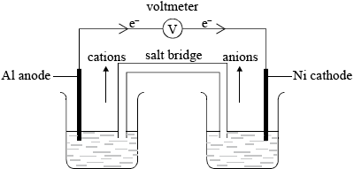
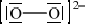

HL Paper 2
Consider the following half-cell reactions and their standard electrode potentials.
\[\begin{array}{*{20}{l}} {{\text{N}}{{\text{i}}^{2 + }}{\text{(aq)}} + {\text{2}}{{\text{e}}^ - } \rightleftharpoons {\text{Ni(s)}}}&{{E^\Theta } = - {\text{0.26 V}}} \\ {{\text{A}}{{\text{l}}^{3 + }}{\text{(aq)}} + {\text{3}}{{\text{e}}^ - } \rightleftharpoons {\text{Al(s)}}}&{{E^\Theta } = - {\text{1.66 V}}} \end{array}\]
Outline two differences between an electrolytic cell and a voltaic cell.
Deduce a balanced equation for the overall reaction which will occur spontaneously when these two half-cells are connected.
Determine the cell potential when the two half-cells are connected.
On the cell diagram below, label the negative electrode (anode), the positive electrode (cathode) and the directions of the movement of electrons and ion flow.

Markscheme
electrolytic cell converts electrical energy to chemical energy and voltaic cell converts chemical energy to electrical energy / electrolytic cell uses electricity to carry out a (redox) chemical reaction and voltaic cell uses a (redox) chemical reaction to produce electricity / electrolytic cell requires a power supply and voltaic cell does not;
electrolytic cell involves a non-spontaneous (redox) reaction and voltaic cell involves a spontaneous (redox) reaction;
in an electrolytic cell, cathode is negative and anode is positive and vice-versa for a voltaic cell / electrolytic cell, anode is positive and voltaic cell, anode is negative / electrolytic cell, cathode is negative and voltaic cell, cathode is positive;
voltaic cell has two separate solutions and electrolytic cell has one solution / voltaic cell has salt bridge and electrolytic cell has no salt bridge;
electrolytic cell, oxidation occurs at the positive electrode/anode and voltaic cell, oxidation occurs at the negative electrode/anode/vice-versa;
If descriptions are reversed for electrolytic and voltaic cell, penalize first marking point but award second marking point as ECF.
\({\text{2Al(s)}} + {\text{3N}}{{\text{i}}^{2 + }}{\text{(aq)}} \to {\text{2A}}{{\text{l}}^{3 + }}{\text{(aq)}} + {\text{3Ni (s)}}\);
Correct reactants and products, award [1]
Balancing award [1].
Ignore state symbols and equilibrium sign.
\(( + )1.40{\text{ (V)}}\);
aluminium anode/negative electrode;
nickel cathode/positive electrode;
electron movement from Al to Ni;
correct movement of cations and anions through salt bridge;
If electron movement shown correctly but not labelled, award the mark

Examiners report
This question was generally well answered. The majority of candidates were able to state two differences between a voltaic and an electrolytic cell.
In part (b), a balanced equation and cell potential were correctly deduced by most candidates.
In part (b), a balanced equation and cell potential were correctly deduced by most candidates.
The ability to label the direction of the movement of cations and anions through the salt bridge proved to be the most difficult question on the paper.
Consider the following equilibrium.
\[\begin{array}{*{20}{l}} {{\text{2S}}{{\text{O}}_2}{\text{(g)}} + {{\text{O}}_2}{\text{(g)}} \rightleftharpoons {\text{2S}}{{\text{O}}_3}{\text{(g)}}}&{\Delta {H^\Theta } = - 198{\text{ kJ}}\,{\text{mo}}{{\text{l}}^{ - 1}}} \end{array}\]
State and explain the effect of increasing the pressure on the yield of sulfur trioxide.
State the effects of a catalyst on the forward and reverse reactions, on the position of equilibrium and on the value of \({K_{\text{c}}}\).
When a mixture of 0.100 mol NO, 0.051 mol \({{\text{H}}_{\text{2}}}\) and 0.100 mol \({{\text{H}}_{\text{2}}}{\text{O}}\) were placed in a \({\text{1.0 d}}{{\text{m}}^{\text{3}}}\) flask at 300 K, the following equilibrium was established.
\(2{\text{NO(g)}} + 2{{\text{H}}_2}{\text{(g)}} \rightleftharpoons {{\text{N}}_2}{\text{(g)}} + 2{{\text{H}}_2}{\text{O(g)}}\)
At equilibrium, the concentration of NO was found to be \({\text{0.062 mol}}\,{\text{d}}{{\text{m}}^{ - 3}}\). Determine the equilibrium constant, \({K_{\text{c}}}\), of the reaction at this temperature.
Outline two differences between an electrolytic cell and a voltaic cell.
Electroplating is an important application of electrolysis. State the composition of the electrodes and the electrolyte used in the silver electroplating process.
Markscheme
yield (of \({\text{S}}{{\text{O}}_{\text{3}}}\)) increases / equilibrium moves to right / more \({\text{S}}{{\text{O}}_{\text{3}}}\) formed;
3 gaseous molecules \( \to \) 2 gaseous molecules / decrease in volume of gaseous molecules / fewer gaseous molecules on right hand side;
Do not allow ECF.
rates of both forward and reverse reactions increase equally;
no effect on position of equilibrium;
no effect on value of [3] \({K_{\text{c}}}\);
\({\text{2NO(g)}} + {\text{2}}{{\text{H}}_2}{\text{(g)}} \rightleftharpoons {{\text{N}}_2}{\text{(g)}} + {\text{2}}{{\text{H}}_2}{\text{O(g)}}\)

\({\text{[}}{{\text{H}}_{\text{2}}}{\text{] at equilibrium}} = 0.013{\text{ (mol}}\,{\text{d}}{{\text{m}}^{ - 3}}{\text{)}}\);
\({\text{[}}{{\text{N}}_{\text{2}}}{\text{] at equilibrium}} = 0.019{\text{ (mol}}\,{\text{d}}{{\text{m}}^{ - 3}}{\text{)}}\);
\({\text{[}}{{\text{H}}_{\text{2}}}{\text{O] at equilibrium}} = 0.138{\text{ (mol}}\,{\text{d}}{{\text{m}}^{ - 3}}{\text{)}}\);
\({K_{\text{c}}} = {\text{[}}{{\text{N}}_2}{\text{][}}{{\text{H}}_2}{\text{O}}{{\text{]}}^2}{\text{/[NO}}{{\text{]}}^2}{{\text{[}}{{\text{H}}_2}{\text{]}}^2} = {\text{(0.019)(0.138}}{{\text{)}}^2}{\text{/(0.062}}{{\text{)}}^2}{{\text{(0.013)}}^2} = 5.6 \times {10^2}\);
Award [4] for final correct answer.
Accept any value also in range 557–560.
Do not penalize significant figures.
electrolytic cell converts electrical energy to chemical energy and voltaic cell converts chemical energy to electrical energy / electrolytic cell uses electricity to carry out a (redox) chemical reaction and voltaic cell uses a (redox) chemical reaction to produce electricity / electrolytic cell requires a power supply and voltaic cell does not;
electrolytic cell involves a non-spontaneous (redox) reaction and voltaic cell involves a spontaneous (redox) reaction;
in an electrolytic cell, cathode is negative and anode is positive and vice-versa for a voltaic cell / electrolytic cell, anode is positive and voltaic cell, anode is negative / electrolytic cell, cathode is negative and voltaic cell, cathode is positive;
voltaic cell has two separate solutions and electrolytic cell has one solution / voltaic cell has salt bridge and electrolytic cell has no salt bridge;
electrolytic cell, oxidation occurs at the positive electrode/anode and voltaic cell, oxidation occurs at the negative electrode/anode and vice-versa;
Cathode/negative electrode:
object to be plated;
Allow a specific example here e.g. spoon.
Accept inert metal/graphite.
Do not accept silver halides or their formulae.
Anode/positive electrode:
Silver/Ag;
Electrolyte:
\({{\text{[Ag(CN}}{{\text{)}}_{\text{2}}}{\text{]}}^ - }\);
Allow silver nitrate/AgNO3 / silver cyanide/any other suitable silver salt/solution.
Do not accept AgCl.
Examiners report
In (ii) an overwhelming number of candidates were able to score the first mark but did not refer to the gaseous state and hence lost the second mark.
Part (iv) was another question where candidates easily scored the second and third mark. Although this has been asked a number of times in recent sessions, some candidates still do not state that the rates of both the forward and reverse reactions increase equally.
(b) was considered a very challenging question for candidates, and usually only the better candidates scored all four marks.
In (c) (i) most candidates scored two marks.
Electroplating was a topic only partially understood by candidates, and so only a few candidates obtained all three marks in (v). Often the nature of the electrode was mixed up or in many cases incorrect electrolytes were given.
The emission spectrum of an element can be used to identify it.
Hydrogen spectral data give the frequency of 3.28 × 1015 s−1 for its convergence limit.
Calculate the ionization energy, in J, for a single atom of hydrogen using sections 1 and 2 of the data booklet.
Calculate the wavelength, in m, for the electron transition corresponding to the frequency in (a)(iii) using section 1 of the data booklet.
Deduce any change in the colour of the electrolyte during electrolysis.
Deduce the gas formed at the anode (positive electrode) when graphite is used in place of copper.
Explain why transition metals exhibit variable oxidation states in contrast to alkali metals.
![]()
Markscheme
IE «= ΔE = hν = 6.63 × 10–34 J s × 3.28 × 1015 s–1» = 2.17 × 10–18 «J»
[1 mark]
«\(\lambda = \frac{C}{{\text{v}}} = \frac{{3.00 \times {{10}^8}{\text{ m}}{{\text{s}}^{ - 1}}}}{{3.28 \times {{10}^{15}}{\text{ }}{{\text{s}}^{ - 1}}}} = \)» 9.15 × 10–8 «m»
[1 mark]
no change «in colour»
Do not accept “solution around cathode will become paler and solution around the anode will become darker”.
[1 mark]
oxygen/O2
Accept “carbon dioxide/CO2”.
[1 mark]
Transition metals:
«contain» d and s orbitals «which are close in energy»
OR
«successive» ionization energies increase gradually
Alkali metals:
second electron removed from «much» lower energy level
OR
removal of second electron requires large increase in ionization energy
[2 marks]
Examiners report
The conditions used in an electrolytic cell can determine the products formed.
A voltaic cell is constructed from two half-cells as illustrated below.

Nitrogen monoxide may be removed from industrial emissions via a reaction with ammonia as shown by the equation below.
\[{\text{4N}}{{\text{H}}_3}{\text{(g)}} + {\text{6NO(g)}} \to {\text{5}}{{\text{N}}_2}{\text{(g)}} + {\text{6}}{{\text{H}}_{\text{2}}}{\text{O(l)}}\]
Draw an electrolytic cell illustrating the electrolysis of molten nickel(II) bromide, \({\text{NiB}}{{\text{r}}_{\text{2}}}\). Include in the diagram the direction of the electron flow, the polarity of electrodes and state the half-equations for the product formed at each electrode.
Deduce the equations for the formation of the major product at the positive electrode (anode) when the following aqueous solutions are electrolysed.
• dilute sodium chloride
• concentrated sodium chloride
Use Table 14 of the Data Booklet to deduce the equation for the spontaneous reaction occurring in this cell.
Calculate the standard potential for this cell.
State the conditions necessary for the potential of the cell to equal that calculated in part (b) (ii) using the data from Table 14.
Using the data below and data from Table 14 of the Data Booklet, predict and explain which metal, cadmium or chromium, may be obtained by electrolysis of separate aqueous solutions of \({\text{C}}{{\text{d}}^{2 + }}{\text{(aq)}}\) ions and \({\text{C}}{{\text{r}}^{2 + }}{\text{(aq)}}\) ions.
Electrolysis is used in the electroplating of metals. The same amount of current is passed through separate aqueous solutions of \({\text{NiS}}{{\text{O}}_{\text{4}}}\), \({\text{Sn(S}}{{\text{O}}_{\text{4}}}{{\text{)}}_{\text{2}}}\) and \({\text{C}}{{\text{r}}_{\text{2}}}{{\text{(S}}{{\text{O}}_{\text{4}}}{\text{)}}_{\text{3}}}\) in separate electrolytic cells for the same amount of time. State and explain which cell would deposit the greatest amount (in mol) of metal. Identify the electrode at which the metal is deposited.
For the \({\text{Sn(S}}{{\text{O}}_{\text{4}}}{{\text{)}}_{\text{2}}}\) cell, suggest two factors, other than time and current, that would affect the amount of metal deposited during electroplating.
Deduce the oxidation number of the nitrogen in the reactants and product.
Deduce the oxidation and reduction half-equations and identify the oxidizing agent for the reaction.
\({\text{30.0 d}}{{\text{m}}^{\text{3}}}\) of ammonia reacts with \({\text{30.0 d}}{{\text{m}}^{\text{3}}}\) of nitrogen monoxide at 100 °C. Identify which gas is in excess and by how much and calculate the volume of nitrogen produced.
Markscheme

labelled polarities of positive and negative electrodes;
Electrodes can be labelled positive or negative or + and – signs can be used.
direction of electron flow;
\({e^ - }\) does not have to be labelled but arrow essential.
power source and molten electrolyte/\({\text{N}}{{\text{i}}^{2 + }}{\text{(l)}}\) and \({\text{B}}{{\text{r}}^ - }{\text{(l)/NiB}}{{\text{r}}_{\text{2}}}{\text{(l)}}\);
State symbol necessary for M3 unless molten electrolyte stated.
Power source does not need to be labelled if correct symbol used (i.e. short line and long line).
Cathode/negative electrode equation:
\({\text{N}}{{\text{i}}^{2 + }} + {\text{2}}{{\text{e}}^ - } \to {\text{Ni}}\);
Anode/positive electrode equation:
\({\text{2B}}{{\text{r}}^ - } \to {\text{B}}{{\text{r}}_2} + {\text{2}}{{\text{e}}^ - }\);
Accept balanced half-equation with one \({e^ - }\).
Award [1 max] for M4 and M5 if electrodes are not identified or if equations are given wrong way round or incorrectly labelled.
Penalize \( \rightleftharpoons \) once only in Q.9.
Allow e instead of \({e^ - }\).
Ignore state symbols for M4 and M5.
Dilute sodium chloride:
\({\text{2}}{{\text{H}}_2}{\text{O}} \to {{\text{O}}_2} + {\text{4}}{{\text{H}}^ + } + {\text{4}}{{\text{e}}^ - }/{\text{4O}}{{\text{H}}^ - } \to {{\text{O}}_2} + {\text{2}}{{\text{H}}_2}{\text{O}} + {\text{4}}{{\text{e}}^ - }\);
Concentrated sodium chloride:
\({\text{2C}}{{\text{l}}^ - } \to {\text{C}}{{\text{l}}_2} + {\text{2}}{{\text{e}}^ - }\);
Accept alternative balanced half-equations with correct number of electrons.
Award [1 max] if equations are given the wrong way round.
Award [2] if correct equations are written in order with dilute sodium chloride first and concentrated sodium chloride second but processes not stated explicitly.
Penalize \( \rightleftharpoons \) once only in Q.9.
Allow e instead of \({e^ - }\).
Ignore state symbols.
\({\text{Sn}} + {\text{C}}{{\text{u}}^{2 + }} \to {\text{S}}{{\text{n}}^{2 + }} + {\text{Cu}}\);
Ignore state symbols.
Penalize \( \rightleftharpoons \) once only in Q.9.
\((0.34 - - 0.14) = ( + )0.48{\text{ V}}\);
\({\text{1.0 mol}}\,{\text{d}}{{\text{m}}^{ - 3}}\) solutions and 25 °C/298 K;
\({\text{C}}{{\text{d}}^{2 + }}\) is a stronger oxidizing agent than \({{\text{H}}_{\text{2}}}{\text{O}}\) and will be displaced to produce Cd / OWTTE;
\({\text{C}}{{\text{r}}^{2 + }}\) is a weaker oxidizing agent than \({{\text{H}}_{\text{2}}}{\text{O}}\) and H2 will displace in preference to Cr / OWTTE;
Award [1 max] for stating Cd2+ stronger oxidizing agent than H2O and Cr2+ weaker oxidizing agent than H2O / OWTTE.
Ni;
only requires 2 mol of \({{\text{e}}^ - }\) for each mol of Ni / Sn requires 4 mol of \({{\text{e}}^ - }\) / Cr requires 3 mol of \({{\text{e}}^ - }\) / \({\text{N}}{{\text{i}}^{2 + }}\) needs least number of e– to produce 1 mol of Ni metal;
Allow e instead of \({e^ - }\).
cathode / negative electrode;
Do not award M3 for “metal deposited at cathode where oxidation occurs”.
temperature of solution;
\({\text{[S}}{{\text{n}}^{4 + }}{\text{]}}\);
surface area/size of electrode;
material of electrodes;
Do not allow nature of electrodes.
\({\text{N}}{{\text{H}}_{\text{3}}}\): \( - 3\);
NO: \( + 2\);
\({{\text{N}}_{\text{2}}}\): 0;
Penalize incorrect notation such as 3–, III, 2+, 2, II once only.
Oxidation:
\({\text{2N}}{{\text{H}}_{\text{3}}} \to {{\text{N}}_{\text{2}}} + {\text{6}}{{\text{H}}^ + } + {\text{6}}{{\text{e}}^ - }\);
Reduction:
\({\text{2NO}} + {\text{4}}{{\text{H}}^ + } + {\text{4}}{{\text{e}}^ - } \to {{\text{N}}_2} + {\text{2}}{{\text{H}}_2}{\text{O}}\);
Award [1 max] for M1 and M2 if redox processes are not identified or if equations are given wrong way round.
Penalize \( \rightleftharpoons \) once only in Q.9.
Allow e instead of \({e^ - }\).
Ignore state symbols.
Oxidizing agent: NO;
Allow either formula or name.
\({\text{N}}{{\text{H}}_{\text{3}}}\)/ammonia (in excess by) and 10 (\({\text{d}}{{\text{m}}^{\text{3}}}\));
25.0 (\({\text{d}}{{\text{m}}^{\text{3}}}\));
Examiners report
This was also a popular question but candidates often struggled to do well. In (a) (i), a number of candidates confused this question with one on voltaic cells and drew two half-cells connected rather than that of an electrolytic cell for the electrolysis of nickel bromide. The half-equations on the whole were poor and most were unlabelled. Use of equilibrium signs was widespread and many candidates did not realise that reduction takes place at the cathode leading to the formation of Ni etc.
Few correctly answered correctly the equation for dilute solutions in (ii).
In (b) (i) most candidates got the correct equation though \({\text{C}}{{\text{u}}^ + }\) was often given.
In (ii) some candidates forgot to include V as the unit.
Few scored one mark in (iii).
Most candidates did not have any clue about part (c). Few spotted that they needed to compare the oxidizing/reducing power to that of water. Most simply made a comparison between the two electrode potentials given. Most candidates scored zero on this question.
(d) (i) was often well answered though many did not state that 2 mol of electrons are required for each mol of Ni.
(ii) proved difficult and there were a number of G2 comments stating that this went somewhat beyond the syllabus. These points were valid and this was taken into account during Grade Award.
In (e), although most candidates scored full marks, incorrect notations such as 3-, III were sometimes seen.
In contrast to (e) (i) both (ii) and (iii) were very well answered.
In contrast to (e) (i) both (ii) and (iii) were very well answered.
The percentage of iron(II) ions, \({\text{F}}{{\text{e}}^{2 + }}\), in a vitamin tablet can be estimated by dissolving the tablet in dilute sulfuric acid and titrating with standard potassium manganate(VII) solution, \({\text{KMn}}{{\text{O}}_{\text{4}}}{\text{(aq)}}\). During the process iron(II) is oxidized to iron(III) and the manganate(VII) ion is reduced to the manganese(II) ion, \({\text{M}}{{\text{n}}^{2 + }}{\text{(aq)}}\). It was found that one tablet with a mass of 1.43 g required \({\text{11.6 c}}{{\text{m}}^{\text{3}}}\) of \(2.00 \times {10^{ - 2}}{\text{ mol}}\,{\text{d}}{{\text{m}}^{ - 3}}\) \({\text{KMn}}{{\text{O}}_{\text{4}}}{\text{(aq)}}\) to reach the end-point.
State the half-equation for the oxidation of the iron(II) ions.
State the half-equation for the reduction of the \({\text{MnO}}_4^ - \) ions in acidic solution.
Deduce the overall redox equation for the reaction.
Calculate the amount, in moles, of \({\text{MnO}}_4^ - \) ions present in \({\text{11.6 c}}{{\text{m}}^{\text{3}}}\) of \(2.00 \times {10^{ - 2}}{\text{ mol}}\,{\text{d}}{{\text{m}}^{ - 3}}\) \({\text{KMn}}{{\text{O}}_{\text{4}}}{\text{(aq)}}\).
Calculate the amount, in moles, of \({\text{F}}{{\text{e}}^{2 + }}\) ions present in the vitamin tablet.
Determine the percentage by mass of \({\text{F}}{{\text{e}}^{2 + }}\) ions present in the vitamin tablet.
Markscheme
\({\text{F}}{{\text{e}}^{2 + }} \to {\text{F}}{{\text{e}}^{3 + }} + {{\text{e}}^ - }\);
\({\text{MnO}}_4^ - + {\text{8}}{{\text{H}}^ + } + {\text{5}}{{\text{e}}^ - } \to {\text{M}}{{\text{n}}^{2 + }} + {\text{4}}{{\text{H}}_2}{\text{O}}\);
\({\text{MnO}}_4^ - + {\text{5F}}{{\text{e}}^{2 + }} + {\text{8}}{{\text{H}}^ + } \to {\text{M}}{{\text{n}}^{2 + }} + {\text{5F}}{{\text{e}}^{3 + }} + {\text{4}}{{\text{H}}_2}{\text{O}}\);
Accept e instead of e–.
\({\text{amount of MnO}}_4^ - = \frac{{11.6}}{{1000}} \times 0.0200 = 2.32 \times {10^{ - 4}}{\text{ mol}}\);
\({\text{amount of F}}{{\text{e}}^{2 + }} = 5 \times 2.32 \times {10^{ - 4}} = 1.16 \times {10^{ - 3}}{\text{ mol}}\);
\({\text{mass of F}}{{\text{e}}^{2 + }} = 55.85 \times 1.16 \times {10^{ - 3}} = 6.48 \times {10^{ - 2}}{\text{ g}}\);
\({\text{percentage of F}}{{\text{e}}^{2 + }}{\text{ in tablet}} = \frac{{6.48 \times {{10}^{ - 2}}}}{{1.43}} = 100 = 4.53\% \);
Examiners report
This question was generally well answered. A common mistake with writing half-equations was the failure to realise that only single arrows should be used if oxidation and reduction are specifically asked for. Candidates were only penalized once for this error.
Given that the half-equation involving \({\text{MnO}}_4^ - \) ions is provided in the Data Booklet, it was surprising that several candidates could not correctly write the equation for their reduction in acidic solution.
Chromium is a typical transition metal with many uses.
A voltaic cell is constructed as follows. One half-cell contains a platinum electrode in a solution containing \({{\text{K}}_{\text{2}}}{\text{C}}{{\text{r}}_{\text{2}}}{{\text{O}}_{\text{7}}}\) and \({{\text{H}}_{\text{2}}}{\text{S}}{{\text{O}}_{\text{4}}}\). The other half-cell contains an iron electrode in a solution containing \({\text{F}}{{\text{e}}^{2 + }}\) ions. The two electrodes are connected to a voltmeter and the two solutions by a salt bridge.
Distinguish between the terms oxidation and reduction in terms of oxidation numbers.
State the names of \({\text{C}}{{\text{r}}_{\text{2}}}{{\text{O}}_{\text{3}}}\) and \({\text{Cr}}{{\text{O}}_{\text{3}}}\).
\({\text{C}}{{\text{r}}_{\text{2}}}{{\text{O}}_{\text{3}}}\):
\({\text{Cr}}{{\text{O}}_{\text{3}}}\):
Define the term oxidizing agent.
\({\text{C}}{{\text{r}}_{\text{2}}}{\text{O}}_7^{2 - }{\text{(aq)}}\) and \({{\text{I}}^ - }{\text{(aq)}}\) ions react together in the presence of acid to form \({\text{C}}{{\text{r}}^{3 + }}{\text{(aq)}}\) and \({\text{IO}}_3^ - {\text{(aq)}}\) ions. Deduce the balanced chemical equation for this redox reaction and identify the species that acts as the oxidizing agent.
Draw a diagram of the voltaic cell, labelling the positive and negative electrodes (cathode and anode) and showing the direction of movement of the electrons and ions. Deduce an equation for the reaction occurring in each of the half-cells, and the equation for the overall cell reaction.
Define the term standard electrode potential.
Calculate the cell potential, in V, under standard conditions, using information from Table 14 of the Data Booklet.
State two characteristic properties of transition elements.
State the type of bond formed by a ligand and identify the feature that enables it to form this bond.
Explain why the complex \({{\text{[Cr(}}{{\text{H}}_{\text{2}}}{\text{O}}{{\text{)}}_{\text{6}}}{\text{]}}^{{\text{3 + }}}}\) is coloured.
Draw an orbital box diagram (arrow-in-box notation) showing the electrons in the 4s and 3d sub-levels in chromium metal.
Chromium is often used in electroplating. State what is used as the positive electrode (anode), the negative electrode (cathode) and the electrolyte in the chromium electroplating process.
Markscheme
Oxidation: increase in oxidation number and Reduction: decrease in oxidation number / OWTTE;
Cr2O3:
chromium(III) oxide;
Do not award mark for chromium oxide.
CrO3:
chromium(VI) oxide;
Do not award mark for chromium oxide.
Do not award any marks if chromium oxide without Roman numerals is given for both.
substance reduced / causes other substance to be oxidized / increase oxidation number of another species / gains electrons / OWTTE;
Oxidizing agent:
\({\text{C}}{{\text{r}}_2}{\text{O}}_7^{2 - }\) / dichromate (ion);
\({\text{C}}{{\text{r}}_2}{\text{O}}_7^{2 - }{\text{(aq)}} + {{\text{I}}^ - }{\text{(aq)}} + {\text{8}}{{\text{H}}^ + }{\text{(aq)}} \to {\text{2C}}{{\text{r}}^{3 + }}{\text{(aq)}} + {\text{IO}}_3^ - {\text{(aq)}} + {\text{4}}{{\text{H}}_2}{\text{O(l)}}\)
Award [1] for coefficients: Cr2O72–(aq), I–(aq), 2Cr3+(aq), IO3–(aq).
Award [1] for coefficients: 8H+(aq), 4H2O(l).
Award [1 max] if coefficients of reactants only correct i.e. Cr2O72–, I– and 8H+.
Award [1 max] if coefficients of products only correct i.e. 2Cr3+, IO3– and 4H2O.
Award [1 max] for correct reactants and products.
Ignore state symbols.

Voltaic cell showing:
labelled positive electrode (cathode) and negative electrode (anode);
direction of electrons in external circuit and direction of ions in salt bridge;
Award mark if correct direction of electrons is indicated but e– not labelled in external circuit.
Allow e instead of e–.
Cations/positive ions and anions/negative ions must be identified in salt bridge. Allow correct movement of ions in electrolyte instead of movement of ions in salt bridge (e.g. Fe2+ from Fe at negative electrode/anode etc.).
If both movement of ions in salt bridge and movement of ions in electrolyte is given but one is incorrect do not award mark.
Positive electrode (cathode):
\({\text{C}}{{\text{r}}_2}{\text{O}}_7^{2 - }{\text{(aq)}} + {\text{14}}{{\text{H}}^ + }{\text{(aq)}} + {\text{6}}{{\text{e}}^ - } \to {\text{2C}}{{\text{r}}^{3 + }}{\text{(aq)}} + {\text{7}}{{\text{H}}_2}{\text{O(l)}}\);
Negative electrode (anode):
\({\text{Fe(s)}} \to {\text{F}}{{\text{e}}^{2 + }}{\text{(aq)}} + {\text{2}}{{\text{e}}^ - }\);
Penalize once only.
Penalize once only if electrodes or equations reversed.
For both electrodes allow e instead of e–.
Overall cell reaction:
\({\text{C}}{{\text{r}}_2}{\text{O}}_7^{2 - }{\text{(aq)}} + {\text{3Fe(s)}} + {\text{14}}{{\text{H}}^ + }{\text{(aq)}} \to {\text{2C}}{{\text{r}}^{3 + }}{\text{(aq)}} + {\text{3F}}{{\text{e}}^{2 + }}{\text{(aq)}} + {\text{7}}{{\text{H}}_2}{\text{O(l)}}\);
Ignore state symbols throughout (d) (i).
potential under standard conditions relative to standard hydrogen electrode/SHE;
Reference must be made to standard conditions.
Instead of standard conditions allow either solute concentration of 1 mol\(\,\)dm–3/1 M/1 mol\(\,\)L–1 or 100 kPa/105 Pa for gases.
Allow 1 bar for 100 kPa/105 Pa.
Allow 1 atm/1.01 \( \times \) 105 Pa.
Allow voltage instead of potential.
\(( + )1.78{\text{ (V)}}\);
catalysts;
variable oxidation state/numbers;
Allow variable valency.
magnetic (properties);
(form) coloured ions/compounds;
Allow just coloured.
(form) complexes/complex ions;
Allow other metallic physical properties such as high densities/high melting points etc.
Allow partially filled/incomplete d subshell/sub-level.
dative (covalent)/coordinate;
Lewis base / (species/ion/molecule with) lone/non-bonding pair;
partially filled/incomplete d subshell/sub-level/orbitals;
d orbitals split (into two sets of different energies);
colour due to electron transition between (split) d orbitals / frequencies of visible light absorbed by electrons moving from lower to higher d levels;
colour due to remaining frequencies / complementary colour seen;
Allow wavelength as well as frequency.

Accept half-arrows or full arrows and boxes in reverse order.
Do not penalize if additional sub-levels are shown, if sub-levels are not labelled or if no boxes are drawn (providing system of arrows correct).
Do not award mark if sub-levels are incorrectly labelled.
Orbital diagram may also be represented with sub-levels shown at different relative energy positions.
Positive electrode (anode): chromium;
Allow lead/titanium/platinum/graphite.
Negative electrode (cathode): object to be plated;
Allow specific example here e.g. spoon.
Electrolyte: \({\text{C}}{{\text{r}}^{3 + }}{\text{(aq)}}\);
Allow (mixture of) \({\text{C}}{{\text{r}}^{3 + }}{\text{(aq)}}\) and CrO42–(aq)/chromate/chromic acid/H2CrO4.
Ignore state symbols.
Allow any soluble salt of Cr3+.
Examiners report
Candidates generally knew that oxidation involves an increase in oxidation number and reduction a decrease.
Some forgot to include the Roman Numerals here and a large majority simply got the Roman Numeral incorrect. One G2 comment suggested that it would have been better if systematic was included in the question which is a fair point, though typically candidates simply put chromium oxide for both compounds which showed misunderstanding of what was really required.
The definition of an oxidizing agent was well answered.
Most candidates knew that the dichromate ion acted as the oxidizing agent but many made lots of errors in deducing the balanced chemical equation.
Only the best candidates scored all five marks, though most candidates scored at least two marks. Some candidates mixed up the cathode and anode. Equilibrium signs were often written and very few gave the correct direction of the movement of ions. Some G2 comments stated that is was not clear what ion movement was required – flow of ions through the salt bridge or just movement of ions towards the electrodes in the electrolyte. In fact most candidates could not write either and the markscheme in fact allowed credit for either of these to be fair to candidates.
Standard conditions often was omitted.
(iii) was well answered.
Most candidates scored full marks here.
Most candidates scored full marks here.
Many candidates scored two out of three marks.
Many candidates put two electrons in the 4s level and four electrons in the 3d level which was incorrect in the orbital diagram.
Candidates often scored two out of three marks here with the most common error relating to the electrolyte.
The standard electrode potential for a half-cell made from iron metal in a solution of iron(II) ions, \({\text{F}}{{\text{e}}^{2 + }}{\text{(aq)}}\), has the value \( - 0.45{\text{ V}}\).
Consider the following table of standard electrode potentials.

From the list above:
An acidified solution of potassium dichromate is often used as an oxidizing agent in organic chemistry. During the oxidation reaction of ethanol to ethanal the dichromate ion is reduced to chromium(III) ions according to the following unbalanced half-equation.
\[{\text{C}}{{\text{r}}_2}{\text{O}}_7^{2 - }{\text{(aq)}} + {{\text{H}}^ + }{\text{(aq)}} + {{\text{e}}^ - } \to {\text{C}}{{\text{r}}^{3 + }}{\text{(aq)}} + {{\text{H}}_2}{\text{O(l)}}\]
Sodium metal can be obtained by the electrolysis of molten sodium chloride.
Define standard electrode potential.
Explain the significance of the minus sign in \( - {\text{0.45 V}}\).
State the species which is the strongest oxidizing agent.
Deduce which species can reduce \({\text{S}}{{\text{n}}^{4 + }}{\text{(aq)}}\) to \({\text{S}}{{\text{n}}^{2 + }}{\text{(aq)}}\) but will not reduce \({\text{S}}{{\text{n}}^{2 + }}{\text{(aq)}}\) to Sn(s) under standard conditions.
Deduce which species can reduce \({\text{S}}{{\text{n}}^{2 + }}{\text{(aq)}}\) to Sn(s) under standard conditions.
Draw a labelled diagram of a voltaic cell made from an Fe (s) / \({\text{F}}{{\text{e}}^{2 + }}{\text{(aq)}}\) half-cell connected to an Ag(s) / \({\text{A}}{{\text{g}}^ + }{\text{(aq)}}\) half-cell operating under standard conditions. In your diagram identify the positive electrode (cathode), the negative electrode (anode) and the direction of electron flow in the external circuit.
Deduce the equation for the chemical reaction occurring when the cell in part (c) (i) is operating under standard conditions and calculate the voltage produced by the cell.
Describe the colour change that will be observed in the reaction.
Deduce the oxidation number of chromium in \({\text{C}}{{\text{r}}_{\text{2}}}{\text{O}}_7^{2 - }\).
State the balanced half-equation for the reduction of dichromate ions to chromium(III) ions.
Deduce the half-equation for the oxidation of ethanol to ethanal and hence the overall redox equation for the oxidation of ethanol to ethanal by acidified dichromate ions.
Explain why it is necessary to carry out the reaction under acidic conditions.
Identify the organic product formed if excess potassium dichromate is used and the reaction is carried out under reflux.
Explain why it is very difficult to obtain sodium from sodium chloride by any other method.
Explain why an aqueous solution of sodium chloride cannot be used to obtain sodium metal by electrolysis.
Markscheme
the potential difference/voltage obtained when a half-cell is connected to a standard hydrogen electrode;
under standard conditions / \({\text{1.00 mol}}\,{\text{d}}{{\text{m}}^{ - 3}}\) solutions, 298 K;
the electrons flow from the half-cell to the standard hydrogen electrode / the half-cell forms the negative electrode when connected to the standard half-cell / Fe is a better reducing agent than \({{\text{H}}_2}\) / Fe is above \({{\text{H}}_2}\) in electrochemical series;
Accept “the half reaction is not spontaneous”.
bromine/ \({\text{B}}{{\text{r}}_2}\);
hydrogen/ \({{\text{H}}_2}\);
iron/Fe;
Ignore coefficients for Br2, H2 or Fe.

correct diagram including voltmeter;
No credit if wires to electrodes immersed in the solutions.
labelled salt bridge;
Do not accept name of salt (e.g. potassium nitrate) in place of salt bridge.
correctly labelled (+) and (–) electrodes / cathode and anode;
1 or \({\text{1.00 mol}}\,{\text{d}}{{\text{m}}^{ - 3}}\) concentrations/298 K;
flow of electrons from Fe to Ag in external circuit;
Award [2 max] if battery shown instead of voltmeter.
\({\text{Fe}} + {\text{2A}}{{\text{g}}^ + } \to {\text{F}}{{\text{e}}^{2 + }} + {\text{2Ag}}\);
\(E_{{\text{cell}}}^\Theta {\text{ }}( = 0.80 - ( - 0.45) = ){\text{ }}1.25{\text{ V}}\);
Ignore state symbols.
(the solution changes) from orange to green;
+6;
Do not accept 6, 6+ or the use of Roman numerals unless they have already been penalized in (2)(a).
\({\text{C}}{{\text{r}}_2}{\text{O}}_7^{2 - }{\text{ + 14}}{{\text{H}}^ + } + {\text{6}}{{\text{e}}^ - } \to {\text{2C}}{{\text{r}}^{3 + }} + {\text{7}}{{\text{H}}_2}{\text{O}}\);
\({\text{C}}{{\text{H}}_3}{\text{C}}{{\text{H}}_2}{\text{OH}} \to {\text{C}}{{\text{H}}_3}{\text{CHO}} + {\text{2}}{{\text{H}}^ + } + {\text{2}}{{\text{e}}^ - }\);
\({\text{C}}{{\text{r}}_2}{\text{O}}_7^{2 - } + {\text{3C}}{{\text{H}}_3}{\text{C}}{{\text{H}}_2}{\text{OH}} + {\text{8}}{{\text{H}}^ + } \to {\text{2C}}{{\text{r}}^{3 + }} + {\text{3C}}{{\text{H}}_3}{\text{CHO}} + {\text{7}}{{\text{H}}_2}{\text{O}}\)
For second equation award [1] for correct reactants and products and [1] for correct balancing.
\({{\text{H}}^ + }\) is a reactant / OWTTE;
ethanoic acid / \({\text{C}}{{\text{H}}_3}{\text{COOH}}\) / acid;
Accept acetic acid.
sodium is a very powerful reducing agent/high in electrochemical series;
any chemical reducing agent would need to be even higher in ECS to reduce \({\text{N}}{{\text{a}}^ + }\) / OWTTE;
\({{\text{H}}^ + }\) ions gain electrons more readily than \({\text{N}}{{\text{a}}^ + }\) / hydrogen is evolved instead;
hydrogen is below Na in ECS;
if sodium were to be formed it would react with the water in the solution / OWTTE;
Examiners report
This was the third most popular question. Most candidates were able to give only an incomplete definition of the standard electrode potential; the need for standard conditions was often omitted.
Only the strongest candidates were able to clearly explain the significance of the negative sign for the standard electrode potential of the half cell.
7(b) proved to be confusing for some candidates with many giving the half-equation instead of a specific species.
7(b) proved to be confusing for some candidates with many giving the half-equation instead of a specific species.
7(b) proved to be confusing for some candidates with many giving the half-equation instead of a specific species.
Labelling the voltaic cell was generally well done in (c) (i) but some responses mixed up the cathode and anode or gave a battery instead off a voltmeter. The most common omission, however, involved the concentrations (\({\text{1 mol}}\,{\text{d}}{{\text{m}}^{ - 3}}\)) of the solution and the temperature of 298 K.
A minority of candidates gave an equilibrium sign for the cell reaction and some candidates forgot the V units.
In (d) a surprising number of candidates were unable to give the colour change observed when dichromate(VI) ions are reduced to chromium(III) ions by ethanol.
The majority of candidates were not able to write the balanced redox reaction for the production of ethanal.
Most candidates were able to identify ethanoic acid as the product of further oxidation under reflux.
Many were unable to explain the need to carry out the reaction under acidic conditions.
The presence of \({{\text{H}}^ + }\) as a reactant in the equation was the expected response.
(e) proved to be very challenging with not many able to explain why it is difficult to obtain sodium from the electrolysis of aqueous sodium chloride.
All sorts of misunderstandings were in evidence, many involving a discussion of the compound‟s high lattice enthalpy.
A voltaic cell was set up, using the standard hydrogen electrode as a reference electrode and a standard \({\text{C}}{{\text{u}}^{2 + }}{\text{(aq)/Cu(s)}}\) electrode.
Another voltaic cell was set up, using a \({\text{S}}{{\text{n}}^{2 + }}{\text{(aq)/Sn(s)}}\) half-cell and a \({\text{C}}{{\text{u}}^{2 + }}{\text{(aq)/Cu(s)}}\) half-cell under standard conditions.
Water in a beaker at a pressure of \(1.01 \times {10^5}{\text{ Pa}}\) and a temperature of 298 K will not spontaneously decompose. However, decomposition of water can be induced by means of electrolysis.
Define oxidation in terms of oxidation number.
Deduce the balanced chemical equation for the redox reaction of copper, Cu(s), with nitrate ions, \({\text{N}}{{\text{O}}^{3 - }}{\text{(aq)}}\), in acid, to produce copper(II) ions, \({\text{C}}{{\text{u}}^{2 + }}{\text{(aq)}}\), and nitrogen(IV) oxide, \({\text{N}}{{\text{O}}_{\text{2}}}{\text{(g)}}\).
Deduce the oxidizing and reducing agents in this reaction.
Oxidizing agent:
Reducing agent:
Describe the standard hydrogen electrode including a fully labelled diagram.
Define the term standard electrode potential, \({E^\Theta }\).
Deduce a balanced chemical equation, including state symbols, for the overall reaction which will occur spontaneously when the two half-cells are connected.
Draw a fully labelled diagram of the voltaic cell, showing the positive electrode (cathode), the negative electrode (anode) and the direction of electron movement through the external circuit.
Using Table 14 of the Data Booklet, calculate the cell potential, \(E_{{\text{cell}}}^\Theta \), in V, when the two half-cells are connected.
Deduce the sign of the standard free energy change, \(\Delta {G^\Theta }\), for any non-spontaneous reaction.
State why dilute sulfuric acid needs to be added in order for the current to flow in the electrolytic cell.
State why copper electrodes cannot be used in the electrolysis of water. Suggest instead suitable metallic electrodes for this electrolysis process.
Deduce the half-equations for the reactions occurring at the positive electrode (anode) and the negative electrode (cathode).
Positive electrode (anode):
Negative electrode (cathode):
Deduce the overall cell reaction, including state symbols.
Draw a fully labelled diagram of the electrolytic cell, showing the positive electrode (anode) and the negative electrode (cathode).
Comment on what is observed at both electrodes.
Two electrolytic cells are connected in series (the same current passes through each cell). One cell for the electrolysis of water produces 100 cm\(^3\) of oxygen, measured at 273 K and \(1.01 \times {10^5}{\text{ Pa}}\). The second cell contains molten lead(II) bromide, \({\text{PbB}}{{\text{r}}_{\text{2}}}\). Determine the mass, in g, of lead produced.
Markscheme
increase (in oxidation number);
\({\text{Cu(s)}} + {\text{2NO}}_3^ - {\text{(aq)}} + {\text{4}}{{\text{H}}^ + }{\text{(aq)}} \to {\text{C}}{{\text{u}}^{2 + }}{\text{(aq)}} + {\text{2N}}{{\text{O}}_2}{\text{(g)}} + {\text{2}}{{\text{H}}_2}{\text{O(l) /}}\)
\({\text{Cu(s)}} + {\text{2HN}}{{\text{O}}_3}{\text{(aq)}} + {\text{2}}{{\text{H}}^ + }{\text{(aq)}} \to {\text{C}}{{\text{u}}^{2 + }} + {\text{2N}}{{\text{O}}_2}{\text{(g)}} + {\text{2HO(l)}}\);
correct reactants and products;
fully balanced chemical equation;
Ignore state symbols.
M1 can be scored if there are unbalanced electrons in equation.
M2 can only be scored if M1 is correct.
M2 can be scored if there are balanced electrons on both sides of equation.
Oxidizing agent: \({\text{NO}}_{\text{3}}^ - \)/nitrate/\({\text{HN}}{{\text{O}}_{\text{3}}}\)/nitric acid and Reducing agent: Cu/copper;
Diagram showing gas, solution and solid electrode;
For example,

\({\text{1 mol}}\,{\text{d}}{{\text{m}}^{ - 3}}{\text{ }}{{\text{H}}^ + }\) (aq) and Pt;
Allow 1 mol L–1 or 1 M.
Allow 1 mol dm–3 HCl (aq) or other source of 1mol dm−3 H+(aq) ions.
100 kPa/10\(^5\) Pa/1 bar (H\(_2\) (g) pressure) and 298K / 25 °C;
Ignore state symbols throughout.
Allow 1.01×10\(^5\) Pa/1 atm.
potential of reduction half-reaction under standard conditions measured relative to standard hydrogen electrode/SHE / potential under standard conditions relative to standard hydrogen electrode/SHE;
Instead of standard conditions allow either solute concentration of 1 mol\(\,\)dm–3 or 100 kPa/105 Pa/1 bar (pressure) for gases (allow 1 atm).
Allow voltage/EMF instead of potential.
\({\text{C}}{{\text{u}}^{2 + }}{\text{(aq)}} + {{\text{H}}_2}{\text{(g)}} \to {\text{Cu(s)}} + {\text{2}}{{\text{H}}^ + }{\text{(aq)}}\)
reactants and products;
fully balanced chemical equation, including state symbols;
M2 cannot be scored if M1 is incorrect.
Voltaic cell showing:
Labelled positive electrode (cathode): Cu2+ /Cu and negative electrode (anode): Sn2+ /Sn;
Do not penalize if state symbols are not included (since given in question).
voltmeter and salt bridge;
Voltmeter can be labelled or drawn as a circle with a V.
Allow ammeter/A.
Salt bridge can be labelled, represented with drawing connecting the two half-cells, labelled as potassium nitrate or using its chemical formula (for example, KNO3) etc.
correct direction of electron movement from Sn to Cu in external circuit;
\(( + )0.48{\text{ (V)}}\);
positive;
provides ions (to carry current) / water poor conductor (of electricity);
Do not accept electrons instead of ions.
copper reacts so (nonreactive metal such as) Pt used;
Accept Ag, Au or any named metal less reactive than copper as electrode.
Do not accept Cu reacts with water or graphite as electrode.
Positive electrode (anode):
\({\text{2}}{{\text{H}}_2}{\text{O(l)}} \to {{\text{O}}_2}{\text{(g)}} + {\text{4}}{{\text{H}}^ + }{\text{(aq)}} + {\text{4}}{{\text{e}}^ - }{\text{ / 4O}}{{\text{H}}^ - }{\text{(aq)}} \to {{\text{O}}_2}{\text{(g)}} + {\text{2}}{{\text{H}}_2}{\text{O(l)}} + {\text{4}}{{\text{e}}^ - }\);
Negative electrode (cathode):
\({{\text{H}}^ + }{\text{(aq)}} + {{\text{e}}^ - } \to \frac{1}{2}{{\text{H}}_2}{\text{(g) / 4}}{{\text{H}}^ + }{\text{(aq)}} + {\text{4}}{{\text{e}}^ - } \to {\text{2}}{{\text{H}}_2}{\text{(g) / 2}}{{\text{H}}^ + }{\text{(aq)}} + {\text{2}}{{\text{e}}^ - } \to {{\text{H}}_2}{\text{ /}}\)
\({\text{2}}{{\text{H}}_2}{\text{O(l)}} + {\text{2}}{{\text{e}}^ - } \to {{\text{H}}_2}{\text{(g)}} + {\text{2O}}{{\text{H}}^ - }{\text{(aq) / }}{{\text{H}}_2}{\text{O(l)}} + {{\text{e}}^ - } \to \frac{1}{2}{{\text{H}}_2}{\text{(g)}} + {\text{O}}{{\text{H}}^ - }\);
Award [1 max] if M1 and M2 reversed.
Ignore state symbols.
Allow e instead of e–.
Do not penalize use of equilibrium sign instead of \( \to \).
Accept a multiple of the equations.
\({\text{2}}{{\text{H}}_2}{\text{O(l)}} \to {\text{2}}{{\text{H}}_2}{\text{(g)}} + {{\text{O}}_2}{\text{(g) / }}{{\text{H}}_2}{\text{O(l)}} \to {{\text{H}}_2}{\text{(g)}} + \frac{1}{2}{{\text{O}}_2}{\text{(g)}}\);
State symbols required as asked for in question.
Do not penalize use of equilibrium sign instead of \( \to \).
Do not accept any multiple of 2H+(aq) + 2OH–(aq) \( \to \) 2H2(g) + O2(g).

electrolytic cell showing solid electrodes immersed in solution;
positive electrode (anode) connected to positive terminal of battery and
negative electrode (cathode) to negative terminal;
Allow graphite or metal given in e(iii) as electrodes.
bubbles /gas produced;
Do not accept hydrogen is formed at cathode and oxygen formed at anode.
\(n({{\text{O}}_2}){\text{ }}\left( { = \left( {\frac{{100}}{{22.4 \times 1000}}} \right)} \right) = 4.46 \times {10^{ - 3}}{\text{ (mol)}}\);
\(m{\text{ }}\left( { = (4.46 \times {{10}^{ - 3}} \times 2 \times 207.19)} \right) = 1.85{\text{ (g)}}\);
OR
\(n({{\text{O}}_2}){\text{ }}\left( { = \frac{{{\text{PV}}}}{{{\text{RT}}}}} \right) = 4.45 \times {10^{ - 3}}{\text{ (mol)}}\);
\(m{\text{ }}( = 4.45 \times {10^{ - 3}} \times 2 \times 207.19) = 1.84{\text{ (g)}}\);
Examiners report
Many made mistakes in writing a balanced equation for the reaction between Cu and HNO3, in drawing a diagram for a hydrogen electrode, in writing a definition of ‘standard electrode potential’. Most could draw a labeled diagram for an electrochemical cell. Many mistakes were made in writing balanced equations for reactions at the electrodes and overall equation for the electrolysis of water.
Many made mistakes in writing a balanced equation for the reaction between Cu and HNO3, in drawing a diagram for a hydrogen electrode, in writing a definition of ‘standard electrode potential’. Most could draw a labeled diagram for an electrochemical cell. Many mistakes were made in writing balanced equations for reactions at the electrodes and overall equation for the electrolysis of water.
Many made mistakes in writing a balanced equation for the reaction between Cu and HNO3, in drawing a diagram for a hydrogen electrode, in writing a definition of ‘standard electrode potential’. Most could draw a labeled diagram for an electrochemical cell. Many mistakes were made in writing balanced equations for reactions at the electrodes and overall equation for the electrolysis of water.
Many made mistakes in writing a balanced equation for the reaction between Cu and HNO3, in drawing a diagram for a hydrogen electrode, in writing a definition of ‘standard electrode potential’. Most could draw a labeled diagram for an electrochemical cell. Many mistakes were made in writing balanced equations for reactions at the electrodes and overall equation for the electrolysis of water.
Many made mistakes in writing a balanced equation for the reaction between Cu and HNO3, in drawing a diagram for a hydrogen electrode, in writing a definition of ‘standard electrode potential’. Most could draw a labeled diagram for an electrochemical cell. Many mistakes were made in writing balanced equations for reactions at the electrodes and overall equation for the electrolysis of water.
Many made mistakes in writing a balanced equation for the reaction between Cu and HNO3, in drawing a diagram for a hydrogen electrode, in writing a definition of ‘standard electrode potential’. Most could draw a labeled diagram for an electrochemical cell. Many mistakes were made in writing balanced equations for reactions at the electrodes and overall equation for the electrolysis of water.
Many made mistakes in writing a balanced equation for the reaction between Cu and HNO3, in drawing a diagram for a hydrogen electrode, in writing a definition of ‘standard electrode potential’. Most could draw a labeled diagram for an electrochemical cell. Many mistakes were made in writing balanced equations for reactions at the electrodes and overall equation for the electrolysis of water.
Many made mistakes in writing a balanced equation for the reaction between Cu and HNO3, in drawing a diagram for a hydrogen electrode, in writing a definition of ‘standard electrode potential’. Most could draw a labeled diagram for an electrochemical cell. Many mistakes were made in writing balanced equations for reactions at the electrodes and overall equation for the electrolysis of water.
Many made mistakes in writing a balanced equation for the reaction between Cu and HNO3, in drawing a diagram for a hydrogen electrode, in writing a definition of ‘standard electrode potential’. Most could draw a labeled diagram for an electrochemical cell. Many mistakes were made in writing balanced equations for reactions at the electrodes and overall equation for the electrolysis of water.
Many made mistakes in writing a balanced equation for the reaction between Cu and HNO3, in drawing a diagram for a hydrogen electrode, in writing a definition of ‘standard electrode potential’. Most could draw a labeled diagram for an electrochemical cell. Many mistakes were made in writing balanced equations for reactions at the electrodes and overall equation for the electrolysis of water.
Many made mistakes in writing a balanced equation for the reaction between Cu and HNO3, in drawing a diagram for a hydrogen electrode, in writing a definition of ‘standard electrode potential’. Most could draw a labeled diagram for an electrochemical cell. Many mistakes were made in writing balanced equations for reactions at the electrodes and overall equation for the electrolysis of water.
Many made mistakes in writing a balanced equation for the reaction between Cu and HNO3, in drawing a diagram for a hydrogen electrode, in writing a definition of ‘standard electrode potential’. Most could draw a labeled diagram for an electrochemical cell. Many mistakes were made in writing balanced equations for reactions at the electrodes and overall equation for the electrolysis of water.
Many made mistakes in writing a balanced equation for the reaction between Cu and HNO3, in drawing a diagram for a hydrogen electrode, in writing a definition of ‘standard electrode potential’. Most could draw a labeled diagram for an electrochemical cell. Many mistakes were made in writing balanced equations for reactions at the electrodes and overall equation for the electrolysis of water.
Many made mistakes in writing a balanced equation for the reaction between Cu and HNO3, in drawing a diagram for a hydrogen electrode, in writing a definition of ‘standard electrode potential’. Most could draw a labeled diagram for an electrochemical cell. Many mistakes were made in writing balanced equations for reactions at the electrodes and overall equation for the electrolysis of water.
Many made mistakes in writing a balanced equation for the reaction between Cu and HNO3, in drawing a diagram for a hydrogen electrode, in writing a definition of ‘standard electrode potential’. Most could draw a labeled diagram for an electrochemical cell. Many mistakes were made in writing balanced equations for reactions at the electrodes and overall equation for the electrolysis of water.
Many made mistakes in writing a balanced equation for the reaction between Cu and HNO3, in drawing a diagram for a hydrogen electrode, in writing a definition of ‘standard electrode potential’. Most could draw a labeled diagram for an electrochemical cell. Many mistakes were made in writing balanced equations for reactions at the electrodes and overall equation for the electrolysis of water.
In acidic solution, bromate ions, BrO3−(aq), oxidize iodide ions, I−(aq).
BrO3−(aq) + 6H+(aq) + 6e− \( \rightleftharpoons \) Br−(aq) + 3H2O(l)
2I−(aq) \( \rightleftharpoons \) I2(s) + 2e−
Formulate the equation for the redox reaction.
The change in the free energy for the reaction under standard conditions, ΔGΘ, is −514 kJ at 298 K.
Determine the value of EΘ, in V, for the reaction using sections 1 and 2 of the data booklet.
Calculate the standard electrode potential, in V, for the BrO3−/Br− reduction half‑equation using section 24 of the data booklet.
Markscheme
BrO3–(aq) + 6H+(aq) + 6I–(aq) \( \rightleftharpoons \) Br–(aq) + 3I2(s) + 3H2O(l)
Accept → for \( \rightleftharpoons \).
[1 mark]
n = 6
«ΔGΘ = –nFEΘ»
«\({E^\Theta } = - \frac{{\Delta {G^\Theta }}}{{{\text{n}}F}} = \frac{{514 \times {{10}^3}{\text{ J mo}}{{\text{l}}^{ - 1}}}}{{6 \times 9.65 \times {{10}^4}{\text{ C mo}}{{\text{l}}^{ - 1}}}} = \)» 0.888 «V»
[2 marks]
«EΘ = EΘ(BrO3–/Br–) – EΘ(I2/I–)»
«EΘ(BrO3–/Br–) = EΘ + EΘ(I2/I–) = 0.888 + 0.54 =» «+» 1.43 «V»
[1 mark]
Examiners report
An electrochemical cell is made from an iron half-cell connected to a cobalt half-cell:

The standard electrode potential for \({\text{F}}{{\text{e}}^{2 + }}{\text{(aq)}} + {\text{2}}{{\text{e}}^ - } \rightleftharpoons {\text{Fe(s)}}\) is –0.45 V. The total cell potential obtained when the cell is operating under standard conditions is 0.17 V. Cobalt is produced during the spontaneous reaction.
An electrolytic cell is made using a very dilute solution of sodium chloride.
Predict the products by giving the relevant half-equation for the reaction occurring at each electrode if the electrolyte of the cell described in part (c) was changed to:
Define the term standard electrode potential and state the meaning of the minus sign in the value of –0.45 V.
Calculate the value for the standard electrode potential for the cobalt half-cell.
Deduce which species acts as the oxidizing agent when the cell is operating.
Deduce the equation for the spontaneous reaction taking place when the iron half-cell is connected instead to an aluminium half-cell.
Explain the function of the salt bridge in an electrochemical cell.
\({{\text{[Co(}}{{\text{H}}_{\text{2}}}{\text{O}}{{\text{)}}_{\text{6}}}{\text{]}}^{2 + }}\)
\({\text{C}}{{\text{o}}_{\text{2}}}{{\text{(S}}{{\text{O}}_{\text{4}}}{\text{)}}_{\text{3}}}\)
\({{\text{[CoC}}{{\text{l}}_{\text{4}}}{\text{]}}^{2 - }}\)
Draw a labelled diagram of the cell. Use an arrow to show the direction of the electron flow and identify the positive and negative electrodes.
Give the formulas of all the ions present in the solution.
Predict the products obtained at each electrode and state the half-equation for the formation of each product.
Deduce the molar ratios of the products obtained at the two electrodes.
concentrated sodium chloride
molten sodium bromide
Markscheme
the voltage obtained when the half-cell is connected to the standard hydrogen electrode;
under standard conditions of 298 K and \({\text{1 mol}}\,{\text{d}}{{\text{m}}^{ - 3}}\) solutions;
electrons flow (in the external circuit) from the half-cell to the hydrogen electrode / the metal in the half-cell is above hydrogen in the ECS / Fe is a better reducing agent than \({{\text{H}}_2}\) / Fe is oxidised more readily than \({{\text{H}}_2}\);
–0.28 V;
\({\text{C}}{{\text{o}}^{2 + }}\)/cobalt(II) ion;
\({\text{2Al}} + {\text{3F}}{{\text{e}}^{2 + }} \to {\text{3Fe}} + {\text{2A}}{{\text{l}}^{3 + }}\);
Award [1] for correct reactants and products and [1] for correctly balanced, ignore states.
Do not accept \( \rightleftharpoons \)
to complete the electrical circuit / OWTTE;
by allowing the movement of ions;
+2;
+3;
+2;
Only penalize once if roman numerals are used or if written as 2+ or 3+.
diagram to show:

battery/source of electricity connected to two electrodes in the solution with positive and negative electrodes correctly labelled;
electrons/current flowing from the cell to the negative electrode;
labelled solution of sodium chloride;
If the connecting wires to electrodes are immersed in the solution [1 max].
\({\text{N}}{{\text{a}}^ + }\), \({{\text{H}}^ + }{\text{/}}{{\text{H}}_{\text{3}}}{{\text{O}}^ + }\), \({\text{C}}{{\text{l}}^ - }\), \({\text{O}}{{\text{H}}^ - }\)
All four correct [2], any three correct [1].
hydrogen at (–)/cathode and oxygen at (+)/anode;
\({\text{2}}{{\text{H}}^ + } + {\text{2}}{{\text{e}}^ - } \to {{\text{H}}_2}{\text{ / 2}}{{\text{H}}_2}{\text{O}} + {\text{2}}{{\text{e}}^ - } \to {{\text{H}}_{\text{2}}} + 2{\text{O}}{{\text{H}}^ - }\);
\({\text{4O}}{{\text{H}}^ - } \to {{\text{O}}_{\text{2}}} + 2{{\text{H}}_2}{\text{O}} + {\text{4}}{{\text{e}}^ - }{\text{ / 2}}{{\text{H}}_2}{\text{O}} \to {{\text{O}}_2} + {\text{4}}{{\text{H}}^ + } + {\text{4}}{{\text{e}}^ - }\);
Accept e instead of e–
If electrodes omitted or wrong way round [2 max].
Ratio of \({{\text{H}}_{\text{2}}}:{{\text{O}}_{\text{2}}}\) is \(2:1\);
\({\text{(}} - {\text{)/(cathode) 2}}{{\text{H}}^ + } + {\text{2}}{{\text{e}}^ - } \to {{\text{H}}_2}/{\text{2}}{{\text{H}}_2}{\text{O}} + {\text{2}}{{\text{e}}^ - } \to {{\text{H}}_2} + {\text{2O}}{{\text{H}}^ - }\);
\({\text{( + )/(anode) 2C}}{{\text{l}}^ - } \to {\text{C}}{{\text{l}}_2} + {\text{2}}{{\text{e}}^ - }\);
Accept e instead of e–.
If electrodes omitted or wrong way round [1 max]
\({\text{(}} - {\text{)/(cathode) N}}{{\text{a}}^ + } + {{\text{e}}^ - } \to {\text{Na}}\);
\({\text{( + )/(anode) 2B}}{{\text{r}}^ - } \to {\text{B}}{{\text{r}}_2} + {\text{2}}{{\text{e}}^ - }\);
Accept e instead of e–.
If electrodes omitted or wrong way round [1 max].
Examiners report
This question was poorly answered. In part (a), the definition of standard electrode potential was poorly stated, with the standard hydrogen electrode rarely mentioned.
Many candidates had difficulty determining the value of the standard electrode potential for the cobalt half-cell.
Few gave \({\text{C}}{{\text{o}}^{2 + }}\) as the oxidizing agent.
If a penalty had already been incurred in Question 4, no further penalty was applied; otherwise the use of the equilibrium arrow in this question was penalized once only.
In part (b), most candidates correctly determined the oxidation states, although they were frequently written incorrectly as 2+ or 3+.
In part (b), most candidates correctly determined the oxidation states, although they were frequently written incorrectly as 2+ or 3+.
In part (b), most candidates correctly determined the oxidation states, although they were frequently written incorrectly as 2+ or 3+.
In part (c) many candidates drew a voltaic cell instead of an electrolytic cell.
Half-equations were frequently the wrong way round, and electrodes were not identified. Candidates who included states of matter in their equations frequently wrote the wrong state and were penalized.
Half-equations were frequently the wrong way round, and electrodes were not identified. Candidates who included states of matter in their equations frequently wrote the wrong state and were penalized.
Ethanedioic acid (oxalic acid), \({{\text{(COOH)}}_{\text{2}}}\), reacts with acidified potassium permanganate solution, \({\text{KMn}}{{\text{O}}_{\text{4}}}\), according to the following equation.
\[{\text{5(COOH}}{{\text{)}}_2}{\text{(aq)}} + {\text{2MnO}}_4^ - {\text{(aq)}} + {\text{6}}{{\text{H}}^ + }{\text{(aq)}} \to {\text{10C}}{{\text{O}}_2}{\text{(g)}} + {\text{2M}}{{\text{n}}^{2 + }}{\text{(aq)}} + {\text{8}}{{\text{H}}_2}{\text{O(l)}}\]
The reaction is a redox reaction.
Deduce the half-equation involving ethanedioic acid.
The standard electrode potential for the half-equation involving ethanedioic acid is \({E^\Theta } = - 0.49V\). Using Table 14 of the Data Booklet, calculate the standard electrode potential for the equation on page 10.
Explain the sign of the calculated standard electrode potential.
Predict the sign of \(\Delta {G^\Theta }\) for this reaction.
Markscheme
\({{\text{(COOH)}}_2} \rightleftharpoons {\text{2C}}{{\text{O}}_2} + {\text{2}}{{\text{H}}^ + } + {\text{2}}{{\text{e}}^ - }\);
Accept either \( \to \) or \( \rightleftharpoons \).
Allow equation times 5.
Allow e instead of e–.
\({\text{MnO}}_4^ - {\text{(aq)}} + {\text{8}}{{\text{H}}^ + }{\text{(aq)}} + {\text{5}}{{\text{e}}^ - } \rightleftharpoons {\text{M}}{{\text{n}}^{2 + }}{\text{(aq)}} + {\text{4}}{{\text{H}}_2}{\text{O(l)}}\) \({E^\Theta } = 1.51{\text{ V}}\);
\(\Delta {E^\Theta }{\text{ }}( = 1.51 + 0.49) = 2.00{\text{ V}}\);
First mark may be implied in the calculation.
Allow e instead of e–.
Accept either \( \to \) or \( \rightleftharpoons \).
positive sign, spontaneous reaction;
Allow ECF from (e) (i).
negative/\( < 0\);
Do not allow ECF. This mark is independent of the answer in (e)(ii).
Examiners report
Even when candidates appeared to be getting (d) correct, electrons were omitted or the equation was unbalanced (usually electrons).
The standard electrode potential in (e) was given in standard form and 1.51 V was usually found in the Data Booklet but a significant minority gave the wrong manganese potential and many gave the answer as +1.02 V. Candidates should note that the sign of \({E^\Theta }\) should be given in any answer.
The standard electrode potential in (e) was given in standard form and 1.51 V was usually found in the Data Booklet but a significant minority gave the wrong manganese potential and many gave the answer as +1.02 V. Candidates should note that the sign of \({E^\Theta }\) should be given in any answer. The spontaneity and signs in part (e)(ii) caused little difficulty.
The standard electrode potential in (e) was given in standard form and 1.51 V was usually found in the Data Booklet but a significant minority gave the wrong manganese potential and many gave the answer as +1.02 V. Candidates should note that the sign of \({E^\Theta }\) should be given in any answer. The spontaneity and signs in part (f) caused little difficulty.
Bromine is a member of group 7, the halogens.
Iron is a transition metal.
Freshly prepared iron(II) bromide can be electrolysed both in the liquid state and in aqueous solution.
Explain the trend in reactivity of the halogens.
Deduce, using equations where appropriate, if bromine reacts with sodium chloride solution and with sodium iodide solution.
Describe the bonding in metals and explain their malleability.
List three characteristic properties of transition elements.
Identify the type of bonding between iron and cyanide in \({{\text{[Fe(CN}}{{\text{)}}_{\text{6}}}{\text{]}}^{3 - }}\).
Deduce the oxidation number of iron in \({{\text{[Fe(CN}}{{\text{)}}_{\text{6}}}{\text{]}}^{3 - }}\).
Draw the abbreviated orbital diagram for an iron atom using the arrow-in-box notation to represent electrons.
Draw the abbreviated orbital diagram for the iron ion in [Fe(CN)6]3– using the arrow-in-box notation to represent electrons.
Describe, using a diagram, the essential components of an electrolytic cell.
Describe the two ways in which current is conducted in an electrolytic cell.
Predict and explain the products of electrolysis of a dilute iron(II) bromide solution.
Identify another product that is formed if the solution of iron(II) bromide is concentrated.
Explain why this other product is formed.
Markscheme
reactivity decreases down group;
as atomic radius increases / more electron shells;
attraction of nucleus on electrons decreases / electron affinity decreases;
Accept opposite argument for “up the group”.
no reaction with NaCl;
\({\text{B}}{{\text{r}}_2}{\text{(aq)}} + {\text{2NaI(aq)}} \to {\text{2NaBr(aq)}} + {{\text{I}}_2}{\text{(aq)}}\);
Accept ionic equation.
Ignore state symbols.
(electrostatic attraction between a) lattice of positive ions/cations and delocalized/sea of electrons;
Accept suitable diagram.
atoms/ions/layers (of positive ions) can slide over each other / OWTTE;
without change in the bonding forces / OWTTE;
variable oxidation numbers/valency
form complex (ions)
form coloured compounds/ions
catalytic (behaviour)
Award [2] for any three, [1] for any two.
dative (covalent)/coordinate;
III / \( + 3\);
Penalize incorrect format such as 3+ only if not penalized in 4 (b).

Penalise missing [Ar] only once in (v) and (vi).
Do not accept full orbital diagram; penalise only once in (v) and (vi).
Accept full or half-arrows in (v) and (vi).
Ignore absence of labels 4s and 3d.
 ;
;
Accept empty 4s box in (vi).
No ECF from (iv).

clear diagram containing all elements (power supply, connecting wires,
electrodes, container and electrolyte);
Accept power supply if shown as conventional long/short lines (as in diagram above) or clearly labelled DC power supply.
labelled positive electrode/anode and negative electrode/cathode;
Accept positive and negative by correct symbols near power supply.
labelled electrolyte/FeBr2(l)/FeBr2(aq);
State must be included for FeBr2.
Electrolyte: positive ions/cations move to negative electrode/cathode and negative ions/anions to positive electrode/anode;
Conductors: electrons flow from negative pole of battery to positive pole of battery / OWTTE;
Look at diagram in (i) for possible clarification of electron flow.
Award [1 max] for “electrons in wire/external circuit and ions in solution”.
Negative electrode/cathode:
\({{\text{H}}_{\text{2}}}\);
\({E^\Theta }{\text{(}}{{\text{H}}_{\text{2}}}{\text{)}}\) is less negative than \({E^\Theta }{\text{(Fe)}}\) / Fe is more reactive than \({{\text{H}}_{\text{2}}}\) / \({{\text{H}}_{\text{2}}}\) is lower in reactivity series / \({{\text{H}}^ + }\) more easily reduced than Fe2+ / OWTTE;
Positive electrode/anode:
\({{\text{O}}_{\text{2}}}\);
\({E^\Theta }{\text{(}}{{\text{O}}_{\text{2}}}{\text{)}}\) is less positive than \({E^\Theta }{\text{(B}}{{\text{r}}_{\text{2}}}{\text{)}}\) / in a dilute \({\text{B}}{{\text{r}}^ - }\) solution \({\text{O}}{{\text{H}}^ - }{\text{/}}{{\text{H}}_{\text{2}}}{\text{O}}\) is
preferably discharged / OWTTE;
Award [3 max] if electrodes reversed or omitted.
\({\text{B}}{{\text{r}}_{\text{2}}}\);
Accept Fe.
\({\text{2B}}{{\text{r}}^ - } \rightleftharpoons {\text{B}}{{\text{r}}_2} + {\text{2}}{{\text{e}}^ - }\) shifts to the right;
Accept similar reason for Fe.
Examiners report
This was the least popular of the Section B questions. In (a) (i) the trend was generally correctly identified but the reasons were not clear, many confusing electronegativity with electron affinity. Most knew about the reactions (or lack thereof) of bromine but the equations were sometimes unbalanced or included halogen atoms rather than molecules.
This was the least popular of the Section B questions. In (a) (i) the trend was generally correctly identified but the reasons were not clear, many confusing electronegativity with electron affinity. Most knew about the reactions (or lack thereof) of bromine but the equations were sometimes unbalanced or included halogen atoms rather than molecules.
There was a tendency to describe the bonding of metals in terms of nuclei rather than cations and malleability was not well understood.
The properties in (b) (ii) were surprisingly poor. Many suggested that the metals themselves are coloured rather than the compounds, for instance.
The bonding in (iii) was not well known but the oxidation number was generally answered correctly.
In (v), some candidates gave the full orbital diagram, some omitted [Ar] – and some just got it wrong!
The diagrams in (c) were poorly presented and often inaccurate (much confusion with a voltaic cell) and there was little understanding of how current was transmitted.
The diagrams in (c) were poorly presented and often inaccurate (much confusion with a voltaic cell) and there was little understanding of how current was transmitted.
In (iii), few candidates correctly predicted the products of electrolysis of dilute iron bromide, with many seeming to ignore the presence of hydrogen ions/hydroxide ions/water; correct explanations in terms of electrode potentials or preferential discharge were rare.
In (iii), few candidates correctly predicted the products of electrolysis of dilute iron bromide, with many seeming to ignore the presence of hydrogen ions/hydroxide ions/water; correct explanations in terms of electrode potentials or preferential discharge were rare. Despite this, bromine was often correctly identified in (iv).
In (v), few understood the impact of concentrating the electrolyte.
Bromomethane was used as a pesticide until it was found to be ozone-depleting.
State the equation for the reaction between methane and bromine to form bromomethane.
Explain, using equations, the complete free-radical mechanism for the reaction of methane with bromine, including necessary reaction conditions.
Bromomethane reacts with aqueous sodium hydroxide. State the organic product of this reaction.
Explain why the rate of the reaction between iodomethane, \({\text{C}}{{\text{H}}_{\text{3}}}{\text{I}}\), and NaOH(aq) is faster than the rate of the reaction between \({\text{C}}{{\text{H}}_{\text{3}}}{\text{Br}}\) and NaOH(aq).
Bromine can be produced by the electrolysis of molten sodium bromide.
Deduce the half-equation for the reaction at each electrode.
Positive electrode (anode):
Negative electrode (cathode):
Predict the products formed at the electrodes during the electrolysis of concentrated aqueous sodium bromide.
Positive electrode (anode):
Negative electrode (cathode):
Bromine reacts with aqueous sodium iodide.
\[{\text{B}}{{\text{r}}_{\text{2}}}{\text{(aq)}} + {\text{2NaI(aq)}} \to {{\text{I}}_{\text{2}}}{\text{(aq)}} + {\text{2NaBr(aq)}}\]
Identify the oxidizing agent in this reaction.
Define the term standard electrode potential, \({E^\Theta }\).
Draw a labelled diagram for the voltaic cell in which the following reaction occurs.
\[{\text{Mg(s)}} + {\text{C}}{{\text{u}}^{2 + }}{\text{(aq)}} \to {\text{M}}{{\text{g}}^{2 + }}{\text{(aq)}} + {\text{Cu(s)}}\]
Include in your answer the direction of electron flow and the polarity of the electrodes.
A student measures a voltage of 2.65 V in the voltaic cell formed between magnesium and copper half-cells using a digital voltmeter.
State the random uncertainty of this value, in V, and the number of significant figures in the answer.
Random uncertainty:
Significant figures:
Outline how the student can reduce the random error in her results.
Determine the standard enthalpy change of formation, \(\Delta H_{\text{f}}^\Theta \), of NaCl(s), in \({\text{kJ}}\,{\text{mo}}{{\text{l}}^{ - 1}}\), using a Born-Haber cycle and tables 7, 10 and 13 of the data booklet. The standard enthalpy change of atomization (standard enthalpy change of sublimation), \(\Delta H_{{\text{at}}}^\Theta \), of Na(s) is \( + {\text{108 kJ}}\,{\text{mo}}{{\text{l}}^{ - 1}}\).
Markscheme
\({\text{C}}{{\text{H}}_{\text{4}}} + {\text{B}}{{\text{r}}_{\text{2}}} \to {\text{C}}{{\text{H}}_{\text{3}}}{\text{Br}} + {\text{HBr}}\);
Initiation:
\({\text{B}}{{\text{r}}_2}\xrightarrow{{{\text{UV/}}hf{\text{/}}hv}}{\text{2Br}} \bullet \);
Reference to UV/light or high temperatures must be included.
Propagation:
\({\text{Br}} \bullet + {\text{C}}{{\text{H}}_4} \to {\text{C}}{{\text{H}}_3} \bullet + {\text{HBr}}\);
\({\text{C}}{{\text{H}}_3} \bullet + {\text{B}}{{\text{r}}_2} \to {\text{C}}{{\text{H}}_3}{\text{Br}} + {\text{Br}} \bullet \);
Termination:
Award [1 max] for any one of:
\({\text{Br}} \bullet + {\text{Br}} \bullet \to {\text{B}}{{\text{r}}_2}\);
\({\text{C}}{{\text{H}}_3} \bullet + {\text{Br}} \bullet \to {\text{C}}{{\text{H}}_3}{\text{Br}}\);
\({\text{C}}{{\text{H}}_3} \bullet + {\text{C}}{{\text{H}}_3} \bullet \to {{\text{C}}_2}{{\text{H}}_6}\);
Allow representation of radical without \( \bullet \) (eg Br, \(C{H_{\text{3}}}\)) if consistent throughout mechanism.
Award [3 max] if initiation, propagation and termination are not stated or are incorrectly labelled for equations.
\({\text{methanol/C}}{{\text{H}}_{\text{3}}}{\text{OH}}\);
C–I bond is weaker than the C–Br bond so more easily broken;
C–I bond is longer than the C–Br bond / I larger than Br so bonding electrons not as tightly held / \({{\text{I}}^ - }\) is better leaving group than \({\text{B}}{{\text{r}}^ - }\);
Positive electrode (anode):
\({\text{2B}}{{\text{r}}^ - } \to {\text{B}}{{\text{r}}_2}{\text{(g)}} + {\text{2}}{{\text{e}}^ - }{\text{/B}}{{\text{r}}^ - } \to \frac{1}{2}{\text{B}}{{\text{r}}_2}{\text{(g)}} + {{\text{e}}^ - }\);
Negative electrode (cathode):
\({\text{N}}{{\text{a}}^ + } + {{\text{e}}^ - } \to {\text{Na(l)}}\);
Award [1 max] for correct equations at incorrect electrodes.
Ignore state symbols.
Accept e instead of \({{\text{e}}^ - }\).
Penalize use of equilibrium signs once only.
Positive electrode (anode):
bromine/\({\text{B}}{{\text{r}}_{\text{2}}}\);
Negative electrode (cathode):
hydrogen/\({{\text{H}}_{\text{2}}}\);
Allow sodium hydroxide/NaOH/hydroxide/\(O{H^ - }\) formation.
bromine/\({\text{B}}{{\text{r}}_{\text{2}}}\);
Do not accept bromide/\(B{r^ - }\).
potential of reduction half-reaction under standard conditions measured relative to standard hydrogen electrode/SHE/potential under standard conditions relative to standard hydrogen electrode/SHE;
Instead of standard state allow either solute concentration of \(1 mol\,d{m^{ - {\text{3}}}}\) or
\(100 kPa/1.00 \times 1{0^5} Pa\) for gases.
Allow 1 bar for \(100 kPa/1.00 \times 1{0^5} Pa\).
Allow 1 atm.
Allow voltage instead of potential.

correct diagram including (voltmeter), 4 correct species (state symbols not required) and connecting wires;
No credit if wires to electrodes immersed in the solutions.
Accept ammeter/meter/lamp instead of voltmeter.
labelled salt bridge;
Accept an appropriate salt (name or formula) instead of salt bridge (eg, potassium nitrate).
correctly labelled electrodes as +/cathode and −/anode;
flow of electrons from Mg to Cu in external circuit;
Random uncertainty: (±) 0.01 (V);
Significant figures: 3;
repeat readings and take an average / use more precise equipment;
\({\text{atomization of chlorine}} = \frac{1}{2}{\text{ bond enthalpy / }}\frac{1}{2}{\text{ 243 / 121.5 (kJ}}\,{\text{mo}}{{\text{l}}^{ - 1}}{\text{)}}\);
correct values for ionization Na (\( + {\text{496 kJ}}\,{\text{mo}}{{\text{l}}^{ - 1}}\)) and electron affinity Cl (\( - {\text{349 kJ}}\,{\text{mo}}{{\text{l}}^{ - 1}}\))
and lattice enthalpy of NaCl (\( + {\text{790 kJ}}\,{\text{mo}}{{\text{l}}^{ - 1}}{\text{ /}} + {\text{769 kJ}}\,{\text{mo}}{{\text{l}}^{ - 1}}\));
Born-Haber energy cycle;
Accept lines or arrows in energy cycle.

\(\Delta H_{\text{f}}^\Theta {\text{(NaCl(s))}} = - {\text{413.5 /}} - {\text{413 /}} - {\text{414 (kJ}}\,{\text{mo}}{{\text{l}}^{ - 1}}{\text{)}}\);
Accept \( - 392.5 / - 392 / - 393 if + 769\) used for lattice enthalpy.
Award [4] for correct final answer.
Examiners report
Candidates found it difficult to write the equation in (a) and the mechanisms in (b) (i) ranged from really good to no understanding. Many opined the production of \( \bullet {\text{H}}\) in the first propagation step. A significant number of candidates suggested a mechanism involving ions despite free radical begin stated in the stem. Most were able to give methanol in (ii). Few scored full marks for (c); the answer needed to be thought through carefully. In (d) the electrodes were often reversed or the equations unbalanced. Few understood the significance of the water present in the answers to (ii). A high percentage of candidates gave the correct answer to (e) but (f) was poorly answered. Either the standard hydrogen electrode or standard conditions were omitted in (i) and the standard of diagrams in (ii) was very poor indeed. Little care seemed to have been taken over their presentation; it was not clear what, if anything, was in the beakers and electrode connections were shown actually in the solutions. In (iii) some did not notice that the voltmeter was digital but most gave the number of significant figures correctly. In (iv) many suggested repeated readings but few stated that an average omitted must be taken. In (g), those who didn’t draw out the cycle tended to get the answer wrong. Examiners cannot give part marks if they cannot work out what is being done. There was one mark for a correct Born-Haber cycle. Very few gained the mark for dividing the chlorine value by 2.
Candidates found it difficult to write the equation in (a) and the mechanisms in (b) (i) ranged from really good to no understanding. Many opined the production of \( \bullet {\text{H}}\) in the first propagation step. A significant number of candidates suggested a mechanism involving ions despite free radical begin stated in the stem. Most were able to give methanol in (ii). Few scored full marks for (c); the answer needed to be thought through carefully. In (d) the electrodes were often reversed or the equations unbalanced. Few understood the significance of the water present in the answers to (ii). A high percentage of candidates gave the correct answer to (e) but (f) was poorly answered. Either the standard hydrogen electrode or standard conditions were omitted in (i) and the standard of diagrams in (ii) was very poor indeed. Little care seemed to have been taken over their presentation; it was not clear what, if anything, was in the beakers and electrode connections were shown actually in the solutions. In (iii) some did not notice that the voltmeter was digital but most gave the number of significant figures correctly. In (iv) many suggested repeated readings but few stated that an average omitted must be taken. In (g), those who didn’t draw out the cycle tended to get the answer wrong. Examiners cannot give part marks if they cannot work out what is being done. There was one mark for a correct Born-Haber cycle. Very few gained the mark for dividing the chlorine value by 2.
Candidates found it difficult to write the equation in (a) and the mechanisms in (b) (i) ranged from really good to no understanding. Many opined the production of \( \bullet {\text{H}}\) in the first propagation step. A significant number of candidates suggested a mechanism involving ions despite free radical begin stated in the stem. Most were able to give methanol in (ii). Few scored full marks for (c); the answer needed to be thought through carefully. In (d) the electrodes were often reversed or the equations unbalanced. Few understood the significance of the water present in the answers to (ii). A high percentage of candidates gave the correct answer to (e) but (f) was poorly answered. Either the standard hydrogen electrode or standard conditions were omitted in (i) and the standard of diagrams in (ii) was very poor indeed. Little care seemed to have been taken over their presentation; it was not clear what, if anything, was in the beakers and electrode connections were shown actually in the solutions. In (iii) some did not notice that the voltmeter was digital but most gave the number of significant figures correctly. In (iv) many suggested repeated readings but few stated that an average omitted must be taken. In (g), those who didn’t draw out the cycle tended to get the answer wrong. Examiners cannot give part marks if they cannot work out what is being done. There was one mark for a correct Born-Haber cycle. Very few gained the mark for dividing the chlorine value by 2.
Candidates found it difficult to write the equation in (a) and the mechanisms in (b) (i) ranged from really good to no understanding. Many opined the production of \( \bullet {\text{H}}\) in the first propagation step. A significant number of candidates suggested a mechanism involving ions despite free radical begin stated in the stem. Most were able to give methanol in (ii). Few scored full marks for (c); the answer needed to be thought through carefully. In (d) the electrodes were often reversed or the equations unbalanced. Few understood the significance of the water present in the answers to (ii). A high percentage of candidates gave the correct answer to (e) but (f) was poorly answered. Either the standard hydrogen electrode or standard conditions were omitted in (i) and the standard of diagrams in (ii) was very poor indeed. Little care seemed to have been taken over their presentation; it was not clear what, if anything, was in the beakers and electrode connections were shown actually in the solutions. In (iii) some did not notice that the voltmeter was digital but most gave the number of significant figures correctly. In (iv) many suggested repeated readings but few stated that an average omitted must be taken. In (g), those who didn’t draw out the cycle tended to get the answer wrong. Examiners cannot give part marks if they cannot work out what is being done. There was one mark for a correct Born-Haber cycle. Very few gained the mark for dividing the chlorine value by 2.
Candidates found it difficult to write the equation in (a) and the mechanisms in (b) (i) ranged from really good to no understanding. Many opined the production of \( \bullet {\text{H}}\) in the first propagation step. A significant number of candidates suggested a mechanism involving ions despite free radical begin stated in the stem. Most were able to give methanol in (ii). Few scored full marks for (c); the answer needed to be thought through carefully. In (d) the electrodes were often reversed or the equations unbalanced. Few understood the significance of the water present in the answers to (ii). A high percentage of candidates gave the correct answer to (e) but (f) was poorly answered. Either the standard hydrogen electrode or standard conditions were omitted in (i) and the standard of diagrams in (ii) was very poor indeed. Little care seemed to have been taken over their presentation; it was not clear what, if anything, was in the beakers and electrode connections were shown actually in the solutions. In (iii) some did not notice that the voltmeter was digital but most gave the number of significant figures correctly. In (iv) many suggested repeated readings but few stated that an average omitted must be taken. In (g), those who didn’t draw out the cycle tended to get the answer wrong. Examiners cannot give part marks if they cannot work out what is being done. There was one mark for a correct Born-Haber cycle. Very few gained the mark for dividing the chlorine value by 2.
Candidates found it difficult to write the equation in (a) and the mechanisms in (b) (i) ranged from really good to no understanding. Many opined the production of \( \bullet {\text{H}}\) in the first propagation step. A significant number of candidates suggested a mechanism involving ions despite free radical begin stated in the stem. Most were able to give methanol in (ii). Few scored full marks for (c); the answer needed to be thought through carefully. In (d) the electrodes were often reversed or the equations unbalanced. Few understood the significance of the water present in the answers to (ii). A high percentage of candidates gave the correct answer to (e) but (f) was poorly answered. Either the standard hydrogen electrode or standard conditions were omitted in (i) and the standard of diagrams in (ii) was very poor indeed. Little care seemed to have been taken over their presentation; it was not clear what, if anything, was in the beakers and electrode connections were shown actually in the solutions. In (iii) some did not notice that the voltmeter was digital but most gave the number of significant figures correctly. In (iv) many suggested repeated readings but few stated that an average omitted must be taken. In (g), those who didn’t draw out the cycle tended to get the answer wrong. Examiners cannot give part marks if they cannot work out what is being done. There was one mark for a correct Born-Haber cycle. Very few gained the mark for dividing the chlorine value by 2.
Candidates found it difficult to write the equation in (a) and the mechanisms in (b) (i) ranged from really good to no understanding. Many opined the production of \( \bullet {\text{H}}\) in the first propagation step. A significant number of candidates suggested a mechanism involving ions despite free radical begin stated in the stem. Most were able to give methanol in (ii). Few scored full marks for (c); the answer needed to be thought through carefully. In (d) the electrodes were often reversed or the equations unbalanced. Few understood the significance of the water present in the answers to (ii). A high percentage of candidates gave the correct answer to (e) but (f) was poorly answered. Either the standard hydrogen electrode or standard conditions were omitted in (i) and the standard of diagrams in (ii) was very poor indeed. Little care seemed to have been taken over their presentation; it was not clear what, if anything, was in the beakers and electrode connections were shown actually in the solutions. In (iii) some did not notice that the voltmeter was digital but most gave the number of significant figures correctly. In (iv) many suggested repeated readings but few stated that an average omitted must be taken. In (g), those who didn’t draw out the cycle tended to get the answer wrong. Examiners cannot give part marks if they cannot work out what is being done. There was one mark for a correct Born-Haber cycle. Very few gained the mark for dividing the chlorine value by 2.
Candidates found it difficult to write the equation in (a) and the mechanisms in (b) (i) ranged from really good to no understanding. Many opined the production of \( \bullet {\text{H}}\) in the first propagation step. A significant number of candidates suggested a mechanism involving ions despite free radical begin stated in the stem. Most were able to give methanol in (ii). Few scored full marks for (c); the answer needed to be thought through carefully. In (d) the electrodes were often reversed or the equations unbalanced. Few understood the significance of the water present in the answers to (ii). A high percentage of candidates gave the correct answer to (e) but (f) was poorly answered. Either the standard hydrogen electrode or standard conditions were omitted in (i) and the standard of diagrams in (ii) was very poor indeed. Little care seemed to have been taken over their presentation; it was not clear what, if anything, was in the beakers and electrode connections were shown actually in the solutions. In (iii) some did not notice that the voltmeter was digital but most gave the number of significant figures correctly. In (iv) many suggested repeated readings but few stated that an average omitted must be taken. In (g), those who didn’t draw out the cycle tended to get the answer wrong. Examiners cannot give part marks if they cannot work out what is being done. There was one mark for a correct Born-Haber cycle. Very few gained the mark for dividing the chlorine value by 2.
Candidates found it difficult to write the equation in (a) and the mechanisms in (b) (i) ranged from really good to no understanding. Many opined the production of \( \bullet {\text{H}}\) in the first propagation step. A significant number of candidates suggested a mechanism involving ions despite free radical begin stated in the stem. Most were able to give methanol in (ii). Few scored full marks for (c); the answer needed to be thought through carefully. In (d) the electrodes were often reversed or the equations unbalanced. Few understood the significance of the water present in the answers to (ii). A high percentage of candidates gave the correct answer to (e) but (f) was poorly answered. Either the standard hydrogen electrode or standard conditions were omitted in (i) and the standard of diagrams in (ii) was very poor indeed. Little care seemed to have been taken over their presentation; it was not clear what, if anything, was in the beakers and electrode connections were shown actually in the solutions. In (iii) some did not notice that the voltmeter was digital but most gave the number of significant figures correctly. In (iv) many suggested repeated readings but few stated that an average omitted must be taken. In (g), those who didn’t draw out the cycle tended to get the answer wrong. Examiners cannot give part marks if they cannot work out what is being done. There was one mark for a correct Born-Haber cycle. Very few gained the mark for dividing the chlorine value by 2.
Candidates found it difficult to write the equation in (a) and the mechanisms in (b) (i) ranged from really good to no understanding. Many opined the production of \( \bullet {\text{H}}\) in the first propagation step. A significant number of candidates suggested a mechanism involving ions despite free radical begin stated in the stem. Most were able to give methanol in (ii). Few scored full marks for (c); the answer needed to be thought through carefully. In (d) the electrodes were often reversed or the equations unbalanced. Few understood the significance of the water present in the answers to (ii). A high percentage of candidates gave the correct answer to (e) but (f) was poorly answered. Either the standard hydrogen electrode or standard conditions were omitted in (i) and the standard of diagrams in (ii) was very poor indeed. Little care seemed to have been taken over their presentation; it was not clear what, if anything, was in the beakers and electrode connections were shown actually in the solutions. In (iii) some did not notice that the voltmeter was digital but most gave the number of significant figures correctly. In (iv) many suggested repeated readings but few stated that an average omitted must be taken. In (g), those who didn’t draw out the cycle tended to get the answer wrong. Examiners cannot give part marks if they cannot work out what is being done. There was one mark for a correct Born-Haber cycle. Very few gained the mark for dividing the chlorine value by 2.
Candidates found it difficult to write the equation in (a) and the mechanisms in (b) (i) ranged from really good to no understanding. Many opined the production of \( \bullet {\text{H}}\) in the first propagation step. A significant number of candidates suggested a mechanism involving ions despite free radical begin stated in the stem. Most were able to give methanol in (ii). Few scored full marks for (c); the answer needed to be thought through carefully. In (d) the electrodes were often reversed or the equations unbalanced. Few understood the significance of the water present in the answers to (ii). A high percentage of candidates gave the correct answer to (e) but (f) was poorly answered. Either the standard hydrogen electrode or standard conditions were omitted in (i) and the standard of diagrams in (ii) was very poor indeed. Little care seemed to have been taken over their presentation; it was not clear what, if anything, was in the beakers and electrode connections were shown actually in the solutions. In (iii) some did not notice that the voltmeter was digital but most gave the number of significant figures correctly. In (iv) many suggested repeated readings but few stated that an average omitted must be taken. In (g), those who didn’t draw out the cycle tended to get the answer wrong. Examiners cannot give part marks if they cannot work out what is being done. There was one mark for a correct Born-Haber cycle. Very few gained the mark for dividing the chlorine value by 2.
Candidates found it difficult to write the equation in (a) and the mechanisms in (b) (i) ranged from really good to no understanding. Many opined the production of \( \bullet {\text{H}}\) in the first propagation step. A significant number of candidates suggested a mechanism involving ions despite free radical begin stated in the stem. Most were able to give methanol in (ii). Few scored full marks for (c); the answer needed to be thought through carefully. In (d) the electrodes were often reversed or the equations unbalanced. Few understood the significance of the water present in the answers to (ii). A high percentage of candidates gave the correct answer to (e) but (f) was poorly answered. Either the standard hydrogen electrode or standard conditions were omitted in (i) and the standard of diagrams in (ii) was very poor indeed. Little care seemed to have been taken over their presentation; it was not clear what, if anything, was in the beakers and electrode connections were shown actually in the solutions. In (iii) some did not notice that the voltmeter was digital but most gave the number of significant figures correctly. In (iv) many suggested repeated readings but few stated that an average omitted must be taken. In (g), those who didn’t draw out the cycle tended to get the answer wrong. Examiners cannot give part marks if they cannot work out what is being done. There was one mark for a correct Born-Haber cycle. Very few gained the mark for dividing the chlorine value by 2.
Ethanol is a primary alcohol that can be oxidized by acidified potassium dichromate(VI). Distinguish between the reaction conditions needed to produce ethanal and ethanoic acid.
Ethanal:
Ethanoic acid:
Determine the oxidation number of carbon in ethanol and ethanal.
Ethanol:
Ethanal:
Deduce the half-equation for the oxidation of ethanol to ethanal.
Deduce the overall redox equation for the reaction of ethanol to ethanal with acidified potassium dichromate(VI).
Ethanol can be made by reacting aqueous sodium hydroxide with bromoethane.
Explain the mechanism for this reaction, using curly arrows to represent the movement of electron pairs.
Determine the orders of reaction of the reactants and the overall rate expression for the reaction between 2-bromobutane and aqueous sodium hydroxide using the data in the table.

Determine the rate constant, \(k\), with its units, using the data from experiment 3.
Identify the molecularity of the rate-determining step in this reaction.
2-bromobutane exists as optical isomers.
State the essential feature of optical isomers.
2-bromobutane exists as optical isomers.
Outline how a polarimeter can distinguish between these isomers.
Describe the formation of \(\sigma \) and \(\pi \) bonds in an alkene.
The two most abundant isotopes of bromine have the mass numbers 79 and 81.
Calculate the relative abundance of \(^{{\text{79}}}{\text{Br}}\) using table 5 of the data booklet, assuming the abundance of the other isotopes is negligible.
Markscheme
Ethanal: distill off product as it forms;
Accept distillation.
Ethanoic acid: (heat under) reflux / use excess oxidizing agent;
Ethanol: –2/–II;
Ethanal: –1/–I;
Do not accept 2–, 1– but penalize once only.
\({\text{C}}{{\text{H}}_3}{\text{C}}{{\text{H}}_2}{\text{OH}} \to {\text{C}}{{\text{H}}_3}{\text{CHO}} + {\text{2}}{{\text{H}}^ + } + {\text{2}}{{\text{e}}^ - }\);
Half-equation required. Do not accept \({C_2}{H_5}OH + 2[O] \to C{H_3}CHO + {H_2}O\).
Accept e for \({e^ - }\).
\({\text{3C}}{{\text{H}}_3}{\text{C}}{{\text{H}}_2}{\text{OH(aq)}} + {\text{C}}{{\text{r}}_2}{\text{O}}_7^{2 - }{\text{(aq)}} + {\text{8}}{{\text{H}}^ + }{\text{(aq)}} \to {\text{2C}}{{\text{r}}^{{\text{3}} + }}{\text{(aq)}} + {\text{3C}}{{\text{H}}_3}{\text{CHO(l)}} + {\text{7}}{{\text{H}}_2}{\text{O(l)}}\)
correct reactants and products;
correct balancing;
M2 can only be scored if M1 correct.
Ignore state symbols.

curly arrow going from lone pair/negative charge on O in \({\text{H}}{{\text{O}}^ - }\) to C;
Do not allow curly arrow originating on H in \(H{O^ - }\).
curly arrow showing Br leaving;
Accept curly arrow either going from bond between C and Br to Br in bromoethane or in the transition state.
representation of transition state showing negative charge, square brackets and partial bonds;
Do not penalize if HO and Br are not at 180° to each other.
Do not award M3 if OH----C bond is represented.
formation of organic product \({\text{C}}{{\text{H}}_{\text{3}}}{\text{C}}{{\text{H}}_{\text{2}}}{\text{OH}}\) and \({\text{B}}{{\text{r}}^ - }\);
Award [3 max] for correct \({S_N}1\) mechanism.
\({\text{[NaOH] / [O}}{{\text{H}}^ - }{\text{]}}\) is 1/first order and \({\text{[}}{{\text{C}}_4}{{\text{H}}_9}{\text{Br]}}\) is 1/first order;
\({\text{rate }} = k{\text{[O}}{{\text{H}}^ - }{\text{][}}{{\text{C}}_4}{{\text{H}}_9}{\text{Br] / rate}} = k{\text{[NaOH][}}{{\text{C}}_4}{{\text{H}}_9}{\text{Br]}}\);
Square brackets must be used for M2.
\(\left( {\frac{{1.02 \times {{10}^{ - 4}}}}{{0.25 \times 0.25}} = } \right)0.0016/1.6 \times {10^{ - 3}}\);
\({\text{mo}}{{\text{l}}^{ - 1}}\,{\text{d}}{{\text{m}}^{\text{3}}}\,{{\text{s}}^{ - 1}}\);
Accept \({M^{ - 1}} {s^{ - 1}}\).
Ignore order of units.
Must use experiment 3 data.
bimolecular/2;
Accept dimolecular.
chiral/asymmetric carbon / carbon attached to 4 different groups / non-super imposable mirror images;
enantiomers rotate plane of (plane-) polarized light;
in opposite directions (by equal amounts);
Sigma bonds:

result from head-on/end-on overlap of orbitals / OWTTE;
Accept axial overlap of orbitals.
Accept “symmetric orbital” with respect to same plane / OWTTE.
Pi bonds:

result from sideways overlap of orbitals / OWTTE;
Accept “antisymmetric orbitals” with respect to (defining) plane (containing at least one atom) / OWTTE.
\(79.91 = 79x + 81(1 - x)\);
Award M1 for any suitable calculation.
(abundance \(^{{\text{79}}}{\text{Br}} = \)) 54.5%;
Award [2] for correct final answer.
Examiners report
The idea of “reflux” was usually given for the production of ethanoic acid in (a) but ethanal was less clear. We accept that perhaps we should have phrased (a) (ii), “Determine the average oxidation number of carbon in …” In practice, this was one of the best answered parts and caused few difficulties. Few had any idea how to attempt the half-equation in (iii) and the overall equation in (iv). Although the mechanism in (b) has been set on numerous occasions, candidates are still not taking care over the start and finish of the curly arrows and the intermediate is drawn poorly. It must have partial bonds and the sign must be outside the square brackets. Some candidates offered an \({{\text{S}}_{\text{N}}}{\text{1}}\) mechanism. In (c) (ii), the orders were usually successfully deduced but many omitted to give the overall rate expression. In part (ii), quite a number of candidates unaccountably ignored the instruction and used any experiment but No 3. The units were frequently wrong or omitted. The molecularity was answered satisfactorily. In (d), candidates frequently stated that the molecules have mirror images but not that these mirror images are non-superposable. “Chiral” was a popular correct answer. There seemed to be little understanding of a polarimeter with some suggesting that the crystals themselves rotate. In (e) the equations were poor and few were able to identify the reagent. Most descriptions in (f) would have been improved with a careful and clear diagram. Part (g), the relative abundance of \(^{{\text{79}}}{\text{Br}}\) was well done except by those who tried to do it “by inspection”; this usually led to the wrong answer.
The idea of “reflux” was usually given for the production of ethanoic acid in (a) but ethanal was less clear. We accept that perhaps we should have phrased (a) (ii), “Determine the average oxidation number of carbon in …” In practice, this was one of the best answered parts and caused few difficulties. Few had any idea how to attempt the half-equation in (iii) and the overall equation in (iv). Although the mechanism in (b) has been set on numerous occasions, candidates are still not taking care over the start and finish of the curly arrows and the intermediate is drawn poorly. It must have partial bonds and the sign must be outside the square brackets. Some candidates offered an \({{\text{S}}_{\text{N}}}{\text{1}}\) mechanism. In (c) (ii), the orders were usually successfully deduced but many omitted to give the overall rate expression. In part (ii), quite a number of candidates unaccountably ignored the instruction and used any experiment but No 3. The units were frequently wrong or omitted. The molecularity was answered satisfactorily. In (d), candidates frequently stated that the molecules have mirror images but not that these mirror images are non-superposable. “Chiral” was a popular correct answer. There seemed to be little understanding of a polarimeter with some suggesting that the crystals themselves rotate. In (e) the equations were poor and few were able to identify the reagent. Most descriptions in (f) would have been improved with a careful and clear diagram. Part (g), the relative abundance of \(^{{\text{79}}}{\text{Br}}\) was well done except by those who tried to do it “by inspection”; this usually led to the wrong answer.
The idea of “reflux” was usually given for the production of ethanoic acid in (a) but ethanal was less clear. We accept that perhaps we should have phrased (a) (ii), “Determine the average oxidation number of carbon in …” In practice, this was one of the best answered parts and caused few difficulties. Few had any idea how to attempt the half-equation in (iii) and the overall equation in (iv). Although the mechanism in (b) has been set on numerous occasions, candidates are still not taking care over the start and finish of the curly arrows and the intermediate is drawn poorly. It must have partial bonds and the sign must be outside the square brackets. Some candidates offered an \({{\text{S}}_{\text{N}}}{\text{1}}\) mechanism. In (c) (ii), the orders were usually successfully deduced but many omitted to give the overall rate expression. In part (ii), quite a number of candidates unaccountably ignored the instruction and used any experiment but No 3. The units were frequently wrong or omitted. The molecularity was answered satisfactorily. In (d), candidates frequently stated that the molecules have mirror images but not that these mirror images are non-superposable. “Chiral” was a popular correct answer. There seemed to be little understanding of a polarimeter with some suggesting that the crystals themselves rotate. In (e) the equations were poor and few were able to identify the reagent. Most descriptions in (f) would have been improved with a careful and clear diagram. Part (g), the relative abundance of \(^{{\text{79}}}{\text{Br}}\) was well done except by those who tried to do it “by inspection”; this usually led to the wrong answer.
The idea of “reflux” was usually given for the production of ethanoic acid in (a) but ethanal was less clear. We accept that perhaps we should have phrased (a) (ii), “Determine the average oxidation number of carbon in …” In practice, this was one of the best answered parts and caused few difficulties. Few had any idea how to attempt the half-equation in (iii) and the overall equation in (iv). Although the mechanism in (b) has been set on numerous occasions, candidates are still not taking care over the start and finish of the curly arrows and the intermediate is drawn poorly. It must have partial bonds and the sign must be outside the square brackets. Some candidates offered an \({{\text{S}}_{\text{N}}}{\text{1}}\) mechanism. In (c) (ii), the orders were usually successfully deduced but many omitted to give the overall rate expression. In part (ii), quite a number of candidates unaccountably ignored the instruction and used any experiment but No 3. The units were frequently wrong or omitted. The molecularity was answered satisfactorily. In (d), candidates frequently stated that the molecules have mirror images but not that these mirror images are non-superposable. “Chiral” was a popular correct answer. There seemed to be little understanding of a polarimeter with some suggesting that the crystals themselves rotate. In (e) the equations were poor and few were able to identify the reagent. Most descriptions in (f) would have been improved with a careful and clear diagram. Part (g), the relative abundance of \(^{{\text{79}}}{\text{Br}}\) was well done except by those who tried to do it “by inspection”; this usually led to the wrong answer.
The idea of “reflux” was usually given for the production of ethanoic acid in (a) but ethanal was less clear. We accept that perhaps we should have phrased (a) (ii), “Determine the average oxidation number of carbon in …” In practice, this was one of the best answered parts and caused few difficulties. Few had any idea how to attempt the half-equation in (iii) and the overall equation in (iv). Although the mechanism in (b) has been set on numerous occasions, candidates are still not taking care over the start and finish of the curly arrows and the intermediate is drawn poorly. It must have partial bonds and the sign must be outside the square brackets. Some candidates offered an \({{\text{S}}_{\text{N}}}{\text{1}}\) mechanism. In (c) (ii), the orders were usually successfully deduced but many omitted to give the overall rate expression. In part (ii), quite a number of candidates unaccountably ignored the instruction and used any experiment but No 3. The units were frequently wrong or omitted. The molecularity was answered satisfactorily. In (d), candidates frequently stated that the molecules have mirror images but not that these mirror images are non-superposable. “Chiral” was a popular correct answer. There seemed to be little understanding of a polarimeter with some suggesting that the crystals themselves rotate. In (e) the equations were poor and few were able to identify the reagent. Most descriptions in (f) would have been improved with a careful and clear diagram. Part (g), the relative abundance of \(^{{\text{79}}}{\text{Br}}\) was well done except by those who tried to do it “by inspection”; this usually led to the wrong answer.
The idea of “reflux” was usually given for the production of ethanoic acid in (a) but ethanal was less clear. We accept that perhaps we should have phrased (a) (ii), “Determine the average oxidation number of carbon in …” In practice, this was one of the best answered parts and caused few difficulties. Few had any idea how to attempt the half-equation in (iii) and the overall equation in (iv). Although the mechanism in (b) has been set on numerous occasions, candidates are still not taking care over the start and finish of the curly arrows and the intermediate is drawn poorly. It must have partial bonds and the sign must be outside the square brackets. Some candidates offered an \({{\text{S}}_{\text{N}}}{\text{1}}\) mechanism. In (c) (ii), the orders were usually successfully deduced but many omitted to give the overall rate expression. In part (ii), quite a number of candidates unaccountably ignored the instruction and used any experiment but No 3. The units were frequently wrong or omitted. The molecularity was answered satisfactorily. In (d), candidates frequently stated that the molecules have mirror images but not that these mirror images are non-superposable. “Chiral” was a popular correct answer. There seemed to be little understanding of a polarimeter with some suggesting that the crystals themselves rotate. In (e) the equations were poor and few were able to identify the reagent. Most descriptions in (f) would have been improved with a careful and clear diagram. Part (g), the relative abundance of \(^{{\text{79}}}{\text{Br}}\) was well done except by those who tried to do it “by inspection”; this usually led to the wrong answer.
The idea of “reflux” was usually given for the production of ethanoic acid in (a) but ethanal was less clear. We accept that perhaps we should have phrased (a) (ii), “Determine the average oxidation number of carbon in …” In practice, this was one of the best answered parts and caused few difficulties. Few had any idea how to attempt the half-equation in (iii) and the overall equation in (iv). Although the mechanism in (b) has been set on numerous occasions, candidates are still not taking care over the start and finish of the curly arrows and the intermediate is drawn poorly. It must have partial bonds and the sign must be outside the square brackets. Some candidates offered an \({{\text{S}}_{\text{N}}}{\text{1}}\) mechanism. In (c) (ii), the orders were usually successfully deduced but many omitted to give the overall rate expression. In part (ii), quite a number of candidates unaccountably ignored the instruction and used any experiment but No 3. The units were frequently wrong or omitted. The molecularity was answered satisfactorily. In (d), candidates frequently stated that the molecules have mirror images but not that these mirror images are non-superposable. “Chiral” was a popular correct answer. There seemed to be little understanding of a polarimeter with some suggesting that the crystals themselves rotate. In (e) the equations were poor and few were able to identify the reagent. Most descriptions in (f) would have been improved with a careful and clear diagram. Part (g), the relative abundance of \(^{{\text{79}}}{\text{Br}}\) was well done except by those who tried to do it “by inspection”; this usually led to the wrong answer.
The idea of “reflux” was usually given for the production of ethanoic acid in (a) but ethanal was less clear. We accept that perhaps we should have phrased (a) (ii), “Determine the average oxidation number of carbon in …” In practice, this was one of the best answered parts and caused few difficulties. Few had any idea how to attempt the half-equation in (iii) and the overall equation in (iv). Although the mechanism in (b) has been set on numerous occasions, candidates are still not taking care over the start and finish of the curly arrows and the intermediate is drawn poorly. It must have partial bonds and the sign must be outside the square brackets. Some candidates offered an \({{\text{S}}_{\text{N}}}{\text{1}}\) mechanism. In (c) (ii), the orders were usually successfully deduced but many omitted to give the overall rate expression. In part (ii), quite a number of candidates unaccountably ignored the instruction and used any experiment but No 3. The units were frequently wrong or omitted. The molecularity was answered satisfactorily. In (d), candidates frequently stated that the molecules have mirror images but not that these mirror images are non-superposable. “Chiral” was a popular correct answer. There seemed to be little understanding of a polarimeter with some suggesting that the crystals themselves rotate. In (e) the equations were poor and few were able to identify the reagent. Most descriptions in (f) would have been improved with a careful and clear diagram. Part (g), the relative abundance of \(^{{\text{79}}}{\text{Br}}\) was well done except by those who tried to do it “by inspection”; this usually led to the wrong answer.
The idea of “reflux” was usually given for the production of ethanoic acid in (a) but ethanal was less clear. We accept that perhaps we should have phrased (a) (ii), “Determine the average oxidation number of carbon in …” In practice, this was one of the best answered parts and caused few difficulties. Few had any idea how to attempt the half-equation in (iii) and the overall equation in (iv). Although the mechanism in (b) has been set on numerous occasions, candidates are still not taking care over the start and finish of the curly arrows and the intermediate is drawn poorly. It must have partial bonds and the sign must be outside the square brackets. Some candidates offered an \({{\text{S}}_{\text{N}}}{\text{1}}\) mechanism. In (c) (ii), the orders were usually successfully deduced but many omitted to give the overall rate expression. In part (ii), quite a number of candidates unaccountably ignored the instruction and used any experiment but No 3. The units were frequently wrong or omitted. The molecularity was answered satisfactorily. In (d), candidates frequently stated that the molecules have mirror images but not that these mirror images are non-superposable. “Chiral” was a popular correct answer. There seemed to be little understanding of a polarimeter with some suggesting that the crystals themselves rotate. In (e) the equations were poor and few were able to identify the reagent. Most descriptions in (f) would have been improved with a careful and clear diagram. Part (g), the relative abundance of \(^{{\text{79}}}{\text{Br}}\) was well done except by those who tried to do it “by inspection”; this usually led to the wrong answer.
The idea of “reflux” was usually given for the production of ethanoic acid in (a) but ethanal was less clear. We accept that perhaps we should have phrased (a) (ii), “Determine the average oxidation number of carbon in …” In practice, this was one of the best answered parts and caused few difficulties. Few had any idea how to attempt the half-equation in (iii) and the overall equation in (iv). Although the mechanism in (b) has been set on numerous occasions, candidates are still not taking care over the start and finish of the curly arrows and the intermediate is drawn poorly. It must have partial bonds and the sign must be outside the square brackets. Some candidates offered an \({{\text{S}}_{\text{N}}}{\text{1}}\) mechanism. In (c) (ii), the orders were usually successfully deduced but many omitted to give the overall rate expression. In part (ii), quite a number of candidates unaccountably ignored the instruction and used any experiment but No 3. The units were frequently wrong or omitted. The molecularity was answered satisfactorily. In (d), candidates frequently stated that the molecules have mirror images but not that these mirror images are non-superposable. “Chiral” was a popular correct answer. There seemed to be little understanding of a polarimeter with some suggesting that the crystals themselves rotate. In (e) the equations were poor and few were able to identify the reagent. Most descriptions in (f) would have been improved with a careful and clear diagram. Part (g), the relative abundance of \(^{{\text{79}}}{\text{Br}}\) was well done except by those who tried to do it “by inspection”; this usually led to the wrong answer.
The idea of “reflux” was usually given for the production of ethanoic acid in (a) but ethanal was less clear. We accept that perhaps we should have phrased (a) (ii), “Determine the average oxidation number of carbon in …” In practice, this was one of the best answered parts and caused few difficulties. Few had any idea how to attempt the half-equation in (iii) and the overall equation in (iv). Although the mechanism in (b) has been set on numerous occasions, candidates are still not taking care over the start and finish of the curly arrows and the intermediate is drawn poorly. It must have partial bonds and the sign must be outside the square brackets. Some candidates offered an \({{\text{S}}_{\text{N}}}{\text{1}}\) mechanism. In (c) (ii), the orders were usually successfully deduced but many omitted to give the overall rate expression. In part (ii), quite a number of candidates unaccountably ignored the instruction and used any experiment but No 3. The units were frequently wrong or omitted. The molecularity was answered satisfactorily. In (d), candidates frequently stated that the molecules have mirror images but not that these mirror images are non-superposable. “Chiral” was a popular correct answer. There seemed to be little understanding of a polarimeter with some suggesting that the crystals themselves rotate. In (e) the equations were poor and few were able to identify the reagent. Most descriptions in (f) would have been improved with a careful and clear diagram. Part (g), the relative abundance of \(^{{\text{79}}}{\text{Br}}\) was well done except by those who tried to do it “by inspection”; this usually led to the wrong answer.
The idea of “reflux” was usually given for the production of ethanoic acid in (a) but ethanal was less clear. We accept that perhaps we should have phrased (a) (ii), “Determine the average oxidation number of carbon in …” In practice, this was one of the best answered parts and caused few difficulties. Few had any idea how to attempt the half-equation in (iii) and the overall equation in (iv). Although the mechanism in (b) has been set on numerous occasions, candidates are still not taking care over the start and finish of the curly arrows and the intermediate is drawn poorly. It must have partial bonds and the sign must be outside the square brackets. Some candidates offered an \({{\text{S}}_{\text{N}}}{\text{1}}\) mechanism. In (c) (ii), the orders were usually successfully deduced but many omitted to give the overall rate expression. In part (ii), quite a number of candidates unaccountably ignored the instruction and used any experiment but No 3. The units were frequently wrong or omitted. The molecularity was answered satisfactorily. In (d), candidates frequently stated that the molecules have mirror images but not that these mirror images are non-superposable. “Chiral” was a popular correct answer. There seemed to be little understanding of a polarimeter with some suggesting that the crystals themselves rotate. In (e) the equations were poor and few were able to identify the reagent. Most descriptions in (f) would have been improved with a careful and clear diagram. Part (g), the relative abundance of \(^{{\text{79}}}{\text{Br}}\) was well done except by those who tried to do it “by inspection”; this usually led to the wrong answer.
Oxidation and reduction can be defined in terms of electron transfer or oxidation numbers.
A reactivity series can be experimentally determined by adding the metals W, X, Y and Z to solutions of these metal ions. The following reactions were observed:
\({{\text{W}}^{2 + }}{\text{(aq)}} + {\text{X(s)}} \to {\text{W(s)}} + {{\text{X}}^{2 + }}{\text{(aq)}}\)
\({\text{Y(s)}} + {{\text{W}}^{2 + }}{\text{(aq)}} \to {{\text{Y}}^{2 + }}{\text{(aq)}} + {\text{W(s)}}\)
\({{\text{Z}}^{2 + }}{\text{(aq)}} + {\text{W(s)}} \to {\text{Z(s)}} + {{\text{W}}^{2 + }}{\text{(aq)}}\)
\({\text{Y(s)}} + {{\text{X}}^{2 + }}{\text{(aq)}} \to {{\text{Y}}^{2 + }}{\text{(aq)}} + {\text{X(s)}}\)
A student carries out the electrolysis of aqueous potassium iodide, KI, using inert electrodes.
Three electrolytic cells were set up in series (one cell after the other), as shown below.
All of the solutions had a concentration of \({\text{1.00 mol}}\,{\text{d}}{{\text{m}}^{ - 3}}\).

Alcohols with the molecular formula \({{\text{C}}_{\text{4}}}{{\text{H}}_{\text{9}}}{\text{OH}}\) occur as four structural isomers. Three of the isomers can be oxidized with acidified potassium dichromate solution to form compounds with the molecular formula \({{\text{C}}_{\text{4}}}{{\text{H}}_{\text{8}}}{\text{O}}\).
(i) Deduce the half-equation for the oxidation of the alcohol \({{\text{C}}_{\text{4}}}{{\text{H}}_{\text{9}}}{\text{OH}}\).
(ii) Deduce the overall equation for the redox reaction.
(iii) Two of the isomers with the molecular formula \({{\text{C}}_{\text{4}}}{{\text{H}}_{\text{9}}}{\text{OH}}\) can be oxidized further to form compounds with the molecular formula \({{\text{C}}_{\text{4}}}{{\text{H}}_{\text{8}}}{{\text{O}}_{\text{2}}}\). Deduce the structural formulas of these two isomers.
(iv) One isomer cannot be oxidized by acidified potassium dichromate solution.
Deduce its structural formula, state its name and identify it as a primary, secondary or tertiary alcohol.
Name:
Alcohol:
(v) All isomers of the alcohol \({{\text{C}}_{\text{4}}}{{\text{H}}_{\text{9}}}{\text{OH}}\) undergo complete combustion. State an equation for the complete combustion of \({{\text{C}}_{\text{4}}}{{\text{H}}_{\text{9}}}{\text{OH}}\).
(i) Deduce the order of reactivity of these four metals, from the least to the most reactive.
(ii) A voltaic cell is made by connecting a half-cell of X in \({\text{XC}}{{\text{l}}_{\text{2}}}{\text{(aq)}}\) to a half-cell of Z in \({\text{ZC}}{{\text{l}}_{\text{2}}}{\text{(aq)}}\). Deduce the overall equation for the reaction taking place when the cell is operating.
(iii) The standard electrode potential for \({{\text{Z}}^{2 + }}{\text{(aq)}} + {\text{2}}{{\text{e}}^ - } \rightleftharpoons {\text{Z(s)}}\) is \( + {\text{0.20 V}}\). State which species is oxidized when this half-cell is connected to a standard hydrogen electrode.
(iv) Describe the standard hydrogen electrode including a fully labelled diagram.
(i) State the half-equation for the reaction that occurs at each electrode.
Positive electrode (anode):
Negative electrode (cathode):
(ii) Suggest, giving a reason, what would happen if the electrodes were changed to aluminium.
(i) Determine the mass of copper produced at one of the electrodes in cell 2 if the tin electrode in cell 1 decreased in mass by 0.034 g.
(ii) Compare the colour and the pH of the solutions in cells 2 and 3 after the current has been flowing for one hour.
(iii) Explain your answer given for part (d) (ii).
Colour:
pH:
Markscheme
(i) \({{\text{C}}_4}{{\text{H}}_9}{\text{OH(l)}} \to {{\text{C}}_4}{{\text{H}}_8}{\text{O(l)}} + {\text{2}}{{\text{H}}^ + }{\text{(aq)}} + {\text{2}}{{\text{e}}^ - }\);
Ignore state symbols.
(ii) \({\text{3}}{{\text{C}}_4}{{\text{H}}_9}{\text{OH(l)}} + {\text{C}}{{\text{r}}_2}{\text{O}}_7^{2 - }{\text{(aq)}} + {\text{8}}{{\text{H}}^ + }{\text{(aq)}} \to {\text{3}}{{\text{C}}_4}{{\text{H}}_8}{\text{O(l)}} + {\text{2C}}{{\text{r}}^{3 + }}{\text{(aq)}} + {\text{7}}{{\text{H}}_2}{\text{O(l)}}\);
Ignore state symbols.
(iii) \({\text{C}}{{\text{H}}_3}{\text{C}}{{\text{H}}_2}{\text{C}}{{\text{H}}_2}{\text{C}}{{\text{H}}_2}{\text{OH}}\);
\({{\text{(C}}{{\text{H}}_3}{\text{)}}_2}{\text{CHC}}{{\text{H}}_2}{\text{OH}}\);
Accept full or condensed structural formulas.
(iv) \({{\text{(C}}{{\text{H}}_3}{\text{)}}_3}{\text{COH}}\);
2-methylpropan-2-ol;
Allow 2-methyl-2-propanol, methylpropan-2-ol, methyl-2-propanol.
tertiary;
(v) \({{\text{C}}_4}{{\text{H}}_9}{\text{OH}} + {\text{6}}{{\text{O}}_2} \to {\text{4C}}{{\text{O}}_2} + {\text{5}}{{\text{H}}_2}{\text{O}}/{{\text{(C}}{{\text{H}}_3}{\text{)}}_3}{\text{COH}} + {\text{6}}{{\text{O}}_2} \to {\text{4C}}{{\text{O}}_2} + {\text{5}}{{\text{H}}_2}{\text{O}}\)
correct reactants and products;
correct balancing;
(i) \({\text{Z}} < {\text{W}} < {\text{X}} < {\text{Y}}\);
Accept Y > X > W > Z.
(ii) \({\text{X(s)}} + {{\text{Z}}^{2 + }}{\text{(aq)}} \to {{\text{X}}^{2 + }}{\text{(aq)}} + {\text{Z(s)}}\);
Ignore state symbols.
Accept X(s) + ZCl2(aq) \( \to \) XCl2(aq) + Z(s).
(iii) \({{\text{H}}_{\text{2}}}{\text{(g)}}\)/hydrogen;
(iv) diagram showing gas, solution and solid electrode;
For example,

This diagram scores [3].
\({\text{1 mol}}\,{\text{d}}{{\text{m}}^{ - 3}}{\text{ }}{{\text{H}}^ + }{\text{(aq)}}\) and Pt;
Allow 1 mol L–1 or 1 M.
Allow 1 mol dm–3 HCl (aq) or other source of 1mol dm–3 H+(aq) ions.
100 kPa/\({\text{1}}{{\text{0}}^{\text{5}}}{\text{ Pa}}\)/1 bar (\({{\text{H}}_2}{\text{(g)}}\) pressure) and 298K / 25 °C;
Ignore state symbols throughout.
Allow 1.01 \( \times \) 105 Pa/1 atm.
(i) Positive electrode (anode):
\({{\text{I}}^ - }{\text{(aq)}} \to \frac{1}{2}{{\text{I}}_2}{\text{(aq)}} + {{\text{e}}^ - }\);
Accept correct equation involving 2 mols of I–.
Negative electrode (cathode):
\({{\text{H}}_2}{\text{O(l)}} + {{\text{e}}^ - } \to \frac{1}{2}{{\text{H}}_2}{\text{(g)}} + {\text{O}}{{\text{H}}^ - }{\text{(aq)}}/{{\text{H}}^ + }{\text{(aq)}} + {{\text{e}}^ - } \to \frac{1}{2}{{\text{H}}_2}{\text{(g)}}/\)
\({{\text{H}}_3}{{\text{O}}^ + }{\text{(aq)}} + {{\text{e}}^ - } \to {{\text{H}}_2}{\text{O(l)}} + \frac{1}{2}{{\text{H}}_2}{\text{(g)}}\);
Award [1 max] if correct equations are given at the wrong electrodes.
Ignore state symbols.
Allow e instead of e–.
Penalize equilibrium sign once only.
Accept correct equation involving 2 mols of H+.
(ii) aluminium will be oxidized (instead of \({{\text{I}}^ - }\)) at positive electrode (anode);
aluminium is a reactive metal / oxidation of aluminium has a positive \({E^\Theta }\) /
aluminium is higher on the reactivity series than \({{\text{I}}^ - }\) / OWTTE;
(i) \({{\text{n}}_{{\text{Sn}}}} = {{\text{n}}_{{\text{Cu}}}} = 2.86 \times {10^{ - 4}}/0.000286{\text{ (mol)}}\);
\({\text{m(Cu)}} = 2.86 \times {10^{ - 4}} \times 63.55 = 0.0182{\text{ (g)}}\);
(ii) blue colour persists in second cell and fades in third cell;
pH does not change in second cell and decreases in third cell;
Award [1 max] if both colour and pH are correctly stated for one only of either second or third cell.
(iii) Colour:
positive Cu electrode (anode) is oxidized to maintain colour in second cell / \({\text{Cu(s)}} \to {\text{C}}{{\text{u}}^{2 + }}{\text{(aq)}} + {\text{2}}{{\text{e}}^ - }\);
pH:
in third cell, \({{\text{H}}^ + }\) ions are produced as water is oxidized at positive electrode (anode) / \({{\text{H}}_2}{\text{O(l)}} \to \frac{1}{2}{{\text{O}}_2}{\text{(g)}} + {\text{2}}{{\text{H}}^ + }{\text{(aq)}} + {\text{2}}{{\text{e}}^ - }\) / solution becomes acidic as hydroxide ions are oxidized at positive electrode (anode) / \({\text{2O}}{{\text{H}}^ - }{\text{(aq)}} \to \frac{1}{2}{{\text{O}}_2}{\text{(g)}} + {{\text{H}}_2}{\text{O(l)}} + {\text{2}}{{\text{e}}^ - }\);
Ignore state symbols.
Examiners report
Most candidates attempted writing half reactions, but few got them correct in a(i), a(ii), b(ii), c(i) and d(iii). The structure and conditions for the standard hydrogen electrode produced a range of marks, and there was a significant minority who drew two half cells. The importance of the nature of the electrodes was hardly ever explained, if comments about the inert nature of aluminium due to its oxide coating were mentioned they would have been given credit. Once again the inability to describe and then explain the processes happening during the electrolysis of copper sulphate was apparent.
Most candidates attempted writing half reactions, but few got them correct in a(i), a(ii), b(ii), c(i) and d(iii). The structure and conditions for the standard hydrogen electrode produced a range of marks, and there was a significant minority who drew two half cells. The importance of the nature of the electrodes was hardly ever explained, if comments about the inert nature of aluminium due to its oxide coating were mentioned they would have been given credit. Once again the inability to describe and then explain the processes happening during the electrolysis of copper sulphate was apparent.
Most candidates attempted writing half reactions, but few got them correct in a(i), a(ii), b(ii), c(i) and d(iii). The structure and conditions for the standard hydrogen electrode produced a range of marks, and there was a significant minority who drew two half cells. The importance of the nature of the electrodes was hardly ever explained, if comments about the inert nature of aluminium due to its oxide coating were mentioned they would have been given credit. Once again the inability to describe and then explain the processes happening during the electrolysis of copper sulphate was apparent.
Most candidates attempted writing half reactions, but few got them correct in a(i), a(ii), b(ii), c(i) and d(iii). The structure and conditions for the standard hydrogen electrode produced a range of marks, and there was a significant minority who drew two half cells. The importance of the nature of the electrodes was hardly ever explained, if comments about the inert nature of aluminium due to its oxide coating were mentioned they would have been given credit. Once again the inability to describe and then explain the processes happening during the electrolysis of copper sulphate was apparent.
Magnesium is the eighth most abundant element in the earth’s crust. The successive ionization energies of the element are shown below.

Magnesium can be produced from the electrolysis of molten magnesium chloride, MgCl2.
The lattice enthalpy of magnesium chloride can be calculated from the Born-Haber cycle shown below.

(i) Define the term first ionization energy and state the equation for the first ionization of magnesium.
(ii) Explain the general increase in successive ionization energies of the element.
(iii) Explain the large increase between the tenth and eleventh ionization energies.
(i) Explain how molten magnesium chloride conducts an electric current.
(ii) Identify the electrode where oxidation occurs during electrolysis of molten magnesium chloride and state an equation for the half-reaction.
(iii) Explain why magnesium is not formed during the electrolysis of aqueous magnesium chloride solution.
(i) Identify the enthalpy changes labelled by I and V in the cycle.
(ii) Use the ionization energies given in the cycle above and further data from the Data Booklet to calculate a value for the lattice enthalpy of magnesium chloride.
(iii) The theoretically calculated value for the lattice enthalpy of magnesium chloride is +2326 kJ. Explain the difference between the theoretically calculated value and the experimental value.
(iv) The experimental lattice enthalpy of magnesium oxide is given in Table 13 of the Data Booklet. Explain why magnesium oxide has a higher lattice enthalpy than magnesium chloride.
(i) State whether aqueous solutions of magnesium oxide and magnesium chloride are acidic, alkaline or neutral.
(ii) State an equation for the reaction between magnesium oxide and water.
Markscheme
(i) energy (per mole) needed to remove one/first/most loosely bound electron from a (neutral) atom;
in the gaseous state;
\({\text{Mg(g)}} \to {\text{M}}{{\text{g}}^ + }{\text{(g)}} + {{\text{e}}^ - }\);
Gaseous state symbols needed.
Accept e instead of e–.
Only penalize omission of gas phase once in either the second marking point or the third marking point.
(ii) successive electrons (are more difficult to remove because each is) taken from more positively charged ion/ OWTTE;
increased electrostatic attraction;
(iii) 10th electron comes from 2nd energy level/\(n = 2\) and 11th electron comes from 1st first energy level/\(n = 1\) / OWTTE;
electron in 1st energy level closer to nucleus;
electron in 1st energy level not shielded by inner electrons / exposed to greater effective nuclear charge;
(i) contains ions which are free to move (only) in molten state;
\({\text{M}}{{\text{g}}^{2 + }}\) move to cathode/negative electrode and \({\text{C}}{{\text{l}}^ - }\) move to anode/positive electrode / OWTTE;
(ii) anode/positive electrode;
\({\text{2C}}{{\text{l}}^ - } \to {\text{C}}{{\text{l}}_2} + {\text{2}}{{\text{e}}^ - }/{\text{C}}{{\text{l}}^ - } \to \frac{1}{2}{\text{C}}{{\text{l}}_2}+{{\text{e}}^ - }\);
Accept e instead of e–.
Do not accept \(C{l^ - } \to Cl + {e^ - }\).
Ignore state symbols.
(iii) magnesium has large negative electrode potential / \({E^\Theta }\);
reduction of \({{\text{H}}_2}{\text{O/}}{{\text{H}}^ + }\) to \({{\text{H}}_2}\) has less negative electrode potential;
\({\text{M}}{{\text{g}}^{2 + }}\) not readily reduced (in comparison to \({{\text{H}}_2}{\text{O}}\));
if formed, magnesium would (immediately) react with water to form \({\text{M}}{{\text{g}}^{2 + }}\);
magnesium more reactive than hydrogen;
Do not accept Mg too reactive.
(i) I:
atomization/sublimation (of Mg) / \(\Delta H_{{\text{atomization}}}^\Theta {\text{(Mg)}}\) / \(\Delta H_{{\text{sublimation}}}^\Theta {\text{(Mg)}}\);
V:
enthalpy change of formation of \({\text{(MgC}}{{\text{l}}_2}{\text{)}}\) / \(\Delta H_{{\text{formation}}}^\Theta {\text{(MgC}}{{\text{l}}_2}{\text{)}}\);
(ii) Energy value for II:
\( + 243\);
Energy value for III:
\(738 + 1451 = 2189\);
Energy value for IV:
\(2( - 349)\);
\(\Delta H_{{\text{lat}}}^\Theta {\text{(MgC}}{{\text{l}}_2}{\text{)}} = 642 + 148 + 243 + 2189 - 2(349) = ( - )2524{\text{ (kJ)}}\);
(iii) theoretical value assumes ionic model;
experimental value greater due to (additional) covalent character;
(iv) oxide greater charge;
oxide smaller radius;
Accept opposite arguments.
(i) \({\text{MgC}}{{\text{l}}_2}\) (weakly) acidic and MgO alkaline;
(ii) \({\text{MgO}} + {{\text{H}}_2}{\text{O}} \to {\text{Mg(OH}}{{\text{)}}_2}\);
Ignore state symbols.
Examiners report
In (a) several candidates failed to mention atoms in their definition of first ionization energy and others neglected to state that the gaseous state is involved. Only the strongest students mentioned the electrostatic nature of the attraction between the nucleus and the electrons in explaining trends in ionisation energies. Several candidates lost a mark in explaining the increase between the tenth and eleventh ionisation energies as their arguments were incomplete, with no reference to the change from\(n = 2\) energy level to the\(n = 1\) level.
In (b) many candidates stated that free electrons rather than ions were responsible for the conductivity of magnesium chloride and others did not refer to the movement of both \({\text{M}}{{\text{g}}^{2 + }}\) and \({\text{C}}{{\text{l}}^ - }\) ions. The anode was generally identified as the electrode where oxidation occurs but some had difficulties giving the balanced equation for the half reaction. Only the strongest candidates were able to explain why magnesium is not formed during the electrolysis of aqueous solutions.
In (c) most candidates were familiar with the enthalpy changes of atomization and formation but some struggled with the Born Haber Cycle. Only the strongest candidates were able to relate differences in experimental and theoretical lattice energies to the covalent character of the solid with a significant number mistakenly giving “heat loss” as the reason for the difference.
In (d) many were able to correctly describe the basic nature of magnesium oxide but the acidity of magnesium chloride was less well known. Some gave hydrogen gas as a product in the reaction between magnesium oxide and water.
In acidic solution, ions containing titanium can react according to the half-equation below.
\({\text{Ti}}{{\text{O}}^{2 + }}{\text{(aq)}} + {\text{2}}{{\text{H}}^ + }{\text{(aq)}} + {{\text{e}}^ - } \rightleftharpoons {\text{T}}{{\text{i}}^{3 + }}{\text{(aq)}} + {{\text{H}}_2}{\text{O(l)}}\) \({E^\Theta } = - 0.06{\text{ V}}\)
In the diagram below, A and B are inert electrodes and, in the aqueous solutions, all ions have a concentration of \({\text{1 mol}}\,{\text{d}}{{\text{m}}^{ - 3}}\).

Sodium, silicon and sulfur are elements in period 3 of the periodic table that all form oxides.
Although carbon and silicon both belong to group 4 of the periodic table, carbon dioxide and silicon dioxide are different in many ways.
Define the term standard electrode potential, \({E^\Theta }\).
State the initial and final oxidation numbers of titanium and hence deduce whether it is oxidized or reduced in this change.

Considering the above equilibrium, predict, giving a reason, how adding more acid would affect the strength of the \({\text{Ti}}{{\text{O}}^{2 + }}\) ion as an oxidizing agent.
In the two experiments below, predict whether a reaction would occur and deduce an equation for any reaction that takes place. Refer to Table 14 of the Data Booklet if necessary.
KI(aq) is added to a solution containing \({\text{T}}{{\text{i}}^{3 + }}{\text{(aq)}}\) ions:
Zn (s) is added to a solution containing \({\text{Ti}}{{\text{O}}^{2 + }}{\text{(aq)}}\) and \({{\text{H}}^ + }{\text{(aq)}}\) ions:
Using Table 14 of the Data Booklet, state the balanced half-equation for the reaction that occurs at electrode A and whether it involves oxidation or reduction.
Calculate the cell potential in V.
On the diagram above label with an arrow
• the direction of electron flow in the wire
• the direction in which the positive ions flow in the salt bridge.
Compare the properties of the three oxides by completing the table below.

Sulfur dioxide is a significant contributor to acid deposition. Identify a major, man-made source of this pollutant.
As well as the oxide above, sodium forms a peroxide that contains the peroxide ion, \({\text{O}}_2^{2 - }\). Draw the Lewis (electron dot) structure of the peroxide ion.
Describe the differences in the hybridization of these group 4 elements and the precise nature of the bonds that they form with the oxygen atoms.
Xenon, although a noble gas, forms an oxide, \({\text{Xe}}{{\text{O}}_{\text{2}}}\), that has a structure related to that of \({\text{Si}}{{\text{O}}_{\text{2}}}\). Compare the geometry around the silicon atoms in \({\text{Si}}{{\text{O}}_{\text{2}}}\) with the geometry around the xenon atoms in \({\text{Xe}}{{\text{O}}_{\text{2}}}\), using the valence shell electron pair repulsion (VSEPR) theory.
Markscheme
potential of the half-cell / reduction half-reaction under standard conditions measured relative to standard hydrogen electrode/SHE;
Allow instead of standard conditions, solute concentration of 1 mol dm–3 or 1 bar/1 atm (pressure) for gases.

+ sign must be present. Do not award mark for incorrect notation 4, 4+, 3, 3+ etc.
Do not award M2 if inconsistent with M1.
increases / makes it stronger;
(more \({{\text{H}}^ + }\) would) drive/shift equilibrium to the right/towards products (accepting more electrons);
KI(aq) is added to a solution containing Ti3+(aq) ions:
no reaction;
Zn(s) is added to a solution containing TiO2+(aq) and H+(aq) ions:
\({\text{Zn(s)}} + {\text{2Ti}}{{\text{O}}^{2 + }}{\text{(aq)}} + {\text{4}}{{\text{H}}^ + }{\text{(aq)}} \to {\text{Z}}{{\text{n}}^{2 + }}{\text{(aq)}} + {\text{2T}}{{\text{i}}^{3 + }}{\text{(aq)}} + {\text{2}}{{\text{H}}_2}{\text{O(l)}}\)
correct reactants and products;
balanced equation;
Ignore state symbols.
\({\text{F}}{{\text{e}}^{3 + }}{\text{(aq)}} + {{\text{e}}^ - } \to {\text{F}}{{\text{e}}^{2 + }}{\text{(aq)}}\);
Ignore state symbols.
Accept equilibrium arrow.
reduction;
Do not apply ECF.
\(( + 0.77 - ( - 0.06)) = ( + )0.83{\text{ (V)}}\);
Do not accept –0.83 V.
wire and salt bridge both have arrows from B to A;
Accept arrows above or below each provided it is obvious which they refer to.
Apply ECF from part (i).

For any parts (properties) where mark not awarded, award [1] for every three correct responses.
(combustion of) coal / diesel;
Accept “burning of fossil fuels”, “industrial processes” or “combustion/car engines”.
Do not accept “Contact process”.

e-pairs correct;
charges in correct positions;
Accept lines, or pairs of dots or crosses, for electron pairs.
Accept .
C is sp hybridized and Si is \({\text{s}}{{\text{p}}^{\text{3}}}\) hybridized;
C–O bond in \({\text{C}}{{\text{O}}_{\text{2}}}\) has one \(\sigma \)-bond and one \(\pi \)-bond;
Si–O bond in \({\text{Si}}{{\text{O}}_{\text{2}}}\) has one \(\sigma \)-bond only;
Award [1 max] for last two marking points for “C–O double bond and Si–O single bond”.
silicon-oxygen bonds will have a tetrahedral distribution;
xenon-oxygen bonds will have a square planar distribution;
xenon dioxide has two non-bonding/lone pairs of electrons;
Award any of the above marks if clearly indicated in suitable diagrams.
Examiners report
The required definition and the effect of acid on the oxidizing power of \({\text{Ti}}{{\text{O}}^{2 + }}\) was often well done, though it proved a challenge for some candidates, and most could interpret the change in terms of oxidation numbers. Very few candidates could use \({E^\Theta }\) values to predict whether a reaction with another half-cell would occur and even less could correctly combine the half-equations to produce a balanced equation for the overall reaction. Relatively few candidates managed to gain full marks for the questions relating to the voltaic cell illustrated, with the different parts appearing to be of approximately equal difficulty. The nature of the period 3 oxides was generally well appreciated, though often the effect on pH was expressed as, for example, “basic” rather than “increases”. In spite of the efficiency of modern plants many considered the contact process to be a major source of sulfur dioxide pollution, rather than combustion of coal and other “high sulfur” fossil fuels. The comparison of the structure of silicon dioxide to those of carbon and xenon dioxides was poorly done, the root cause often being a lack of awareness of the structure of silicon dioxide. Many candidates could however write correct equations for the reaction of silicon tetrachloride with water.
The required definition and the effect of acid on the oxidizing power of \({\text{Ti}}{{\text{O}}^{2 + }}\) was often well done, though it proved a challenge for some candidates, and most could interpret the change in terms of oxidation numbers. Very few candidates could use \({E^\Theta }\) values to predict whether a reaction with another half-cell would occur and even less could correctly combine the half-equations to produce a balanced equation for the overall reaction. Relatively few candidates managed to gain full marks for the questions relating to the voltaic cell illustrated, with the different parts appearing to be of approximately equal difficulty. The nature of the period 3 oxides was generally well appreciated, though often the effect on pH was expressed as, for example, “basic” rather than “increases”. In spite of the efficiency of modern plants many considered the contact process to be a major source of sulfur dioxide pollution, rather than combustion of coal and other “high sulfur” fossil fuels. The comparison of the structure of silicon dioxide to those of carbon and xenon dioxides was poorly done, the root cause often being a lack of awareness of the structure of silicon dioxide. Many candidates could however write correct equations for the reaction of silicon tetrachloride with water.
The required definition and the effect of acid on the oxidizing power of \({\text{Ti}}{{\text{O}}^{2 + }}\) was often well done, though it proved a challenge for some candidates, and most could interpret the change in terms of oxidation numbers. Very few candidates could use \({E^\Theta }\) values to predict whether a reaction with another half-cell would occur and even less could correctly combine the half-equations to produce a balanced equation for the overall reaction. Relatively few candidates managed to gain full marks for the questions relating to the voltaic cell illustrated, with the different parts appearing to be of approximately equal difficulty. The nature of the period 3 oxides was generally well appreciated, though often the effect on pH was expressed as, for example, “basic” rather than “increases”. In spite of the efficiency of modern plants many considered the contact process to be a major source of sulfur dioxide pollution, rather than combustion of coal and other “high sulfur” fossil fuels. The comparison of the structure of silicon dioxide to those of carbon and xenon dioxides was poorly done, the root cause often being a lack of awareness of the structure of silicon dioxide. Many candidates could however write correct equations for the reaction of silicon tetrachloride with water.
The required definition and the effect of acid on the oxidizing power of \({\text{Ti}}{{\text{O}}^{2 + }}\) was often well done, though it proved a challenge for some candidates, and most could interpret the change in terms of oxidation numbers. Very few candidates could use \({E^\Theta }\) values to predict whether a reaction with another half-cell would occur and even less could correctly combine the half-equations to produce a balanced equation for the overall reaction. Relatively few candidates managed to gain full marks for the questions relating to the voltaic cell illustrated, with the different parts appearing to be of approximately equal difficulty. The nature of the period 3 oxides was generally well appreciated, though often the effect on pH was expressed as, for example, “basic” rather than “increases”. In spite of the efficiency of modern plants many considered the contact process to be a major source of sulfur dioxide pollution, rather than combustion of coal and other “high sulfur” fossil fuels. The comparison of the structure of silicon dioxide to those of carbon and xenon dioxides was poorly done, the root cause often being a lack of awareness of the structure of silicon dioxide. Many candidates could however write correct equations for the reaction of silicon tetrachloride with water.
The required definition and the effect of acid on the oxidizing power of \({\text{Ti}}{{\text{O}}^{2 + }}\) was often well done, though it proved a challenge for some candidates, and most could interpret the change in terms of oxidation numbers. Very few candidates could use \({E^\Theta }\) values to predict whether a reaction with another half-cell would occur and even less could correctly combine the half-equations to produce a balanced equation for the overall reaction. Relatively few candidates managed to gain full marks for the questions relating to the voltaic cell illustrated, with the different parts appearing to be of approximately equal difficulty. The nature of the period 3 oxides was generally well appreciated, though often the effect on pH was expressed as, for example, “basic” rather than “increases”. In spite of the efficiency of modern plants many considered the contact process to be a major source of sulfur dioxide pollution, rather than combustion of coal and other “high sulfur” fossil fuels. The comparison of the structure of silicon dioxide to those of carbon and xenon dioxides was poorly done, the root cause often being a lack of awareness of the structure of silicon dioxide. Many candidates could however write correct equations for the reaction of silicon tetrachloride with water.
The required definition and the effect of acid on the oxidizing power of \({\text{Ti}}{{\text{O}}^{2 + }}\) was often well done, though it proved a challenge for some candidates, and most could interpret the change in terms of oxidation numbers. Very few candidates could use \({E^\Theta }\) values to predict whether a reaction with another half-cell would occur and even less could correctly combine the half-equations to produce a balanced equation for the overall reaction. Relatively few candidates managed to gain full marks for the questions relating to the voltaic cell illustrated, with the different parts appearing to be of approximately equal difficulty. The nature of the period 3 oxides was generally well appreciated, though often the effect on pH was expressed as, for example, “basic” rather than “increases”. In spite of the efficiency of modern plants many considered the contact process to be a major source of sulfur dioxide pollution, rather than combustion of coal and other “high sulfur” fossil fuels. The comparison of the structure of silicon dioxide to those of carbon and xenon dioxides was poorly done, the root cause often being a lack of awareness of the structure of silicon dioxide. Many candidates could however write correct equations for the reaction of silicon tetrachloride with water.
The required definition and the effect of acid on the oxidizing power of \({\text{Ti}}{{\text{O}}^{2 + }}\) was often well done, though it proved a challenge for some candidates, and most could interpret the change in terms of oxidation numbers. Very few candidates could use \({E^\Theta }\) values to predict whether a reaction with another half-cell would occur and even less could correctly combine the half-equations to produce a balanced equation for the overall reaction. Relatively few candidates managed to gain full marks for the questions relating to the voltaic cell illustrated, with the different parts appearing to be of approximately equal difficulty. The nature of the period 3 oxides was generally well appreciated, though often the effect on pH was expressed as, for example, “basic” rather than “increases”. In spite of the efficiency of modern plants many considered the contact process to be a major source of sulfur dioxide pollution, rather than combustion of coal and other “high sulfur” fossil fuels. The comparison of the structure of silicon dioxide to those of carbon and xenon dioxides was poorly done, the root cause often being a lack of awareness of the structure of silicon dioxide. Many candidates could however write correct equations for the reaction of silicon tetrachloride with water.
The required definition and the effect of acid on the oxidizing power of \({\text{Ti}}{{\text{O}}^{2 + }}\) was often well done, though it proved a challenge for some candidates, and most could interpret the change in terms of oxidation numbers. Very few candidates could use \({E^\Theta }\) values to predict whether a reaction with another half-cell would occur and even less could correctly combine the half-equations to produce a balanced equation for the overall reaction. Relatively few candidates managed to gain full marks for the questions relating to the voltaic cell illustrated, with the different parts appearing to be of approximately equal difficulty. The nature of the period 3 oxides was generally well appreciated, though often the effect on pH was expressed as, for example, “basic” rather than “increases”. In spite of the efficiency of modern plants many considered the contact process to be a major source of sulfur dioxide pollution, rather than combustion of coal and other “high sulfur” fossil fuels. The comparison of the structure of silicon dioxide to those of carbon and xenon dioxides was poorly done, the root cause often being a lack of awareness of the structure of silicon dioxide. Many candidates could however write correct equations for the reaction of silicon tetrachloride with water.
The required definition and the effect of acid on the oxidizing power of \({\text{Ti}}{{\text{O}}^{2 + }}\) was often well done, though it proved a challenge for some candidates, and most could interpret the change in terms of oxidation numbers. Very few candidates could use \({E^\Theta }\) values to predict whether a reaction with another half-cell would occur and even less could correctly combine the half-equations to produce a balanced equation for the overall reaction. Relatively few candidates managed to gain full marks for the questions relating to the voltaic cell illustrated, with the different parts appearing to be of approximately equal difficulty. The nature of the period 3 oxides was generally well appreciated, though often the effect on pH was expressed as, for example, “basic” rather than “increases”. In spite of the efficiency of modern plants many considered the contact process to be a major source of sulfur dioxide pollution, rather than combustion of coal and other “high sulfur” fossil fuels. The comparison of the structure of silicon dioxide to those of carbon and xenon dioxides was poorly done, the root cause often being a lack of awareness of the structure of silicon dioxide. Many candidates could however write correct equations for the reaction of silicon tetrachloride with water.
The required definition and the effect of acid on the oxidizing power of \({\text{Ti}}{{\text{O}}^{2 + }}\) was often well done, though it proved a challenge for some candidates, and most could interpret the change in terms of oxidation numbers. Very few candidates could use \({E^\Theta }\) values to predict whether a reaction with another half-cell would occur and even less could correctly combine the half-equations to produce a balanced equation for the overall reaction. Relatively few candidates managed to gain full marks for the questions relating to the voltaic cell illustrated, with the different parts appearing to be of approximately equal difficulty. The nature of the period 3 oxides was generally well appreciated, though often the effect on pH was expressed as, for example, “basic” rather than “increases”. In spite of the efficiency of modern plants many considered the contact process to be a major source of sulfur dioxide pollution, rather than combustion of coal and other “high sulfur” fossil fuels. The comparison of the structure of silicon dioxide to those of carbon and xenon dioxides was poorly done, the root cause often being a lack of awareness of the structure of silicon dioxide. Many candidates could however write correct equations for the reaction of silicon tetrachloride with water.
The required definition and the effect of acid on the oxidizing power of \({\text{Ti}}{{\text{O}}^{2 + }}\) was often well done, though it proved a challenge for some candidates, and most could interpret the change in terms of oxidation numbers. Very few candidates could use \({E^\Theta }\) values to predict whether a reaction with another half-cell would occur and even less could correctly combine the half-equations to produce a balanced equation for the overall reaction. Relatively few candidates managed to gain full marks for the questions relating to the voltaic cell illustrated, with the different parts appearing to be of approximately equal difficulty. The nature of the period 3 oxides was generally well appreciated, though often the effect on pH was expressed as, for example, “basic” rather than “increases”. In spite of the efficiency of modern plants many considered the contact process to be a major source of sulfur dioxide pollution, rather than combustion of coal and other “high sulfur” fossil fuels. The comparison of the structure of silicon dioxide to those of carbon and xenon dioxides was poorly done, the root cause often being a lack of awareness of the structure of silicon dioxide. Many candidates could however write correct equations for the reaction of silicon tetrachloride with water.
The required definition and the effect of acid on the oxidizing power of \({\text{Ti}}{{\text{O}}^{2 + }}\) was often well done, though it proved a challenge for some candidates, and most could interpret the change in terms of oxidation numbers. Very few candidates could use \({E^\Theta }\) values to predict whether a reaction with another half-cell would occur and even less could correctly combine the half-equations to produce a balanced equation for the overall reaction. Relatively few candidates managed to gain full marks for the questions relating to the voltaic cell illustrated, with the different parts appearing to be of approximately equal difficulty. The nature of the period 3 oxides was generally well appreciated, though often the effect on pH was expressed as, for example, “basic” rather than “increases”. In spite of the efficiency of modern plants many considered the contact process to be a major source of sulfur dioxide pollution, rather than combustion of coal and other “high sulfur” fossil fuels. The comparison of the structure of silicon dioxide to those of carbon and xenon dioxides was poorly done, the root cause often being a lack of awareness of the structure of silicon dioxide. Many candidates could however write correct equations for the reaction of silicon tetrachloride with water.
Millerite, a nickel sulfide mineral, is an important source of nickel. The first step in extracting nickel is to roast the ore in air.
The reaction for the formation of liquid tetracarbonylnickel is shown below:
\[{\text{Ni(s)}} + 4{\text{CO(g)}} \to {\text{Ni(CO}}{{\text{)}}_4}{\text{(l)}}\]
Formulate an equation for the oxidation of nickel(II) sulfide to nickel(II) oxide.
The nickel obtained from another ore, nickeliferous limonite, is contaminated with iron. Both nickel and iron react with carbon monoxide gas to form gaseous complexes, tetracarbonylnickel, \({\text{Ni(CO}}{{\text{)}}_{\text{4}}}{\text{(g)}}\), and pentacarbonyliron, \({\text{Fe(CO}}{{\text{)}}_{\text{5}}}{\text{(g)}}\). Suggest why the nickel can be separated from the iron successfully using carbon monoxide.
Calculate the standard entropy change, \(\Delta {S^\theta }\), of the reaction, in \({\text{J}}\,{{\text{K}}^{ - 1}}\), using the values given.
![]()
Calculate a value for \(\Delta {H^\theta }\) in kJ.
![]()
Use your answers to (c)(i) and (c)(ii), to determine the temperature, in °C, at which the decomposition of liquid tetracarbonylnickel to nickel and carbon monoxide becomes favourable.
(If you did not get answers to (c)(i) and (c)(ii), use \( - 500{\text{ J}}\,{{\text{K}}^{ - 1}}\) and \( - 200{\text{ kJ}}\) respectively but these are not the correct answers.)
Suggest why experiments involving tetracarbonylnickel are very hazardous.
Markscheme
\({\text{2NiS(s)}} + {\text{3}}{{\text{O}}_{\text{2}}}{\text{(g)}} \to {\text{2NiO(s)}} + {\text{2S}}{{\text{O}}_{\text{2}}}{\text{(g)}}\)
[1 mark]
formation of «gaseous» pentacarbonyliron is slower
OR
«gaseous» complexes form at different rates
OR
gases have different rates of diffusion «due to difference in masses»
OR
difference in thermal stability of «gaseous» complexes
OR
difference in boiling points of «gaseous» complexes
OR
difference in solubility of «gaseous» complexes
OR
difference in surface affinity «onto solid absorbent»
OR
difference in chemical properties of «gaseous» complexes
Accept any other valid answer.
[1 mark]
\(\sum {S_{{\text{RHS}}}^\theta = 313.4{\text{ }}\ll {\text{J}}\,{{\text{K}}^{ - 1}}\gg } \)
AND
\(\sum {S_{{\text{LHS}}}^\theta = \ll (4 \times 197.6) + 29.9{\text{ J}}\,{{\text{K}}^{ - 1}} = \gg {\text{ }}820.3{\text{ }}\ll {\text{J}}\,{{\text{K}}^{ - 1}}\gg } \)
\(\Delta {S^\theta }\ll = \sum {S_{{\text{RHS}}}^\theta - \sum {S_{{\text{LHS}}}^\theta = } {\text{ }}313.4 - 820.3\gg = - 506.9{\text{ }}\ll {\text{J}}\,{{\text{K}}^{ - 1}}\gg } \)
Award [2] for correct final answer.
[2 marks]
\(\Delta {H^\theta }\ll = - 633.0 - 4 \times ( - 110.5)\gg = - 191{\text{ }}\ll kJ\gg \)
[1 mark]
«when» \(\Delta G = 0\) «forward and backward reactions are equally favourable»
«when \(\Delta G = 0\), \({\text{T}} = \frac{{\Delta H}}{{\Delta S}}\)», \({\text{T}} = \ll \frac{{191{\text{ kJ}}}}{{0.5069{\text{ kJ}}\,{{\text{K}}^{ - 1}}}} = \gg {\text{ }}377{\text{ }}\ll {\text{K}}\gg \)
«temperature =» 104 «°C»
Award [3] for correct final answer. Use of –500 J K–1 and –200 kJ gives 127 °C.
Award [2 max] for T < 104 «°C».
Accept ΔG < 0 and T > 104 «°C».
[3 marks]
CO is toxic/poisonous
OR
Ni(CO)4 decomposition deposits nickel in the lungs
OR
tetracarbonylnickel is toxic/poisonous
OR
tetracarbonylnickel is highly flammable «auto-ignition temperature of 60 °C»
[1 mark]
Examiners report
Consider the following half-cell reactions and their standard electrode potentials.
![]()
Deduce a balanced equation for the overall reaction when the standard nickel and iodine half-cells are connected.
Predict, giving a reason, the direction of movement of electrons when the standard nickel and manganese half-cells are connected.
Calculate the cell potential, in V, when the standard iodine and manganese half-cells are connected.
Identify the best reducing agent in the table above.
State and explain the products of electrolysis of a concentrated aqueous solution of sodium chloride using inert electrodes. Your answer should include half-equations for the reaction at each electrode.
![]()
Markscheme
Ni (s) + I2 (aq) → 2I– (aq) + Ni2+ (aq)
electron movement «in the wire» from Mn(s) to Ni(s)
Eθ «for reduction» of Ni2+ is greater/less negative than Eθ «for reduction» of Mn2+
OR
Ni2+ is stronger oxidizing agent than Mn2+
OR
Mn is stronger reducing agent than Ni
«0.54 V – (–1.18 V) = +»1.72 «V»
Do not accept –1.72 V.
Mn «(s)»
Positive electrode (anode):
2Cl– (aq) → Cl2 (g) + 2e–
Cl– oxidized because higher concentration
OR
electrode potential/E depends on concentration
OR
electrode potential values «of H2O and Cl–» are close
Negative electrode (cathode):
2H2O (l) + 2e– → H2 (g) + 2OH– (aq)
OR
2H+ (aq) + 2e– → H2 (g)
H2O/H+ reduced because Na+ is a weaker oxidizing agent
OR
Na+ not reduced to Na in water
OR
H+ easier to reduce than Na+
OR
H lower in activity series «than Na»
Accept \( \rightleftharpoons \).
Examiners report
Magnesium, a reactive metal found in many common minerals, is also an essential nutrient for both plants and animals.
Successive ionization energies of magnesium are given in the table below.

Magnesium metal is mainly used as a component in lightweight alloys, particularly in combination with aluminium and titanium.
Magnesium is usually produced by the electrolysis of molten magnesium chloride.
Define the term first ionization energy.
(i) Explain why the second ionization energy is greater than the first ionization energy.
(ii) Explain why the third ionization energy is much greater than the second ionization energy.
Although magnesium is usually found as \({\text{M}}{{\text{g}}^{2 + }}\) in its compounds, it is possible to use the Born-Haber cycle to investigate the possibility of \({\text{M}}{{\text{g}}^ + }\) being able to form stable compounds.
Use the ionization energy data from part (b), along with the other data provided below, to determine the enthalpy change of formation of MgCl(s). Assume that, because \({\text{M}}{{\text{g}}^ + }\) would be similar in size to \({\text{N}}{{\text{a}}^ + }\), MgCl would have a similar lattice enthalpy to NaCl.
Enthalpy of atomization of Mg \( + 146{\text{ kJ}}\,{\text{mo}}{{\text{l}}^{ - 1}}\)
Bond enthalpy in \({\text{C}}{{\text{l}}_{\text{2}}}\) \( + 243{\text{ kJ}}\,{\text{mo}}{{\text{l}}^{ - 1}}\)
Electron affinity of Cl \( + 349{\text{ kJ}}\,{\text{mo}}{{\text{l}}^{ - 1}}\)
Lattice enthalpy of NaCl \( + 790{\text{ kJ}}\,{\text{mo}}{{\text{l}}^{ - 1}}\)
Consider the lattice enthalpies of \({\text{Mg}}{{\text{F}}_{\text{2}}}\), \({\text{MgC}}{{\text{l}}_2}\) and \({\text{CaC}}{{\text{l}}_{\text{2}}}\). List these from the most endothermic to the least endothermic and explain your order.
\({\text{Most endothermic}} \to {\text{Least endothermic}}\)
Magnesium hydroxide, \({\text{Mg(OH}}{{\text{)}}_{\text{2}}}\), is only sparingly soluble in water and the equilibrium below exists when excess solid is in contact with a saturated solution.
\[{\text{Mg(OH}}{{\text{)}}_2}{\text{(s)}} \rightleftharpoons {\text{M}}{{\text{g}}^{2 + }}{\text{(aq)}} + {\text{2O}}{{\text{H}}^ - }{\text{(aq)}}\]
Outline how the solubility of magnesium hydroxide will vary with pH.
(i) Describe the bonding present in magnesium metal.
(ii) Suggest why magnesium is harder than sodium.
(iii) Outline why alloys are generally less malleable than their component metals.
(i) Draw a labelled diagram of a suitable apparatus for the electrolysis.
(ii) State equations for the reactions that take place at the electrodes.
Negative electrode (cathode) reaction:
Positive electrode (anode) reaction:
(iii) When dilute aqueous magnesium chloride is used as the electrolyte, the reactions at both electrodes are different. State equations for the reactions that occur in aqueous solution.
Negative electrode (cathode) reaction:
Positive electrode (anode) reaction:
(iv) Outline why magnesium metal is not produced in the electrolysis of aqueous magnesium chloride.
Markscheme
minimum energy required to remove one electron / energy required to remove most loosely bound/outermost electron;
from gaseous/isolated atom;
Accept “gaseous state”.
More extensive definitions involving one mole may be given.
(i) electrons lost in same orbital/valence shell;
(second) electron/electron (being lost from \({\text{M}}{{\text{g}}^ + }\) is) closer to the nucleus;
(second) electron/electron (being lost from \({\text{M}}{{\text{g}}^ + }\)) not subject to e-e repulsion from others in same level;
Apply OWTTE for all marking points.
Do not accept “less electrons to share the charge” or answers employing this concept.
(ii) electron in lower energy level / more stable electron shell;
electron closer to nucleus;
less shielding by complete inner shells / increase in effective nuclear charge;
Apply OWTTE for all marking points.
\(\Delta {H_{{\text{at}}}}{\text{(Cl)}} = \frac{1}{2} \times 243{\text{ (kJ}}\,{\text{mo}}{{\text{l}}^{ - 1}}{\text{)}}\);
Correct calculation of atomization enthalpy of Cl.
\(\Delta {H_{\text{f}}} = + 146 + \frac{1}{2}243 + 738 + ( - 349) + ( - 790)\);
Correct sign and magnitude of all terms.
\( = - {\text{134 (kJ}}\,{\text{mo}}{{\text{l}}^{ - 1}}{\text{)}}\);
Award [3] for correct final answer.
Final mark involves correct computation of equation the student has produced.
Award [2] for –12 (bond enthalpy of Cl not halved) or +134 (signs wrong).
Award [1] for +12 (bond enthalpy of Cl not halved and signs wrong).
\({\text{Mg}}{{\text{F}}_2}\) –\({\text{MgC}}{{\text{l}}_2}\) –\({\text{CaC}}{{\text{l}}_2}\);
\({{\text{F}}^ - }\) smaller (ionic radius) than \({\text{C}}{{\text{l}}^ - }\) / \({\text{C}}{{\text{l}}^ - }\) larger (ionic radius) than \({{\text{F}}^ - }\);
\({\text{M}}{{\text{g}}^{2 + }}\) smaller (ionic radius) than \({\text{C}}{{\text{a}}^{2 + }}\) / \({\text{C}}{{\text{a}}^{2 + }}\) larger (ionic radius) than \({\text{M}}{{\text{g}}^{2 + }}\);
Accept use of atomic radius rather than ionic radius.
more soluble at low pH / less soluble at high pH;
higher pH / \({\text{O}}{{\text{H}}^ - }\) will shift the equilibrium to the left / lower pH / \({{\text{H}}^ + }\) will (react with \({\text{O}}{{\text{H}}^ - }\) and) shift the equilibrium to the right;
(i) lattice/layers/framework of cations/magnesium ions/\({\text{M}}{{\text{g}}^{2 + }}\);
surrounded by delocalized electrons / in a sea/flux of delocalized electrons;
Accept “mobile” instead of “delocalized”.
(ii) Mg has more delocalized electrons (than Na);
Accept “Mg has more valence electrons than Na” / “Mg is Mg2+ but Na is only Na+”.
(iii) layers of ions/atoms/particles cannot slide over each other so easily (as different sized ions/atoms/particles) / OWTTE;
(i) 
Diagram:
two electrodes connected to a power pack/battery and immersed in an electrolyte;
Do not award mark if salt bridge included in diagram.
Labelling:
anode/positive electrode, cathode/negative electrode, molten magnesium chloride/MgCl2 (l)/electrolyte correctly labelled;
Check candidates know which end of a battery symbol is which charge.
(ii) Negative electrode (cathode): \({\text{M}}{{\text{g}}^{2 + }}{\text{(l)}} + {\text{2}}{{\text{e}}^ - } \to {\text{Mg (s)}}\);
Positive electrode (anode): \[{\text{2C}}{{\text{l}}^ - }{\text{(l)}} \to {\text{C}}{{\text{l}}_2}{\text{(g)}} + {\text{2}}{{\text{e}}^ - }\];
Accept \(C{l^ - }(l) \to \frac{1}{2}C{l_2}(g) + {e^ - }\).
Ignore state symbols.
Allow e instead of e–.
If both correct equations are given for the wrong electrodes award [1 max].
(iii) Negative electrode (cathode):
\({\text{2}}{{\text{H}}_2}{\text{O(l)}} + {\text{2}}{{\text{e}}^ - } \to {{\text{H}}_2}{\text{(g)}} + {\text{2O}}{{\text{H}}^ - }{\text{(aq)}}/{\text{2}}{{\text{H}}^ + }{\text{(aq)}} + {\text{2}}{{\text{e}}^ - } \to {{\text{H}}_2}{\text{(g)}}\);
Accept \(4{H_2}O(l) + 4{e^ - } \to 2{H_2}(g) + 4O{H^ - }(aq) / 4{H^ + }(aq) + 4{e^ - } \to 2{H_2}(g)\) / \({H_2}O(l) + {e^ - } \to \frac{1}{2}{H_2}(g) + O{H^ - }(aq)/{H^ + }(aq) + {e^ - } \to \frac{1}{2}{H_2}(g)\).
Positive electrode (anode):
\({\text{2}}{{\text{H}}_2}{\text{O(l)}} \to {{\text{O}}_2}{\text{(g)}} + {\text{4}}{{\text{H}}^ + }{\text{(aq)}} + {\text{4}}{{\text{e}}^ - }/{\text{4O}}{{\text{H}}^ - }{\text{(aq)}} \to {{\text{O}}_2}{\text{(g)}} + {\text{2}}{{\text{H}}_2}{\text{O(l)}} + {\text{4}}{{\text{e}}^ - }\);
Accept \({H_2}O(l) \to \frac{1}{2}{O_2}(g) + 2{H^ + }(aq) + 2{e^ - } / 2O{H^ - }(aq) \to \frac{1}{2}{O_2}(g) + {H_2}O(l) + 2{e^ - }\).
State symbols not required.
Allow e instead of e–.
If both correct equations are given for the wrong electrodes award [1 max].
(iv) water/hydrogen ions more easily reduced/better oxidizing agents/have a more positive \({E^\Theta }\) (than magnesium ions);
Accept converse statements for magnesium ions.
Accept “magnesium is very reactive/high in reactivity series” / OWTTE.
Examiners report
This was the most popular of the Section B questions, which was surprising because it was often not well answered. Most students were aware of the change involved in ionization, some realised this relates to the most easily lost electron, some that it refers to gas phase changes and a few both. Explanations of the changes in the values of successive ionization energies in terms of the attraction of the nucleus and the repulsion from other electrons were generally weak, however candidates quite often recognised that the third electron lost had to come from a more stable electron energy level. Very few were able to correctly sum the enthalpy terms involved in the Born-Haber cycle, in addition candidates rarely halved the bond enthalpy of chlorine and a significant number appeared not to realise the question referred to MgCl rather than \({\text{MgC}}{{\text{l}}_2}\). There were some G2 comments that space should have been left for students to draw a cycle, but this would have implied that such a drawing was required, hence it is better to train students to use additional paper for any background support they may require. Quite a lot of students correctly deduced the order of lattice enthalpy of the group (II) halides, and a number correctly explained this in terms of ionic radii, though many incorrectly invoked electronegativities. Many students could correctly explain the effect of pH on the solubility of \({\text{Mg(OH}}{{\text{)}}_{\text{2}}}\), though a significant number attempted to answer the opposite question; how pH would depend on the concentration of dissolved \({\text{Mg(OH}}{{\text{)}}_{\text{2}}}\)! It was surprising how few students could correctly describe metallic bonding, how it is affected by the number of delocalized electrons per cation and the way it leads to malleability. Alloys are not specifically mentioned in the syllabus but the mark scheme gave credit for answers that indicated the student was aware that malleability is associated with layers of metal atoms/cations sliding over each other. Most students were able to draw appropriately labelled diagrams of electrolysis apparatus, though sometimes the labelling of the polarity of the electrodes did not correspond to the polarity of the battery symbol drawn. Quite a few candidates could quote equations for the reactions occurring the electrodes in both the liquid and aqueous state; both seemed to be equally well answered which was perhaps a little surprisingly. Many could also give good explanations as to why electrolysis of the aqueous solution did not produce magnesium metal, though confusions in terminology (such as hydrogen rather than hydrogen ions being reduced) were not uncommon.
This was the most popular of the Section B questions, which was surprising because it was often not well answered. Most students were aware of the change involved in ionization, some realised this relates to the most easily lost electron, some that it refers to gas phase changes and a few both. Explanations of the changes in the values of successive ionization energies in terms of the attraction of the nucleus and the repulsion from other electrons were generally weak, however candidates quite often recognised that the third electron lost had to come from a more stable electron energy level. Very few were able to correctly sum the enthalpy terms involved in the Born-Haber cycle, in addition candidates rarely halved the bond enthalpy of chlorine and a significant number appeared not to realise the question referred to MgCl rather than \({\text{MgC}}{{\text{l}}_2}\). There were some G2 comments that space should have been left for students to draw a cycle, but this would have implied that such a drawing was required, hence it is better to train students to use additional paper for any background support they may require. Quite a lot of students correctly deduced the order of lattice enthalpy of the group (II) halides, and a number correctly explained this in terms of ionic radii, though many incorrectly invoked electronegativities. Many students could correctly explain the effect of pH on the solubility of \({\text{Mg(OH}}{{\text{)}}_{\text{2}}}\), though a significant number attempted to answer the opposite question; how pH would depend on the concentration of dissolved \({\text{Mg(OH}}{{\text{)}}_{\text{2}}}\)! It was surprising how few students could correctly describe metallic bonding, how it is affected by the number of delocalized electrons per cation and the way it leads to malleability. Alloys are not specifically mentioned in the syllabus but the mark scheme gave credit for answers that indicated the student was aware that malleability is associated with layers of metal atoms/cations sliding over each other. Most students were able to draw appropriately labelled diagrams of electrolysis apparatus, though sometimes the labelling of the polarity of the electrodes did not correspond to the polarity of the battery symbol drawn. Quite a few candidates could quote equations for the reactions occurring the electrodes in both the liquid and aqueous state; both seemed to be equally well answered which was perhaps a little surprisingly. Many could also give good explanations as to why electrolysis of the aqueous solution did not produce magnesium metal, though confusions in terminology (such as hydrogen rather than hydrogen ions being reduced) were not uncommon.
This was the most popular of the Section B questions, which was surprising because it was often not well answered. Most students were aware of the change involved in ionization, some realised this relates to the most easily lost electron, some that it refers to gas phase changes and a few both. Explanations of the changes in the values of successive ionization energies in terms of the attraction of the nucleus and the repulsion from other electrons were generally weak, however candidates quite often recognised that the third electron lost had to come from a more stable electron energy level. Very few were able to correctly sum the enthalpy terms involved in the Born-Haber cycle, in addition candidates rarely halved the bond enthalpy of chlorine and a significant number appeared not to realise the question referred to MgCl rather than \({\text{MgC}}{{\text{l}}_2}\). There were some G2 comments that space should have been left for students to draw a cycle, but this would have implied that such a drawing was required, hence it is better to train students to use additional paper for any background support they may require. Quite a lot of students correctly deduced the order of lattice enthalpy of the group (II) halides, and a number correctly explained this in terms of ionic radii, though many incorrectly invoked electronegativities. Many students could correctly explain the effect of pH on the solubility of \({\text{Mg(OH}}{{\text{)}}_{\text{2}}}\), though a significant number attempted to answer the opposite question; how pH would depend on the concentration of dissolved \({\text{Mg(OH}}{{\text{)}}_{\text{2}}}\)! It was surprising how few students could correctly describe metallic bonding, how it is affected by the number of delocalized electrons per cation and the way it leads to malleability. Alloys are not specifically mentioned in the syllabus but the mark scheme gave credit for answers that indicated the student was aware that malleability is associated with layers of metal atoms/cations sliding over each other. Most students were able to draw appropriately labelled diagrams of electrolysis apparatus, though sometimes the labelling of the polarity of the electrodes did not correspond to the polarity of the battery symbol drawn. Quite a few candidates could quote equations for the reactions occurring the electrodes in both the liquid and aqueous state; both seemed to be equally well answered which was perhaps a little surprisingly. Many could also give good explanations as to why electrolysis of the aqueous solution did not produce magnesium metal, though confusions in terminology (such as hydrogen rather than hydrogen ions being reduced) were not uncommon.
This was the most popular of the Section B questions, which was surprising because it was often not well answered. Most students were aware of the change involved in ionization, some realised this relates to the most easily lost electron, some that it refers to gas phase changes and a few both. Explanations of the changes in the values of successive ionization energies in terms of the attraction of the nucleus and the repulsion from other electrons were generally weak, however candidates quite often recognised that the third electron lost had to come from a more stable electron energy level. Very few were able to correctly sum the enthalpy terms involved in the Born-Haber cycle, in addition candidates rarely halved the bond enthalpy of chlorine and a significant number appeared not to realise the question referred to MgCl rather than \({\text{MgC}}{{\text{l}}_2}\). There were some G2 comments that space should have been left for students to draw a cycle, but this would have implied that such a drawing was required, hence it is better to train students to use additional paper for any background support they may require. Quite a lot of students correctly deduced the order of lattice enthalpy of the group (II) halides, and a number correctly explained this in terms of ionic radii, though many incorrectly invoked electronegativities. Many students could correctly explain the effect of pH on the solubility of \({\text{Mg(OH}}{{\text{)}}_{\text{2}}}\), though a significant number attempted to answer the opposite question; how pH would depend on the concentration of dissolved \({\text{Mg(OH}}{{\text{)}}_{\text{2}}}\)! It was surprising how few students could correctly describe metallic bonding, how it is affected by the number of delocalized electrons per cation and the way it leads to malleability. Alloys are not specifically mentioned in the syllabus but the mark scheme gave credit for answers that indicated the student was aware that malleability is associated with layers of metal atoms/cations sliding over each other. Most students were able to draw appropriately labelled diagrams of electrolysis apparatus, though sometimes the labelling of the polarity of the electrodes did not correspond to the polarity of the battery symbol drawn. Quite a few candidates could quote equations for the reactions occurring the electrodes in both the liquid and aqueous state; both seemed to be equally well answered which was perhaps a little surprisingly. Many could also give good explanations as to why electrolysis of the aqueous solution did not produce magnesium metal, though confusions in terminology (such as hydrogen rather than hydrogen ions being reduced) were not uncommon.
This was the most popular of the Section B questions, which was surprising because it was often not well answered. Most students were aware of the change involved in ionization, some realised this relates to the most easily lost electron, some that it refers to gas phase changes and a few both. Explanations of the changes in the values of successive ionization energies in terms of the attraction of the nucleus and the repulsion from other electrons were generally weak, however candidates quite often recognised that the third electron lost had to come from a more stable electron energy level. Very few were able to correctly sum the enthalpy terms involved in the Born-Haber cycle, in addition candidates rarely halved the bond enthalpy of chlorine and a significant number appeared not to realise the question referred to MgCl rather than \({\text{MgC}}{{\text{l}}_2}\). There were some G2 comments that space should have been left for students to draw a cycle, but this would have implied that such a drawing was required, hence it is better to train students to use additional paper for any background support they may require. Quite a lot of students correctly deduced the order of lattice enthalpy of the group (II) halides, and a number correctly explained this in terms of ionic radii, though many incorrectly invoked electronegativities. Many students could correctly explain the effect of pH on the solubility of \({\text{Mg(OH}}{{\text{)}}_{\text{2}}}\), though a significant number attempted to answer the opposite question; how pH would depend on the concentration of dissolved \({\text{Mg(OH}}{{\text{)}}_{\text{2}}}\)! It was surprising how few students could correctly describe metallic bonding, how it is affected by the number of delocalized electrons per cation and the way it leads to malleability. Alloys are not specifically mentioned in the syllabus but the mark scheme gave credit for answers that indicated the student was aware that malleability is associated with layers of metal atoms/cations sliding over each other. Most students were able to draw appropriately labelled diagrams of electrolysis apparatus, though sometimes the labelling of the polarity of the electrodes did not correspond to the polarity of the battery symbol drawn. Quite a few candidates could quote equations for the reactions occurring the electrodes in both the liquid and aqueous state; both seemed to be equally well answered which was perhaps a little surprisingly. Many could also give good explanations as to why electrolysis of the aqueous solution did not produce magnesium metal, though confusions in terminology (such as hydrogen rather than hydrogen ions being reduced) were not uncommon.
This was the most popular of the Section B questions, which was surprising because it was often not well answered. Most students were aware of the change involved in ionization, some realised this relates to the most easily lost electron, some that it refers to gas phase changes and a few both. Explanations of the changes in the values of successive ionization energies in terms of the attraction of the nucleus and the repulsion from other electrons were generally weak, however candidates quite often recognised that the third electron lost had to come from a more stable electron energy level. Very few were able to correctly sum the enthalpy terms involved in the Born-Haber cycle, in addition candidates rarely halved the bond enthalpy of chlorine and a significant number appeared not to realise the question referred to MgCl rather than \({\text{MgC}}{{\text{l}}_2}\). There were some G2 comments that space should have been left for students to draw a cycle, but this would have implied that such a drawing was required, hence it is better to train students to use additional paper for any background support they may require. Quite a lot of students correctly deduced the order of lattice enthalpy of the group (II) halides, and a number correctly explained this in terms of ionic radii, though many incorrectly invoked electronegativities. Many students could correctly explain the effect of pH on the solubility of \({\text{Mg(OH}}{{\text{)}}_{\text{2}}}\), though a significant number attempted to answer the opposite question; how pH would depend on the concentration of dissolved \({\text{Mg(OH}}{{\text{)}}_{\text{2}}}\)! It was surprising how few students could correctly describe metallic bonding, how it is affected by the number of delocalized electrons per cation and the way it leads to malleability. Alloys are not specifically mentioned in the syllabus but the mark scheme gave credit for answers that indicated the student was aware that malleability is associated with layers of metal atoms/cations sliding over each other. Most students were able to draw appropriately labelled diagrams of electrolysis apparatus, though sometimes the labelling of the polarity of the electrodes did not correspond to the polarity of the battery symbol drawn. Quite a few candidates could quote equations for the reactions occurring the electrodes in both the liquid and aqueous state; both seemed to be equally well answered which was perhaps a little surprisingly. Many could also give good explanations as to why electrolysis of the aqueous solution did not produce magnesium metal, though confusions in terminology (such as hydrogen rather than hydrogen ions being reduced) were not uncommon.
This was the most popular of the Section B questions, which was surprising because it was often not well answered. Most students were aware of the change involved in ionization, some realised this relates to the most easily lost electron, some that it refers to gas phase changes and a few both. Explanations of the changes in the values of successive ionization energies in terms of the attraction of the nucleus and the repulsion from other electrons were generally weak, however candidates quite often recognised that the third electron lost had to come from a more stable electron energy level. Very few were able to correctly sum the enthalpy terms involved in the Born-Haber cycle, in addition candidates rarely halved the bond enthalpy of chlorine and a significant number appeared not to realise the question referred to MgCl rather than \({\text{MgC}}{{\text{l}}_2}\). There were some G2 comments that space should have been left for students to draw a cycle, but this would have implied that such a drawing was required, hence it is better to train students to use additional paper for any background support they may require. Quite a lot of students correctly deduced the order of lattice enthalpy of the group (II) halides, and a number correctly explained this in terms of ionic radii, though many incorrectly invoked electronegativities. Many students could correctly explain the effect of pH on the solubility of \({\text{Mg(OH}}{{\text{)}}_{\text{2}}}\), though a significant number attempted to answer the opposite question; how pH would depend on the concentration of dissolved \({\text{Mg(OH}}{{\text{)}}_{\text{2}}}\)! It was surprising how few students could correctly describe metallic bonding, how it is affected by the number of delocalized electrons per cation and the way it leads to malleability. Alloys are not specifically mentioned in the syllabus but the mark scheme gave credit for answers that indicated the student was aware that malleability is associated with layers of metal atoms/cations sliding over each other. Most students were able to draw appropriately labelled diagrams of electrolysis apparatus, though sometimes the labelling of the polarity of the electrodes did not correspond to the polarity of the battery symbol drawn. Quite a few candidates could quote equations for the reactions occurring the electrodes in both the liquid and aqueous state; both seemed to be equally well answered which was perhaps a little surprisingly. Many could also give good explanations as to why electrolysis of the aqueous solution did not produce magnesium metal, though confusions in terminology (such as hydrogen rather than hydrogen ions being reduced) were not uncommon.
Bleaches in which chlorine is the active ingredient are the most common, although some environmental groups have concerns about their use.
In aqueous chlorine the equilibrium below produces chloric(I) acid (hypochlorous acid), HOCl, the active bleach.
\[{\text{C}}{{\text{l}}_2}{\text{(aq)}} + {{\text{H}}_2}{\text{O(l)}} \rightleftharpoons {\text{HOCl(aq)}} + {{\text{H}}^ + }{\text{(aq)}} + {\text{C}}{{\text{l}}^ - }{\text{(aq)}}\]
Aqueous sodium chlorate(I), NaOCl, the most common active ingredient in chlorine based bleaches, oxidizes coloured materials to colourless products while being reduced to the chloride ion. It will also oxidize sulfur dioxide to the sulfate ion.
The standard electrode potential for the reduction of the chlorate(V) ion to the chloride ion is \( + 1.49{\text{ V}}\).
(i) Describe the colour change that occurs when aqueous chlorine is added to aqueous sodium bromide.
(ii) Outline, with the help of a chemical equation, why this reaction occurs.
Chloric(I) acid is a weak acid, but hydrochloric acid is a strong acid. Outline how this is indicated in the equation above.
State a balanced equation for the reaction of chloric(I) acid with water.
Outline, in terms of the equilibrium in aqueous chlorine, why it is dangerous to use an acidic toilet cleaner in combination with this kind of bleach.
Suggest why a covalent molecule, such as chloric(I) acid, is readily soluble in water.
Partial neutralization of chloric(I) acid creates a buffer solution. Given that the \({\text{p}}{K_{\text{a}}}\) of chloric(I) acid is 7.53, determine the pH of a solution that has \({\text{[HOCl]}} = 0.100{\text{ mol}}\,{\text{d}}{{\text{m}}^{ - 3}}\) and \({\text{[Cl}}{{\text{O}}^ - }{\text{]}} = 0.0500{\text{ mol}}\,{\text{d}}{{\text{m}}^{ - 3}}\).
Describe, using HIn to represent the indicator in its acid form, why an indicator changes colour when excess alkali is added.
(i) Deduce a balanced equation for the reaction between the chlorate(I) ion and sulfur dioxide from the appropriate half-equations.
(ii) State the initial and final oxidation numbers of both chlorine and sulfur in the final equation.

(i) Define the term standard electrode potential.
(ii) Referring to Table 14 of the Data Booklet, deduce, giving a reason, whether the oxidation of the chromium(III) ion to the dichromate(VI) ion by the chlorate(V) ion is energetically feasible.
Markscheme
(i) from (pale) green/colourless to yellow/orange/brown;
Initial colour must be stated.
Do not accept “clear/transparent” instead of “colourless”.
(ii) chlorine more reactive/more powerful oxidizing agent (than bromine);
Accept opposite statements for bromine.
Accept “chloride ion a weaker reducing agent” / “bromide ion a stronger reducing agent”.
Accept “chlorine more electronegative than bromine”.
\({\text{C}}{{\text{l}}_2}{\text{(aq)}} + {\text{2NaBr(aq)}} \to {\text{B}}{{\text{r}}_2}{\text{(aq)}} + {\text{2NaCl(aq)}}/{\text{C}}{{\text{l}}_2}{\text{(aq)}} + {\text{2B}}{{\text{r}}^ - }{\text{(aq)}} \to {\text{B}}{{\text{r}}_2}{\text{(aq)}} + {\text{2C}}{{\text{l}}^ - }{\text{(aq)}}\);
Ignore state symbols.
Do not accept with equilibrium sign.
chloric(I) acid (shown as) a molecule/molecular, but hydrochloric acid (shown as being) split into ions / OWTTE;
Accept “chloric(I) acid is partially dissociated and hydrochloric acid is fully dissociated”.
Reference needed to both acids for mark.
\({\text{HOCl(aq)}} \rightleftharpoons {{\text{H}}^ + }{\text{(aq)}} + {\text{Cl}}{{\text{O}}^ - }{\text{(aq)}}/{\text{HOCl(aq)}} + {{\text{H}}_2}{\text{O(l)}} \rightleftharpoons {{\text{H}}_3}{{\text{O}}^ + }{\text{(aq)}} + {\text{Cl}}{{\text{O}}^ - }{\text{(aq)}}\);
Equilibrium sign required for the mark.
Ignore state symbols.
acid displaces the equilibrium to the left (to form chlorine);
chlorine is toxic/poisonous/harmful/lung irritant;
Accept answers that refer to the (b) (ii) equilibrium.
chloric(I) acid has –OH group / hydrogen attached to a very electronegative atom;
Accept polar molecule.
can form hydrogen bonds to water;
hydrogen bonding to water increases its solubility;
(as a weak acid it is) in equilibrium with ions;
\({K_{\text{a}}} = {10^{ - 7.53}} = 2.95 \times {10^{ - 8}}{\text{ (mol}}\,{\text{d}}{{\text{m}}^{ - 3}})\);
\({K_{\text{a}}} = \frac{{{\text{[}}{{\text{H}}^ + }{\text{][Cl}}{{\text{O}}^ - }{\text{]}}}}{{{\text{[HOCl]}}}} = \frac{{{\text{[}}{{\text{H}}^ + }{\text{](0.05)}}}}{{{\text{(0.1)}}}} \approx \frac{{{\text{[}}{{\text{H}}^ + }{\text{]}}}}{2} = {\text{2.95}} \times {\text{1}}{{\text{0}}^{ - 8}}{\text{ (mol}}\,{\text{d}}{{\text{m}}^{ - 3}}{\text{)}}\);
\({\text{[}}{{\text{H}}^ + }{\text{]}} = 2 \times 2.95 \times {10^{ - 8}} = 5.9 \times {10^{ - 8}}{\text{ (mol}}\,{\text{d}}{{\text{m}}^{ - 3}}{\text{)}}\);
\({\text{pH}} = - \log (5.9 \times {10^{ - 8}}) = 7.23\);
Accept other methods of carrying out the calculation.
Award [4] for correct final answer.
\({\text{HIn}} \rightleftharpoons {{\text{H}}^ + } + {\text{I}}{{\text{n}}^ - }\);
Do not accept equation without equilibrium arrow.
(weak acid in which the) acid/HIn and conjugate base/In– have different colours / OWTTE;
excess alkali shifts the equilibrium to the RHS/towards the conjugate base;
(i) \({\text{Cl}}{{\text{O}}^ - }{\text{(aq)}} + {\text{2}}{{\text{H}}^ + }{\text{(aq)}} + {\text{2}}{{\text{e}}^ - } \rightleftharpoons {{\text{H}}_2}{\text{O(l)}} + {\text{C}}{{\text{l}}^ - }{\text{(aq)}}\);
\({\text{SO}}_4^{2 - }{\text{(aq)}} + {\text{4}}{{\text{H}}^ + }{\text{(aq)}} + {\text{2}}{{\text{e}}^ - } \rightleftharpoons {\text{S}}{{\text{O}}_2}{\text{(aq)}} + {\text{2}}{{\text{H}}_2}{\text{O(l)}}\);
Accept SO42–(aq) + 4H+(aq) + 2e– \( \rightleftharpoons \) H2SO3(aq) + H2O(l).
For final equation:
\({\text{Cl}}{{\text{O}}^ - }{\text{(aq)}} + {\text{S}}{{\text{O}}_2}{\text{(aq)}} + {{\text{H}}_2}{\text{O(l)}} \rightleftharpoons {\text{SO}}_4^{2 - }{\text{(aq)}} + {\text{2}}{{\text{H}}^ + }{\text{(aq)}} + {\text{C}}{{\text{l}}^ - }{\text{(aq)}}\)
Accept ClO–(aq) + H2SO3(aq) \( \rightleftharpoons \) SO42–(aq) + 2H+(aq) + Cl–(aq).
correct reactants and products;
balancing and cancelling \({{\text{e}}^ - }\), \({{\text{H}}^ + }\) and \({{\text{H}}_2}{\text{O}}\);
Apply ECF if incorrect half-equations written.
Ignore state symbols and absence of equilibrium arrow for all equations and accept inclusion of Na+ in any equation.
(ii) Award [2] for all correct, [1] for 2 or 3 correct.

Remember to apply ECF from final (c) (i) equation.
Penalise incorrect notation (eg, 4 or 4+ rather than +4) once only, so award [1] for a fully correct answer in an incorrect format.
(i) potential (of reduction half-reaction) under standard conditions measured
relative to standard hydrogen electrode/SHE / OWTTE;
Allow “solute concentration of 1 mol dm–3” or “1 bar/1 atm (pressure) for gases” instead of “standard conditions”.
(ii) yes / energetically feasible;
would have a positive \({E_{{\text{cell}}}}\) / chlorate(V) ion stronger oxidizing agent than dichromate(VI) ion / OWTTE;
Examiners report
Though it was the least popular question on the paper, it was still answered, though not very well, by a significant number of students. Correct responses to the colour change required in the first part were rare, though more students could write an appropriate equation and outline why the reaction occurred, even though this was often phrased in terms of electronegativity, rather than reactivity or electrode potential. In part (b) many students seemed to be aware of the difference between strong and weak acids, but few could use this to answer the question asked and frequently, even having displayed this knowledge, were unable to write an equation for the required reaction in water. Unfortunately changes in pagination meant that the phrase “the equilibrium above” in part (b) (iii) may have confused candidates with regard to which particular equilibrium the question referred to. Fortunately both of the equilibria that it could have referred to change in the same direction and students scored well on this, and both would eventually result in the release of chlorine, that a number recognized as a toxic gas. In contrast to Question 1, many students could correctly identify the hydrogen bonding, resulting from the –OH group, as being the reason for the solubility of HOCl in water. An encouraging number of students gained full marks for calculating the pH of the buffer, usually by memorizing the Henderson-Hasselbalch equation and substituting in this. An even greater number of students could accurately explain the mode of action of acid-base indicators. In part (c) very few students could write, much less combine, appropriate half equations, even though the reactants and products were given, but far more could correctly deduce the oxidation numbers of the species involved. In the final part most students had some general idea of what a standard electrode potential was, but in many cases the definitions lacked the detail required. Quite a few students correctly deduced that the oxidation of chromium(III) to dichromate(VI) was energetically feasible and give valid reasons to support this.
Though it was the least popular question on the paper, it was still answered, though not very well, by a significant number of students. Correct responses to the colour change required in the first part were rare, though more students could write an appropriate equation and outline why the reaction occurred, even though this was often phrased in terms of electronegativity, rather than reactivity or electrode potential. In part (b) many students seemed to be aware of the difference between strong and weak acids, but few could use this to answer the question asked and frequently, even having displayed this knowledge, were unable to write an equation for the required reaction in water. Unfortunately changes in pagination meant that the phrase “the equilibrium above” in part (b) (iii) may have confused candidates with regard to which particular equilibrium the question referred to. Fortunately both of the equilibria that it could have referred to change in the same direction and students scored well on this, and both would eventually result in the release of chlorine, that a number recognized as a toxic gas. In contrast to Question 1, many students could correctly identify the hydrogen bonding, resulting from the –OH group, as being the reason for the solubility of HOCl in water. An encouraging number of students gained full marks for calculating the pH of the buffer, usually by memorizing the Henderson-Hasselbalch equation and substituting in this. An even greater number of students could accurately explain the mode of action of acid-base indicators. In part (c) very few students could write, much less combine, appropriate half equations, even though the reactants and products were given, but far more could correctly deduce the oxidation numbers of the species involved. In the final part most students had some general idea of what a standard electrode potential was, but in many cases the definitions lacked the detail required. Quite a few students correctly deduced that the oxidation of chromium(III) to dichromate(VI) was energetically feasible and give valid reasons to support this.
Though it was the least popular question on the paper, it was still answered, though not very well, by a significant number of students. Correct responses to the colour change required in the first part were rare, though more students could write an appropriate equation and outline why the reaction occurred, even though this was often phrased in terms of electronegativity, rather than reactivity or electrode potential. In part (b) many students seemed to be aware of the difference between strong and weak acids, but few could use this to answer the question asked and frequently, even having displayed this knowledge, were unable to write an equation for the required reaction in water. Unfortunately changes in pagination meant that the phrase “the equilibrium above” in part (b) (iii) may have confused candidates with regard to which particular equilibrium the question referred to. Fortunately both of the equilibria that it could have referred to change in the same direction and students scored well on this, and both would eventually result in the release of chlorine, that a number recognized as a toxic gas. In contrast to Question 1, many students could correctly identify the hydrogen bonding, resulting from the –OH group, as being the reason for the solubility of HOCl in water. An encouraging number of students gained full marks for calculating the pH of the buffer, usually by memorizing the Henderson-Hasselbalch equation and substituting in this. An even greater number of students could accurately explain the mode of action of acid-base indicators. In part (c) very few students could write, much less combine, appropriate half equations, even though the reactants and products were given, but far more could correctly deduce the oxidation numbers of the species involved. In the final part most students had some general idea of what a standard electrode potential was, but in many cases the definitions lacked the detail required. Quite a few students correctly deduced that the oxidation of chromium(III) to dichromate(VI) was energetically feasible and give valid reasons to support this.
Though it was the least popular question on the paper, it was still answered, though not very well, by a significant number of students. Correct responses to the colour change required in the first part were rare, though more students could write an appropriate equation and outline why the reaction occurred, even though this was often phrased in terms of electronegativity, rather than reactivity or electrode potential. In part (b) many students seemed to be aware of the difference between strong and weak acids, but few could use this to answer the question asked and frequently, even having displayed this knowledge, were unable to write an equation for the required reaction in water. Unfortunately changes in pagination meant that the phrase “the equilibrium above” in part (b) (iii) may have confused candidates with regard to which particular equilibrium the question referred to. Fortunately both of the equilibria that it could have referred to change in the same direction and students scored well on this, and both would eventually result in the release of chlorine, that a number recognized as a toxic gas. In contrast to Question 1, many students could correctly identify the hydrogen bonding, resulting from the –OH group, as being the reason for the solubility of HOCl in water. An encouraging number of students gained full marks for calculating the pH of the buffer, usually by memorizing the Henderson-Hasselbalch equation and substituting in this. An even greater number of students could accurately explain the mode of action of acid-base indicators. In part (c) very few students could write, much less combine, appropriate half equations, even though the reactants and products were given, but far more could correctly deduce the oxidation numbers of the species involved. In the final part most students had some general idea of what a standard electrode potential was, but in many cases the definitions lacked the detail required. Quite a few students correctly deduced that the oxidation of chromium(III) to dichromate(VI) was energetically feasible and give valid reasons to support this.
Though it was the least popular question on the paper, it was still answered, though not very well, by a significant number of students. Correct responses to the colour change required in the first part were rare, though more students could write an appropriate equation and outline why the reaction occurred, even though this was often phrased in terms of electronegativity, rather than reactivity or electrode potential. In part (b) many students seemed to be aware of the difference between strong and weak acids, but few could use this to answer the question asked and frequently, even having displayed this knowledge, were unable to write an equation for the required reaction in water. Unfortunately changes in pagination meant that the phrase “the equilibrium above” in part (b) (iii) may have confused candidates with regard to which particular equilibrium the question referred to. Fortunately both of the equilibria that it could have referred to change in the same direction and students scored well on this, and both would eventually result in the release of chlorine, that a number recognized as a toxic gas. In contrast to Question 1, many students could correctly identify the hydrogen bonding, resulting from the –OH group, as being the reason for the solubility of HOCl in water. An encouraging number of students gained full marks for calculating the pH of the buffer, usually by memorizing the Henderson-Hasselbalch equation and substituting in this. An even greater number of students could accurately explain the mode of action of acid-base indicators. In part (c) very few students could write, much less combine, appropriate half equations, even though the reactants and products were given, but far more could correctly deduce the oxidation numbers of the species involved. In the final part most students had some general idea of what a standard electrode potential was, but in many cases the definitions lacked the detail required. Quite a few students correctly deduced that the oxidation of chromium(III) to dichromate(VI) was energetically feasible and give valid reasons to support this.
Though it was the least popular question on the paper, it was still answered, though not very well, by a significant number of students. Correct responses to the colour change required in the first part were rare, though more students could write an appropriate equation and outline why the reaction occurred, even though this was often phrased in terms of electronegativity, rather than reactivity or electrode potential. In part (b) many students seemed to be aware of the difference between strong and weak acids, but few could use this to answer the question asked and frequently, even having displayed this knowledge, were unable to write an equation for the required reaction in water. Unfortunately changes in pagination meant that the phrase “the equilibrium above” in part (b) (iii) may have confused candidates with regard to which particular equilibrium the question referred to. Fortunately both of the equilibria that it could have referred to change in the same direction and students scored well on this, and both would eventually result in the release of chlorine, that a number recognized as a toxic gas. In contrast to Question 1, many students could correctly identify the hydrogen bonding, resulting from the –OH group, as being the reason for the solubility of HOCl in water. An encouraging number of students gained full marks for calculating the pH of the buffer, usually by memorizing the Henderson-Hasselbalch equation and substituting in this. An even greater number of students could accurately explain the mode of action of acid-base indicators. In part (c) very few students could write, much less combine, appropriate half equations, even though the reactants and products were given, but far more could correctly deduce the oxidation numbers of the species involved. In the final part most students had some general idea of what a standard electrode potential was, but in many cases the definitions lacked the detail required. Quite a few students correctly deduced that the oxidation of chromium(III) to dichromate(VI) was energetically feasible and give valid reasons to support this.
Though it was the least popular question on the paper, it was still answered, though not very well, by a significant number of students. Correct responses to the colour change required in the first part were rare, though more students could write an appropriate equation and outline why the reaction occurred, even though this was often phrased in terms of electronegativity, rather than reactivity or electrode potential. In part (b) many students seemed to be aware of the difference between strong and weak acids, but few could use this to answer the question asked and frequently, even having displayed this knowledge, were unable to write an equation for the required reaction in water. Unfortunately changes in pagination meant that the phrase “the equilibrium above” in part (b) (iii) may have confused candidates with regard to which particular equilibrium the question referred to. Fortunately both of the equilibria that it could have referred to change in the same direction and students scored well on this, and both would eventually result in the release of chlorine, that a number recognized as a toxic gas. In contrast to Question 1, many students could correctly identify the hydrogen bonding, resulting from the –OH group, as being the reason for the solubility of HOCl in water. An encouraging number of students gained full marks for calculating the pH of the buffer, usually by memorizing the Henderson-Hasselbalch equation and substituting in this. An even greater number of students could accurately explain the mode of action of acid-base indicators. In part (c) very few students could write, much less combine, appropriate half equations, even though the reactants and products were given, but far more could correctly deduce the oxidation numbers of the species involved. In the final part most students had some general idea of what a standard electrode potential was, but in many cases the definitions lacked the detail required. Quite a few students correctly deduced that the oxidation of chromium(III) to dichromate(VI) was energetically feasible and give valid reasons to support this.
Though it was the least popular question on the paper, it was still answered, though not very well, by a significant number of students. Correct responses to the colour change required in the first part were rare, though more students could write an appropriate equation and outline why the reaction occurred, even though this was often phrased in terms of electronegativity, rather than reactivity or electrode potential. In part (b) many students seemed to be aware of the difference between strong and weak acids, but few could use this to answer the question asked and frequently, even having displayed this knowledge, were unable to write an equation for the required reaction in water. Unfortunately changes in pagination meant that the phrase “the equilibrium above” in part (b) (iii) may have confused candidates with regard to which particular equilibrium the question referred to. Fortunately both of the equilibria that it could have referred to change in the same direction and students scored well on this, and both would eventually result in the release of chlorine, that a number recognized as a toxic gas. In contrast to Question 1, many students could correctly identify the hydrogen bonding, resulting from the –OH group, as being the reason for the solubility of HOCl in water. An encouraging number of students gained full marks for calculating the pH of the buffer, usually by memorizing the Henderson-Hasselbalch equation and substituting in this. An even greater number of students could accurately explain the mode of action of acid-base indicators. In part (c) very few students could write, much less combine, appropriate half equations, even though the reactants and products were given, but far more could correctly deduce the oxidation numbers of the species involved. In the final part most students had some general idea of what a standard electrode potential was, but in many cases the definitions lacked the detail required. Quite a few students correctly deduced that the oxidation of chromium(III) to dichromate(VI) was energetically feasible and give valid reasons to support this.
Though it was the least popular question on the paper, it was still answered, though not very well, by a significant number of students. Correct responses to the colour change required in the first part were rare, though more students could write an appropriate equation and outline why the reaction occurred, even though this was often phrased in terms of electronegativity, rather than reactivity or electrode potential. In part (b) many students seemed to be aware of the difference between strong and weak acids, but few could use this to answer the question asked and frequently, even having displayed this knowledge, were unable to write an equation for the required reaction in water. Unfortunately changes in pagination meant that the phrase “the equilibrium above” in part (b) (iii) may have confused candidates with regard to which particular equilibrium the question referred to. Fortunately both of the equilibria that it could have referred to change in the same direction and students scored well on this, and both would eventually result in the release of chlorine, that a number recognized as a toxic gas. In contrast to Question 1, many students could correctly identify the hydrogen bonding, resulting from the –OH group, as being the reason for the solubility of HOCl in water. An encouraging number of students gained full marks for calculating the pH of the buffer, usually by memorizing the Henderson-Hasselbalch equation and substituting in this. An even greater number of students could accurately explain the mode of action of acid-base indicators. In part (c) very few students could write, much less combine, appropriate half equations, even though the reactants and products were given, but far more could correctly deduce the oxidation numbers of the species involved. In the final part most students had some general idea of what a standard electrode potential was, but in many cases the definitions lacked the detail required. Quite a few students correctly deduced that the oxidation of chromium(III) to dichromate(VI) was energetically feasible and give valid reasons to support this.
Iron rusts in the presence of oxygen and water. Rusting is a redox process involving several steps that produces hydrated iron(III) oxide, \({\text{F}}{{\text{e}}_{\text{2}}}{{\text{O}}_{\text{3}}} \bullet {\text{n}}{{\text{H}}_{\text{2}}}{\text{O}}\), as the final product.
The half-equations involved for the first step of rusting are given below.
Half-equation 1: \({\text{Fe(s)}} \to {\text{F}}{{\text{e}}^{2 + }}{\text{(aq)}} + {\text{2}}{{\text{e}}^ - }\)
Half-equation 2: \({{\text{O}}_{\text{2}}}{\text{(aq)}} + {\text{4}}{{\text{e}}^ - } + {\text{2}}{{\text{H}}_{\text{2}}}{\text{O(l)}} \to {\text{4O}}{{\text{H}}^ - }{\text{(aq)}}\)
(i) Identify whether half-equation 1 represents oxidation or reduction, giving a reason for your answer.
(ii) Identify the oxidation number of each atom in the three species in half-equation 2.

(iii) Deduce the overall redox equation for the first step of rusting by combining half-equations 1 and 2.
(iv) Identify the reducing agent in the redox equation in part (iii).
The oxygen in half-equation 2 is atmospheric oxygen that is found dissolved in water in very small concentrations. Explain, in terms of intermolecular forces, why oxygen is not very soluble in water.
State the relationship between the electron arrangement of an element and its group and period in the periodic table.
Transition metals and their compounds often catalyse reactions. The catalyzed decomposition of hydrogen peroxide by CuO is an example. State two other examples of catalyzed reactions giving the transition metal or its compound acting as catalyst.
(i) State a chemical equation for the partial dissociation of water into ions, including state symbols.
(ii) The dissociation of water into ions is reversible. State the expression for the ionic product constant of water.
(iii) The ionic product constant of water was measured at three different temperatures.

Deduce whether the ionization of water is exothermic or endothermic, giving your reason.
(iv) Use the data in part (iii) to determine the pH of water at 373 K, correct to two decimal places.
(i) An aqueous solution of sodium chloride is electrolysed using inert electrodes. Explain which product is obtained at the positive electrode (anode) if the concentration of sodium chloride is high.
(ii) State the half-equations occurring at the electrodes during the electrolysis of the concentrated aqueous solution of sodium chloride.
Negative electrode (cathode):
Positive electrode (anode):
Describe how electrolysis can be used to electroplate a bracelet with a layer of silver metal. Include the choice of electrodes and electrolyte needed in your description.
Markscheme
(i) oxidation and (iron/Fe) loses electrons/increases in oxidation number/state;
(ii)  ;
;
Award [2] for five correct.
Award [1] for four correct.
Accept use of oxidation states (0, +1, –2, –2, +1) for oxidation numbers.
Penalize once for incorrect notation (eg, 2, 2–).
(iii) \({{\text{O}}_2}{\text{(aq)}} + {\text{2}}{{\text{H}}_2}{\text{O(l)}} + {\text{2Fe(s)}} \to {\text{2F}}{{\text{e}}^{2 + }}{\text{(aq)}} + {\text{4O}}{{\text{H}}^ - }{\text{(aq)}}\);
Ignore state symbols.
(iv) Fe/iron;
needs to break strong hydrogen bonds/H–bonds between water molecules (to dissolve) / oxygen cannot form hydrogen bonds/H–bonds with water;
oxygen can only form (weak) van der Waals’/vdW/LDF/London/dispersion forces with water;
groups indicate the number of electrons in the highest energy level/outer/valence shell;
periods indicate the number of (occupied) energy levels/shells (in the atom);
\({{\text{V}}_{\text{2}}}{{\text{O}}_{\text{5}}}\) catalyses oxidation of \({\text{S}}{{\text{O}}_{\text{2}}}\) / \({{\text{V}}_{\text{2}}}{{\text{O}}_{\text{5}}}\) is a catalyst in the Contact Process;
Fe catalyses the reaction between \({{\text{N}}_{\text{2}}}\) and \({{\text{H}}_{\text{2}}}\) / Fe is a catalyst in the Haber Process;
Ni/Pd/Pt catalyses hydrogenation / manufacture of margarine / addition of hydrogen to C=C / conversion of alkenes to alkanes;
Pd/Pt is a catalyst in catalytic converters / Pd/Pt catalyzes reaction of \({\text{N}}{{\text{O}}_{\text{2}}}\) and CO/\({\text{N}}{{\text{O}}_{\text{2}}}\) and (unburnt) fuel/exhaust gases;
Accept other correct examples.
Accept formulas or names of substances.
(i) \({{\text{H}}_2}{\text{O(l)}} \rightleftharpoons {{\text{H}}^ + }{\text{(aq)}} + {\text{O}}{{\text{H}}^ - }{\text{(aq)}}/{\text{2}}{{\text{H}}_2}{\text{O(l)}} \rightleftharpoons {{\text{H}}_3}{{\text{O}}^ + }{\text{(aq)}} + {\text{O}}{{\text{H}}^ - }{\text{(aq)}}\);
\( \rightleftharpoons \) and state symbols are necessary for the mark.
(ii) \({K_w} = {\text{[}}{{\text{H}}^ + }{\text{][O}}{{\text{H}}^ - }{\text{]}}/{K_w} = {\text{[}}{{\text{H}}_3}{{\text{O}}^ + }{\text{][O}}{{\text{H}}^ - }{\text{]}}\);
(iii) at higher temperatures ionization increases / at higher temperatures equilibrium shifts to right;
ionization is endothermic;
Do not allow ECF for M2.
(iv) \({\text{5.13}} \times {\text{1}}{{\text{0}}^{ - 13}} = {{\text{[}}{{\text{H}}_3}{{\text{O}}^ + }{\text{]}}^2}/{{\text{[}}{{\text{H}}^ + }{\text{]}}^2}/{\text{[}}{{\text{H}}_3}{{\text{O}}^ + }{\text{]}}/{\text{[}}{{\text{H}}^ + }{\text{]}} = {\text{7.16}} \times {\text{1}}{{\text{0}}^{ - 7}}{\text{ (mol}}\,{\text{d}}{{\text{m}}^{ - 3}}{\text{)}}\);
\({\text{pH}} = 6.14/6.15\);
Award [2] for correct final answer.
(i) chlorine/\({\text{C}}{{\text{l}}_{\text{2}}}\) (is produced at the positive electrode/anode);
according to electrochemical series/ \(E^\circ \) values/ease of oxidation \({\text{O}}{{\text{H}}^ - }\)/\({{\text{H}}_{\text{2}}}{\text{O}}\) reacts/oxygen is released / OWTTE / at low chloride concentration \({\text{O}}{{\text{H}}^ - }\)/\({{\text{H}}_{\text{2}}}{\text{O}}\) reacts/oxygen is released;
high concentration makes \({\text{C}}{{\text{l}}^ - }\) oxidize/react in preference to \({\text{O}}{{\text{H}}^ - }\)/\({{\text{H}}_{\text{2}}}{\text{O}}\) / OWTTE;
(ii) Negative electrode (cathode):
\({\text{2}}{{\text{H}}^ + }{\text{(aq)}} + {\text{2}}{{\text{e}}^ - } \to {{\text{H}}_2}{\text{(g)}}/{{\text{H}}^ + }{\text{(aq)}} + {{\text{e}}^ - } \to \frac{1}{2}{{\text{H}}_2}{\text{(g)}}/{\text{2}}{{\text{H}}_2}{\text{O(l)}} + {\text{2}}{{\text{e}}^ - } \to {{\text{H}}_2}{\text{(g)}} + {\text{2O}}{{\text{H}}^ - }{\text{(aq)}}\);
Positive electrode (anode):
\({\text{2C}}{{\text{l}}^ - }{\text{(aq)}} \to {\text{C}}{{\text{l}}_2}{\text{(g)}} + {\text{2}}{{\text{e}}^ - }/{\text{C}}{{\text{l}}^ - }{\text{(aq)}} \to \frac{1}{2}{\text{C}}{{\text{l}}_2}{\text{(g)}} + {{\text{e}}^ - }/{\text{2C}}{{\text{l}}^ - }{\text{(aq)}} - {\text{2}}{{\text{e}}^ - } \to {\text{C}}{{\text{l}}_2}{\text{(g)}}/\)
\({\text{C}}{{\text{l}}^ - }{\text{(aq)}} - {{\text{e}}^ - } \to \frac{1}{2}{\text{C}}{{\text{l}}_2}{\text{(g)}}\);
Ignore state symbols.
Accept e instead of e–.
Award [1] if half-equations are correct but placed at the wrong electrodes.
bracelet/object to be electroplated is the cathode/negative electrode;
silver anode/positive electrode;
Accept Pt anode.
Electrolyte: liquid \({\text{Na[Ag(C}}{{\text{N}}_{\text{2}}}{\text{)]}}\)/sodium dicyanoargentate/\({{\text{[Ag(CN}}{{\text{)}}_{\text{2}}}{\text{]}}^ - }\)/ solution of an appropriate silver salt;
Accept AgNO3/silver nitrate.
All marks can be scored with a labelled diagram.
Examiners report
(i) Very well answered.
(ii) Most candidates answered correctly. The most common mistakes were doubling the oxidation number of H in \({{\text{H}}_{\text{2}}}{\text{O}}\), and entering a wrong oxidation number for elemental oxygen.
(iii) A well-answered question.
The aqueous solubility of oxygen gas was often poorly explained, with the discussion focussing on the intermolecular forces found in each substance separately and then stating that “like dissolves like”.
Well answered by most candidates.
The majority of candidates were able to give two valid examples of transition metals or their compounds acting as catalysts.
(i) Very well answered.
(ii) Well answered.
(iii) About half of the candidates were able to gain full marks. Some candidates found difficulty in connecting the increase in \({K_{\text{w}}}\) to the position of equilibrium.
(iv) About half of the candidates were able to calculate the pH from the \({K_{\text{w}}}\) value.
(i) Many candidates identified chlorine as the product, but the other two marks were more discriminating. Some candidates clarified that \({\text{C}}{{\text{l}}^ - }\) was oxidized in preference to OH- because of its high concentration, but very few related the situation to the electrochemical series.
(ii) This was poorly answered by many candidates. Common mistakes included releasing sodium at the cathode, reversing electrodes and unbalanced redox half-reactions where the electrons were sometimes on the wrong side of the equation.
Very well answered. Most candidates determined both electrodes correctly. The main difficulty for some candidates was choosing a suitable electrolyte.
Chromium is a transition metal with many uses.
A voltaic cell is constructed as follows. One half-cell contains a chromium electrode immersed in a solution containing \({\text{C}}{{\text{r}}^{3 + }}{\text{(aq)}}\) ions. The other half-cell contains a copper electrode immersed in a solution containing \({\text{C}}{{\text{u}}^{2 + }}{\text{(aq)}}\) ions. The two electrodes are connected to a voltmeter and the two solutions by a salt bridge.

Draw an orbital diagram (using the arrow-in-box notation) showing the electrons in the 4s and 3d sub-levels in chromium metal.
Outline the nature of the metallic bonding present in chromium.
Explain why chromium metal is malleable.
State the name of \({\text{C}}{{\text{r}}_{\text{2}}}{{\text{O}}_{\text{3}}}\).
Describe the ionic bonding present in \({\text{C}}{{\text{r}}_{\text{2}}}{{\text{O}}_{\text{3}}}\) and how the ions are formed.
Suggest why solid \({\text{C}}{{\text{r}}_{\text{2}}}{{\text{O}}_{\text{3}}}\) does not conduct electricity.
Chromium forms the complex ion \({[{\text{Cr}}{({\text{N}}{{\text{H}}_{\text{3}}})_{\text{4}}}{\text{C}}{{\text{l}}_2}]^ + }\).
Deduce the oxidation number of chromium in this complex.
Chromium forms the complex ion \({[{\text{Cr}}{({\text{N}}{{\text{H}}_{\text{3}}})_{\text{4}}}{\text{C}}{{\text{l}}_2}]^ + }\).
Describe the nature of the ligand-chromium ion bonds in terms of acid-base theory.
Chromium forms the complex ion \({[{\text{Cr}}{({\text{N}}{{\text{H}}_{\text{3}}})_{\text{4}}}{\text{C}}{{\text{l}}_2}]^ + }\).
Explain why \({[{\text{Cr}}{({\text{N}}{{\text{H}}_{\text{3}}})_{\text{4}}}{\text{C}}{{\text{l}}_{\text{2}}}{\text{]}}^ + }\) is coloured.
Chromium forms the complex ion \({[{\text{Cr}}{({\text{N}}{{\text{H}}_{\text{3}}})_{\text{4}}}{\text{C}}{{\text{l}}_2}]^ + }\).
Draw the structures of two possible isomers of this complex ion.
The dichromate ion, \({\text{C}}{{\text{r}}_{\text{2}}}{\text{O}}_{\text{7}}^{2 - }{\text{(aq)}}\), and the iodide ion, \({{\text{I}}^ - }{\text{(aq)}}\), react together in the presence of an acid to form \({\text{C}}{{\text{r}}^{3 + }}{\text{(aq)}}\) and \({\text{IO}}_3^ - {\text{(aq)}}\) ions. Deduce the half-equation for the reaction of \({{\text{I}}^ - }\) to \({\text{IO}}_3^ - \) and the overall equation for this reaction.
Half-equation:
Overall equation:
Explain in terms of oxidation numbers whether iodine is oxidized or reduced in part (d) (i).
Define the term standard electrode potential.
Calculate the cell potential, in V, under standard conditions, for this voltaic cell, using table 14 of the data booklet and \({\text{E}}_{{\text{C}}{{\text{r}}^{3 + }}/{\text{Cr}}}^\Theta = -0.74{\text{ V}}\).
Predict the balanced equation for the spontaneous reaction which will produce a current in this voltaic cell.
Identify the negative and the positive electrodes in this cell.
Predict the direction of movement of electrons in the external circuit.
State the directions in which the negative ions (anions) and the positive ions (cations) flow in the salt bridge.
Markscheme

Accept full-arrows.
Accept boxes in reverse order or at different energy levels.
Do not award the mark if sub-levels are incorrectly labelled or if no boxes are drawn.
(electrostatic) attraction between (lattice of) cations/positive/\({\text{C}}{{\text{r}}^{3 + }}\) ions and delocalized electrons;
(delocalized electrons allows) the layers/rows of cations/positive/\({\text{C}}{{\text{r}}^{3 + }}\) ions to slide past each other (without disrupting the metallic bonding);
Accept atoms instead of ions.
chromium(III) oxide;
Do not award the mark for chromium oxide.
(electrostatic) attraction between positive and negative ions/oppositely charged ions/\({\text{C}}{{\text{r}}^{3 + }}\) and \({{\text{O}}^{2 - }}\);
formed as a result of electron transfer from chromium atoms to oxygen atoms / OWTTE;
Ignore reference to number of electrons transferred or charges of ion for M2.
ions are not free to move (when solid) / ions in rigid lattice / OWTTE;
III / +3;
Do not accept incorrect notation such as 3+/3.
ligand has lone/non-bonding electron pair /
dative (covalent)/coordinate/coordination bond forms;
ligand is Lewis base / ion is Lewis acid;
partially filled/incomplete d sub levels/orbitals;
d orbitals split into two levels;
energy difference is in visible part of spectrum / electrons absorb visible light/one colour/frequency/wavelength;
electron transitions occur from lower to higher energy level (within d sub-level);
complementary colour/colour not absorbed is seen;
Do not accept complementary colour "emitted".
 ;
;
Accept any other octahedral arrangement of ligands.
Ignore missing square brackets and charge.
Half equation:
\({{\text{I}}^ - }{\text{(aq)}} + {\text{3}}{{\text{H}}_2}{\text{O(l)}} \to {\text{IO}}_3^ - {\text{(aq)}} + {\text{6}}{{\text{H}}^ + }{\text{(aq)}} + {\text{6}}{{\text{e}}^ - }\);
Accept e instead of \({e^ - }\).
Accept reversible arrows.
Overall equation:
\({\text{C}}{{\text{r}}_2}{\text{O}}_7^{2 - }{\text{(aq)}} + {{\text{I}}^ - }{\text{(aq)}} + {\text{8}}{{\text{H}}^ + }{\text{(aq)}} \to {\text{2C}}{{\text{r}}^{3 + }}{\text{(aq)}} + {\text{IO}}_3^ - {\text{(aq)}} + {\text{4}}{{\text{H}}_2}{\text{O(l)}}\);
Ignore state symbols.
oxidized and increase (in oxidation number) of 6/from –1/–I to +5/+V;
potential (of reduction half-reaction) under standard conditions measured relative to standard hydrogen electrode/SHE / OWTTE;
Accept “solute concentration of 1 \(mol\,d{m^{ - 3}}\)” or “1 bar/1 atm (pressure) for gases” instead of “standard conditions”.
Accept voltage/emf for potential.
\(( + )1.08{\text{ (V)}}\);
\({\text{2Cr(s)}} + {\text{3C}}{{\text{u}}^{2 + }}{\text{(aq)}} \to {\text{2C}}{{\text{r}}^{3 + }}{\text{(aq)}} + {\text{3Cu(s)}}\);
Ignore state symbols.
Do not accept reversible arrows.
Negative electrode: chromium/Cr and Positive electrode: copper/Cu;
Accept “Cr is the anode and Cu the cathode”.
from chromium/Cr to copper/Cu;
Accept “from negative electrode/anode to positive electrode/cathode” if electrodes correctly identified in (iv).
negative ions/anions towards the chromium(III) solution and positive ions/cations towards the copper(II) solution / OWTTE;
Examiners report
Most candidates were able to draw an arrow in the box diagram for the electron configuration of chromium, but few gave a complete description of the nature of metallic bonding and did not refer to the attraction between the \({\text{C}}{{\text{r}}^{3 + }}\) cations and the delocalized electrons. Candidates were more successful in explaining malleability in terms of \({\text{C}}{{\text{r}}^{3 + }}\) cations sliding over one another. Most candidates were able to use oxidation numbers in naming \({\text{C}}{{\text{r}}_{\text{2}}}{{\text{O}}_{\text{3}}}\) but the explanation of ionic bonding was incomplete with only limited reference to the electrostatic attraction between the oppositely charged ions. Students continue to struggle to understand that conductivity of molten ionic compounds is due to mobile ions not electrons. Most candidates were able to deduce the oxidation number in the complex ion and give the answer using the correct notation. The nature of the ligand-chromium bond was well known and the explanation of the colour of transition metal complexes was stronger than in previous sessions with only a minority referring to the emission of light. Some teachers have commented that trans/cis-isomers of the complex ions is not specifically stated in the guide but many students were able draw two possible isomers. The representation of 3D structures could have been clearer although this was not explicitly penalized. Redox half-reactions continue to challenge many with only the stronger students being able to gain both marks and deduce the correct overall equation. Some teachers commented that the question was too demanding as students had to construct two half-equations in order to get to the overall redox equation, but the \({\text{C}}{{\text{r}}_{\text{2}}}{\text{O}}_{\text{7}}^{{\text{2}} - }{\text{/C}}{{\text{r}}^{3 + }}\) half-reaction is given in table 14 of the current data booklet. The majority of candidates identified the conversion of \({{\text{I}}^ - }\) to \({\text{I}}{{\text{O}}^{3 - }}\) as oxidation and many able to identify the increase in oxidation number. The workings of a voltaic cell was generally well understood but the definition of the term standard electrode potential was often incomplete with the reference to standard conditions of the hydrogen electrode often missing.
Most candidates were able to draw an arrow in the box diagram for the electron configuration of chromium, but few gave a complete description of the nature of metallic bonding and did not refer to the attraction between the \({\text{C}}{{\text{r}}^{3 + }}\) cations and the delocalized electrons. Candidates were more successful in explaining malleability in terms of \({\text{C}}{{\text{r}}^{3 + }}\) cations sliding over one another. Most candidates were able to use oxidation numbers in naming \({\text{C}}{{\text{r}}_{\text{2}}}{{\text{O}}_{\text{3}}}\) but the explanation of ionic bonding was incomplete with only limited reference to the electrostatic attraction between the oppositely charged ions. Students continue to struggle to understand that conductivity of molten ionic compounds is due to mobile ions not electrons. Most candidates were able to deduce the oxidation number in the complex ion and give the answer using the correct notation. The nature of the ligand-chromium bond was well known and the explanation of the colour of transition metal complexes was stronger than in previous sessions with only a minority referring to the emission of light. Some teachers have commented that trans/cis-isomers of the complex ions is not specifically stated in the guide but many students were able draw two possible isomers. The representation of 3D structures could have been clearer although this was not explicitly penalized. Redox half-reactions continue to challenge many with only the stronger students being able to gain both marks and deduce the correct overall equation. Some teachers commented that the question was too demanding as students had to construct two half-equations in order to get to the overall redox equation, but the \({\text{C}}{{\text{r}}_{\text{2}}}{\text{O}}_{\text{7}}^{{\text{2}} - }{\text{/C}}{{\text{r}}^{3 + }}\) half-reaction is given in table 14 of the current data booklet. The majority of candidates identified the conversion of \({{\text{I}}^ - }\) to \({\text{I}}{{\text{O}}^{3 - }}\) as oxidation and many able to identify the increase in oxidation number. The workings of a voltaic cell was generally well understood but the definition of the term standard electrode potential was often incomplete with the reference to standard conditions of the hydrogen electrode often missing.
Most candidates were able to draw an arrow in the box diagram for the electron configuration of chromium, but few gave a complete description of the nature of metallic bonding and did not refer to the attraction between the \({\text{C}}{{\text{r}}^{3 + }}\) cations and the delocalized electrons. Candidates were more successful in explaining malleability in terms of \({\text{C}}{{\text{r}}^{3 + }}\) cations sliding over one another. Most candidates were able to use oxidation numbers in naming \({\text{C}}{{\text{r}}_{\text{2}}}{{\text{O}}_{\text{3}}}\) but the explanation of ionic bonding was incomplete with only limited reference to the electrostatic attraction between the oppositely charged ions. Students continue to struggle to understand that conductivity of molten ionic compounds is due to mobile ions not electrons. Most candidates were able to deduce the oxidation number in the complex ion and give the answer using the correct notation. The nature of the ligand-chromium bond was well known and the explanation of the colour of transition metal complexes was stronger than in previous sessions with only a minority referring to the emission of light. Some teachers have commented that trans/cis-isomers of the complex ions is not specifically stated in the guide but many students were able draw two possible isomers. The representation of 3D structures could have been clearer although this was not explicitly penalized. Redox half-reactions continue to challenge many with only the stronger students being able to gain both marks and deduce the correct overall equation. Some teachers commented that the question was too demanding as students had to construct two half-equations in order to get to the overall redox equation, but the \({\text{C}}{{\text{r}}_{\text{2}}}{\text{O}}_{\text{7}}^{{\text{2}} - }{\text{/C}}{{\text{r}}^{3 + }}\) half-reaction is given in table 14 of the current data booklet. The majority of candidates identified the conversion of \({{\text{I}}^ - }\) to \({\text{I}}{{\text{O}}^{3 - }}\) as oxidation and many able to identify the increase in oxidation number. The workings of a voltaic cell was generally well understood but the definition of the term standard electrode potential was often incomplete with the reference to standard conditions of the hydrogen electrode often missing.
Most candidates were able to draw an arrow in the box diagram for the electron configuration of chromium, but few gave a complete description of the nature of metallic bonding and did not refer to the attraction between the \({\text{C}}{{\text{r}}^{3 + }}\) cations and the delocalized electrons. Candidates were more successful in explaining malleability in terms of \({\text{C}}{{\text{r}}^{3 + }}\) cations sliding over one another. Most candidates were able to use oxidation numbers in naming \({\text{C}}{{\text{r}}_{\text{2}}}{{\text{O}}_{\text{3}}}\) but the explanation of ionic bonding was incomplete with only limited reference to the electrostatic attraction between the oppositely charged ions. Students continue to struggle to understand that conductivity of molten ionic compounds is due to mobile ions not electrons. Most candidates were able to deduce the oxidation number in the complex ion and give the answer using the correct notation. The nature of the ligand-chromium bond was well known and the explanation of the colour of transition metal complexes was stronger than in previous sessions with only a minority referring to the emission of light. Some teachers have commented that trans/cis-isomers of the complex ions is not specifically stated in the guide but many students were able draw two possible isomers. The representation of 3D structures could have been clearer although this was not explicitly penalized. Redox half-reactions continue to challenge many with only the stronger students being able to gain both marks and deduce the correct overall equation. Some teachers commented that the question was too demanding as students had to construct two half-equations in order to get to the overall redox equation, but the \({\text{C}}{{\text{r}}_{\text{2}}}{\text{O}}_{\text{7}}^{{\text{2}} - }{\text{/C}}{{\text{r}}^{3 + }}\) half-reaction is given in table 14 of the current data booklet. The majority of candidates identified the conversion of \({{\text{I}}^ - }\) to \({\text{I}}{{\text{O}}^{3 - }}\) as oxidation and many able to identify the increase in oxidation number. The workings of a voltaic cell was generally well understood but the definition of the term standard electrode potential was often incomplete with the reference to standard conditions of the hydrogen electrode often missing.
Most candidates were able to draw an arrow in the box diagram for the electron configuration of chromium, but few gave a complete description of the nature of metallic bonding and did not refer to the attraction between the \({\text{C}}{{\text{r}}^{3 + }}\) cations and the delocalized electrons. Candidates were more successful in explaining malleability in terms of \({\text{C}}{{\text{r}}^{3 + }}\) cations sliding over one another. Most candidates were able to use oxidation numbers in naming \({\text{C}}{{\text{r}}_{\text{2}}}{{\text{O}}_{\text{3}}}\) but the explanation of ionic bonding was incomplete with only limited reference to the electrostatic attraction between the oppositely charged ions. Students continue to struggle to understand that conductivity of molten ionic compounds is due to mobile ions not electrons. Most candidates were able to deduce the oxidation number in the complex ion and give the answer using the correct notation. The nature of the ligand-chromium bond was well known and the explanation of the colour of transition metal complexes was stronger than in previous sessions with only a minority referring to the emission of light. Some teachers have commented that trans/cis-isomers of the complex ions is not specifically stated in the guide but many students were able draw two possible isomers. The representation of 3D structures could have been clearer although this was not explicitly penalized. Redox half-reactions continue to challenge many with only the stronger students being able to gain both marks and deduce the correct overall equation. Some teachers commented that the question was too demanding as students had to construct two half-equations in order to get to the overall redox equation, but the \({\text{C}}{{\text{r}}_{\text{2}}}{\text{O}}_{\text{7}}^{{\text{2}} - }{\text{/C}}{{\text{r}}^{3 + }}\) half-reaction is given in table 14 of the current data booklet. The majority of candidates identified the conversion of \({{\text{I}}^ - }\) to \({\text{I}}{{\text{O}}^{3 - }}\) as oxidation and many able to identify the increase in oxidation number. The workings of a voltaic cell was generally well understood but the definition of the term standard electrode potential was often incomplete with the reference to standard conditions of the hydrogen electrode often missing.
Most candidates were able to draw an arrow in the box diagram for the electron configuration of chromium, but few gave a complete description of the nature of metallic bonding and did not refer to the attraction between the \({\text{C}}{{\text{r}}^{3 + }}\) cations and the delocalized electrons. Candidates were more successful in explaining malleability in terms of \({\text{C}}{{\text{r}}^{3 + }}\) cations sliding over one another. Most candidates were able to use oxidation numbers in naming \({\text{C}}{{\text{r}}_{\text{2}}}{{\text{O}}_{\text{3}}}\) but the explanation of ionic bonding was incomplete with only limited reference to the electrostatic attraction between the oppositely charged ions. Students continue to struggle to understand that conductivity of molten ionic compounds is due to mobile ions not electrons. Most candidates were able to deduce the oxidation number in the complex ion and give the answer using the correct notation. The nature of the ligand-chromium bond was well known and the explanation of the colour of transition metal complexes was stronger than in previous sessions with only a minority referring to the emission of light. Some teachers have commented that trans/cis-isomers of the complex ions is not specifically stated in the guide but many students were able draw two possible isomers. The representation of 3D structures could have been clearer although this was not explicitly penalized. Redox half-reactions continue to challenge many with only the stronger students being able to gain both marks and deduce the correct overall equation. Some teachers commented that the question was too demanding as students had to construct two half-equations in order to get to the overall redox equation, but the \({\text{C}}{{\text{r}}_{\text{2}}}{\text{O}}_{\text{7}}^{{\text{2}} - }{\text{/C}}{{\text{r}}^{3 + }}\) half-reaction is given in table 14 of the current data booklet. The majority of candidates identified the conversion of \({{\text{I}}^ - }\) to \({\text{I}}{{\text{O}}^{3 - }}\) as oxidation and many able to identify the increase in oxidation number. The workings of a voltaic cell was generally well understood but the definition of the term standard electrode potential was often incomplete with the reference to standard conditions of the hydrogen electrode often missing.
Most candidates were able to draw an arrow in the box diagram for the electron configuration of chromium, but few gave a complete description of the nature of metallic bonding and did not refer to the attraction between the \({\text{C}}{{\text{r}}^{3 + }}\) cations and the delocalized electrons. Candidates were more successful in explaining malleability in terms of \({\text{C}}{{\text{r}}^{3 + }}\) cations sliding over one another. Most candidates were able to use oxidation numbers in naming \({\text{C}}{{\text{r}}_{\text{2}}}{{\text{O}}_{\text{3}}}\) but the explanation of ionic bonding was incomplete with only limited reference to the electrostatic attraction between the oppositely charged ions. Students continue to struggle to understand that conductivity of molten ionic compounds is due to mobile ions not electrons. Most candidates were able to deduce the oxidation number in the complex ion and give the answer using the correct notation. The nature of the ligand-chromium bond was well known and the explanation of the colour of transition metal complexes was stronger than in previous sessions with only a minority referring to the emission of light. Some teachers have commented that trans/cis-isomers of the complex ions is not specifically stated in the guide but many students were able draw two possible isomers. The representation of 3D structures could have been clearer although this was not explicitly penalized. Redox half-reactions continue to challenge many with only the stronger students being able to gain both marks and deduce the correct overall equation. Some teachers commented that the question was too demanding as students had to construct two half-equations in order to get to the overall redox equation, but the \({\text{C}}{{\text{r}}_{\text{2}}}{\text{O}}_{\text{7}}^{{\text{2}} - }{\text{/C}}{{\text{r}}^{3 + }}\) half-reaction is given in table 14 of the current data booklet. The majority of candidates identified the conversion of \({{\text{I}}^ - }\) to \({\text{I}}{{\text{O}}^{3 - }}\) as oxidation and many able to identify the increase in oxidation number. The workings of a voltaic cell was generally well understood but the definition of the term standard electrode potential was often incomplete with the reference to standard conditions of the hydrogen electrode often missing.
Most candidates were able to draw an arrow in the box diagram for the electron configuration of chromium, but few gave a complete description of the nature of metallic bonding and did not refer to the attraction between the \({\text{C}}{{\text{r}}^{3 + }}\) cations and the delocalized electrons. Candidates were more successful in explaining malleability in terms of \({\text{C}}{{\text{r}}^{3 + }}\) cations sliding over one another. Most candidates were able to use oxidation numbers in naming \({\text{C}}{{\text{r}}_{\text{2}}}{{\text{O}}_{\text{3}}}\) but the explanation of ionic bonding was incomplete with only limited reference to the electrostatic attraction between the oppositely charged ions. Students continue to struggle to understand that conductivity of molten ionic compounds is due to mobile ions not electrons. Most candidates were able to deduce the oxidation number in the complex ion and give the answer using the correct notation. The nature of the ligand-chromium bond was well known and the explanation of the colour of transition metal complexes was stronger than in previous sessions with only a minority referring to the emission of light. Some teachers have commented that trans/cis-isomers of the complex ions is not specifically stated in the guide but many students were able draw two possible isomers. The representation of 3D structures could have been clearer although this was not explicitly penalized. Redox half-reactions continue to challenge many with only the stronger students being able to gain both marks and deduce the correct overall equation. Some teachers commented that the question was too demanding as students had to construct two half-equations in order to get to the overall redox equation, but the \({\text{C}}{{\text{r}}_{\text{2}}}{\text{O}}_{\text{7}}^{{\text{2}} - }{\text{/C}}{{\text{r}}^{3 + }}\) half-reaction is given in table 14 of the current data booklet. The majority of candidates identified the conversion of \({{\text{I}}^ - }\) to \({\text{I}}{{\text{O}}^{3 - }}\) as oxidation and many able to identify the increase in oxidation number. The workings of a voltaic cell was generally well understood but the definition of the term standard electrode potential was often incomplete with the reference to standard conditions of the hydrogen electrode often missing.
Most candidates were able to draw an arrow in the box diagram for the electron configuration of chromium, but few gave a complete description of the nature of metallic bonding and did not refer to the attraction between the \({\text{C}}{{\text{r}}^{3 + }}\) cations and the delocalized electrons. Candidates were more successful in explaining malleability in terms of \({\text{C}}{{\text{r}}^{3 + }}\) cations sliding over one another. Most candidates were able to use oxidation numbers in naming \({\text{C}}{{\text{r}}_{\text{2}}}{{\text{O}}_{\text{3}}}\) but the explanation of ionic bonding was incomplete with only limited reference to the electrostatic attraction between the oppositely charged ions. Students continue to struggle to understand that conductivity of molten ionic compounds is due to mobile ions not electrons. Most candidates were able to deduce the oxidation number in the complex ion and give the answer using the correct notation. The nature of the ligand-chromium bond was well known and the explanation of the colour of transition metal complexes was stronger than in previous sessions with only a minority referring to the emission of light. Some teachers have commented that trans/cis-isomers of the complex ions is not specifically stated in the guide but many students were able draw two possible isomers. The representation of 3D structures could have been clearer although this was not explicitly penalized. Redox half-reactions continue to challenge many with only the stronger students being able to gain both marks and deduce the correct overall equation. Some teachers commented that the question was too demanding as students had to construct two half-equations in order to get to the overall redox equation, but the \({\text{C}}{{\text{r}}_{\text{2}}}{\text{O}}_{\text{7}}^{{\text{2}} - }{\text{/C}}{{\text{r}}^{3 + }}\) half-reaction is given in table 14 of the current data booklet. The majority of candidates identified the conversion of \({{\text{I}}^ - }\) to \({\text{I}}{{\text{O}}^{3 - }}\) as oxidation and many able to identify the increase in oxidation number. The workings of a voltaic cell was generally well understood but the definition of the term standard electrode potential was often incomplete with the reference to standard conditions of the hydrogen electrode often missing.
Most candidates were able to draw an arrow in the box diagram for the electron configuration of chromium, but few gave a complete description of the nature of metallic bonding and did not refer to the attraction between the \({\text{C}}{{\text{r}}^{3 + }}\) cations and the delocalized electrons. Candidates were more successful in explaining malleability in terms of \({\text{C}}{{\text{r}}^{3 + }}\) cations sliding over one another. Most candidates were able to use oxidation numbers in naming \({\text{C}}{{\text{r}}_{\text{2}}}{{\text{O}}_{\text{3}}}\) but the explanation of ionic bonding was incomplete with only limited reference to the electrostatic attraction between the oppositely charged ions. Students continue to struggle to understand that conductivity of molten ionic compounds is due to mobile ions not electrons. Most candidates were able to deduce the oxidation number in the complex ion and give the answer using the correct notation. The nature of the ligand-chromium bond was well known and the explanation of the colour of transition metal complexes was stronger than in previous sessions with only a minority referring to the emission of light. Some teachers have commented that trans/cis-isomers of the complex ions is not specifically stated in the guide but many students were able draw two possible isomers. The representation of 3D structures could have been clearer although this was not explicitly penalized. Redox half-reactions continue to challenge many with only the stronger students being able to gain both marks and deduce the correct overall equation. Some teachers commented that the question was too demanding as students had to construct two half-equations in order to get to the overall redox equation, but the \({\text{C}}{{\text{r}}_{\text{2}}}{\text{O}}_{\text{7}}^{{\text{2}} - }{\text{/C}}{{\text{r}}^{3 + }}\) half-reaction is given in table 14 of the current data booklet. The majority of candidates identified the conversion of \({{\text{I}}^ - }\) to \({\text{I}}{{\text{O}}^{3 - }}\) as oxidation and many able to identify the increase in oxidation number. The workings of a voltaic cell was generally well understood but the definition of the term standard electrode potential was often incomplete with the reference to standard conditions of the hydrogen electrode often missing.
Most candidates were able to draw an arrow in the box diagram for the electron configuration of chromium, but few gave a complete description of the nature of metallic bonding and did not refer to the attraction between the \({\text{C}}{{\text{r}}^{3 + }}\) cations and the delocalized electrons. Candidates were more successful in explaining malleability in terms of \({\text{C}}{{\text{r}}^{3 + }}\) cations sliding over one another. Most candidates were able to use oxidation numbers in naming \({\text{C}}{{\text{r}}_{\text{2}}}{{\text{O}}_{\text{3}}}\) but the explanation of ionic bonding was incomplete with only limited reference to the electrostatic attraction between the oppositely charged ions. Students continue to struggle to understand that conductivity of molten ionic compounds is due to mobile ions not electrons. Most candidates were able to deduce the oxidation number in the complex ion and give the answer using the correct notation. The nature of the ligand-chromium bond was well known and the explanation of the colour of transition metal complexes was stronger than in previous sessions with only a minority referring to the emission of light. Some teachers have commented that trans/cis-isomers of the complex ions is not specifically stated in the guide but many students were able draw two possible isomers. The representation of 3D structures could have been clearer although this was not explicitly penalized. Redox half-reactions continue to challenge many with only the stronger students being able to gain both marks and deduce the correct overall equation. Some teachers commented that the question was too demanding as students had to construct two half-equations in order to get to the overall redox equation, but the \({\text{C}}{{\text{r}}_{\text{2}}}{\text{O}}_{\text{7}}^{{\text{2}} - }{\text{/C}}{{\text{r}}^{3 + }}\) half-reaction is given in table 14 of the current data booklet. The majority of candidates identified the conversion of \({{\text{I}}^ - }\) to \({\text{I}}{{\text{O}}^{3 - }}\) as oxidation and many able to identify the increase in oxidation number. The workings of a voltaic cell was generally well understood but the definition of the term standard electrode potential was often incomplete with the reference to standard conditions of the hydrogen electrode often missing.
Most candidates were able to draw an arrow in the box diagram for the electron configuration of chromium, but few gave a complete description of the nature of metallic bonding and did not refer to the attraction between the \({\text{C}}{{\text{r}}^{3 + }}\) cations and the delocalized electrons. Candidates were more successful in explaining malleability in terms of \({\text{C}}{{\text{r}}^{3 + }}\) cations sliding over one another. Most candidates were able to use oxidation numbers in naming \({\text{C}}{{\text{r}}_{\text{2}}}{{\text{O}}_{\text{3}}}\) but the explanation of ionic bonding was incomplete with only limited reference to the electrostatic attraction between the oppositely charged ions. Students continue to struggle to understand that conductivity of molten ionic compounds is due to mobile ions not electrons. Most candidates were able to deduce the oxidation number in the complex ion and give the answer using the correct notation. The nature of the ligand-chromium bond was well known and the explanation of the colour of transition metal complexes was stronger than in previous sessions with only a minority referring to the emission of light. Some teachers have commented that trans/cis-isomers of the complex ions is not specifically stated in the guide but many students were able draw two possible isomers. The representation of 3D structures could have been clearer although this was not explicitly penalized. Redox half-reactions continue to challenge many with only the stronger students being able to gain both marks and deduce the correct overall equation. Some teachers commented that the question was too demanding as students had to construct two half-equations in order to get to the overall redox equation, but the \({\text{C}}{{\text{r}}_{\text{2}}}{\text{O}}_{\text{7}}^{{\text{2}} - }{\text{/C}}{{\text{r}}^{3 + }}\) half-reaction is given in table 14 of the current data booklet. The majority of candidates identified the conversion of \({{\text{I}}^ - }\) to \({\text{I}}{{\text{O}}^{3 - }}\) as oxidation and many able to identify the increase in oxidation number. The workings of a voltaic cell was generally well understood but the definition of the term standard electrode potential was often incomplete with the reference to standard conditions of the hydrogen electrode often missing.
Most candidates were able to draw an arrow in the box diagram for the electron configuration of chromium, but few gave a complete description of the nature of metallic bonding and did not refer to the attraction between the \({\text{C}}{{\text{r}}^{3 + }}\) cations and the delocalized electrons. Candidates were more successful in explaining malleability in terms of \({\text{C}}{{\text{r}}^{3 + }}\) cations sliding over one another. Most candidates were able to use oxidation numbers in naming \({\text{C}}{{\text{r}}_{\text{2}}}{{\text{O}}_{\text{3}}}\) but the explanation of ionic bonding was incomplete with only limited reference to the electrostatic attraction between the oppositely charged ions. Students continue to struggle to understand that conductivity of molten ionic compounds is due to mobile ions not electrons. Most candidates were able to deduce the oxidation number in the complex ion and give the answer using the correct notation. The nature of the ligand-chromium bond was well known and the explanation of the colour of transition metal complexes was stronger than in previous sessions with only a minority referring to the emission of light. Some teachers have commented that trans/cis-isomers of the complex ions is not specifically stated in the guide but many students were able draw two possible isomers. The representation of 3D structures could have been clearer although this was not explicitly penalized. Redox half-reactions continue to challenge many with only the stronger students being able to gain both marks and deduce the correct overall equation. Some teachers commented that the question was too demanding as students had to construct two half-equations in order to get to the overall redox equation, but the \({\text{C}}{{\text{r}}_{\text{2}}}{\text{O}}_{\text{7}}^{{\text{2}} - }{\text{/C}}{{\text{r}}^{3 + }}\) half-reaction is given in table 14 of the current data booklet. The majority of candidates identified the conversion of \({{\text{I}}^ - }\) to \({\text{I}}{{\text{O}}^{3 - }}\) as oxidation and many able to identify the increase in oxidation number. The workings of a voltaic cell was generally well understood but the definition of the term standard electrode potential was often incomplete with the reference to standard conditions of the hydrogen electrode often missing.
Most candidates were able to draw an arrow in the box diagram for the electron configuration of chromium, but few gave a complete description of the nature of metallic bonding and did not refer to the attraction between the \({\text{C}}{{\text{r}}^{3 + }}\) cations and the delocalized electrons. Candidates were more successful in explaining malleability in terms of \({\text{C}}{{\text{r}}^{3 + }}\) cations sliding over one another. Most candidates were able to use oxidation numbers in naming \({\text{C}}{{\text{r}}_{\text{2}}}{{\text{O}}_{\text{3}}}\) but the explanation of ionic bonding was incomplete with only limited reference to the electrostatic attraction between the oppositely charged ions. Students continue to struggle to understand that conductivity of molten ionic compounds is due to mobile ions not electrons. Most candidates were able to deduce the oxidation number in the complex ion and give the answer using the correct notation. The nature of the ligand-chromium bond was well known and the explanation of the colour of transition metal complexes was stronger than in previous sessions with only a minority referring to the emission of light. Some teachers have commented that trans/cis-isomers of the complex ions is not specifically stated in the guide but many students were able draw two possible isomers. The representation of 3D structures could have been clearer although this was not explicitly penalized. Redox half-reactions continue to challenge many with only the stronger students being able to gain both marks and deduce the correct overall equation. Some teachers commented that the question was too demanding as students had to construct two half-equations in order to get to the overall redox equation, but the \({\text{C}}{{\text{r}}_{\text{2}}}{\text{O}}_{\text{7}}^{{\text{2}} - }{\text{/C}}{{\text{r}}^{3 + }}\) half-reaction is given in table 14 of the current data booklet. The majority of candidates identified the conversion of \({{\text{I}}^ - }\) to \({\text{I}}{{\text{O}}^{3 - }}\) as oxidation and many able to identify the increase in oxidation number. The workings of a voltaic cell was generally well understood but the definition of the term standard electrode potential was often incomplete with the reference to standard conditions of the hydrogen electrode often missing.
Most candidates were able to draw an arrow in the box diagram for the electron configuration of chromium, but few gave a complete description of the nature of metallic bonding and did not refer to the attraction between the \({\text{C}}{{\text{r}}^{3 + }}\) cations and the delocalized electrons. Candidates were more successful in explaining malleability in terms of \({\text{C}}{{\text{r}}^{3 + }}\) cations sliding over one another. Most candidates were able to use oxidation numbers in naming \({\text{C}}{{\text{r}}_{\text{2}}}{{\text{O}}_{\text{3}}}\) but the explanation of ionic bonding was incomplete with only limited reference to the electrostatic attraction between the oppositely charged ions. Students continue to struggle to understand that conductivity of molten ionic compounds is due to mobile ions not electrons. Most candidates were able to deduce the oxidation number in the complex ion and give the answer using the correct notation. The nature of the ligand-chromium bond was well known and the explanation of the colour of transition metal complexes was stronger than in previous sessions with only a minority referring to the emission of light. Some teachers have commented that trans/cis-isomers of the complex ions is not specifically stated in the guide but many students were able draw two possible isomers. The representation of 3D structures could have been clearer although this was not explicitly penalized. Redox half-reactions continue to challenge many with only the stronger students being able to gain both marks and deduce the correct overall equation. Some teachers commented that the question was too demanding as students had to construct two half-equations in order to get to the overall redox equation, but the \({\text{C}}{{\text{r}}_{\text{2}}}{\text{O}}_{\text{7}}^{{\text{2}} - }{\text{/C}}{{\text{r}}^{3 + }}\) half-reaction is given in table 14 of the current data booklet. The majority of candidates identified the conversion of \({{\text{I}}^ - }\) to \({\text{I}}{{\text{O}}^{3 - }}\) as oxidation and many able to identify the increase in oxidation number. The workings of a voltaic cell was generally well understood but the definition of the term standard electrode potential was often incomplete with the reference to standard conditions of the hydrogen electrode often missing.
Most candidates were able to draw an arrow in the box diagram for the electron configuration of chromium, but few gave a complete description of the nature of metallic bonding and did not refer to the attraction between the \({\text{C}}{{\text{r}}^{3 + }}\) cations and the delocalized electrons. Candidates were more successful in explaining malleability in terms of \({\text{C}}{{\text{r}}^{3 + }}\) cations sliding over one another. Most candidates were able to use oxidation numbers in naming \({\text{C}}{{\text{r}}_{\text{2}}}{{\text{O}}_{\text{3}}}\) but the explanation of ionic bonding was incomplete with only limited reference to the electrostatic attraction between the oppositely charged ions. Students continue to struggle to understand that conductivity of molten ionic compounds is due to mobile ions not electrons. Most candidates were able to deduce the oxidation number in the complex ion and give the answer using the correct notation. The nature of the ligand-chromium bond was well known and the explanation of the colour of transition metal complexes was stronger than in previous sessions with only a minority referring to the emission of light. Some teachers have commented that trans/cis-isomers of the complex ions is not specifically stated in the guide but many students were able draw two possible isomers. The representation of 3D structures could have been clearer although this was not explicitly penalized. Redox half-reactions continue to challenge many with only the stronger students being able to gain both marks and deduce the correct overall equation. Some teachers commented that the question was too demanding as students had to construct two half-equations in order to get to the overall redox equation, but the \({\text{C}}{{\text{r}}_{\text{2}}}{\text{O}}_{\text{7}}^{{\text{2}} - }{\text{/C}}{{\text{r}}^{3 + }}\) half-reaction is given in table 14 of the current data booklet. The majority of candidates identified the conversion of \({{\text{I}}^ - }\) to \({\text{I}}{{\text{O}}^{3 - }}\) as oxidation and many able to identify the increase in oxidation number. The workings of a voltaic cell was generally well understood but the definition of the term standard electrode potential was often incomplete with the reference to standard conditions of the hydrogen electrode often missing.
Most candidates were able to draw an arrow in the box diagram for the electron configuration of chromium, but few gave a complete description of the nature of metallic bonding and did not refer to the attraction between the \({\text{C}}{{\text{r}}^{3 + }}\) cations and the delocalized electrons. Candidates were more successful in explaining malleability in terms of \({\text{C}}{{\text{r}}^{3 + }}\) cations sliding over one another. Most candidates were able to use oxidation numbers in naming \({\text{C}}{{\text{r}}_{\text{2}}}{{\text{O}}_{\text{3}}}\) but the explanation of ionic bonding was incomplete with only limited reference to the electrostatic attraction between the oppositely charged ions. Students continue to struggle to understand that conductivity of molten ionic compounds is due to mobile ions not electrons. Most candidates were able to deduce the oxidation number in the complex ion and give the answer using the correct notation. The nature of the ligand-chromium bond was well known and the explanation of the colour of transition metal complexes was stronger than in previous sessions with only a minority referring to the emission of light. Some teachers have commented that trans/cis-isomers of the complex ions is not specifically stated in the guide but many students were able draw two possible isomers. The representation of 3D structures could have been clearer although this was not explicitly penalized. Redox half-reactions continue to challenge many with only the stronger students being able to gain both marks and deduce the correct overall equation. Some teachers commented that the question was too demanding as students had to construct two half-equations in order to get to the overall redox equation, but the \({\text{C}}{{\text{r}}_{\text{2}}}{\text{O}}_{\text{7}}^{{\text{2}} - }{\text{/C}}{{\text{r}}^{3 + }}\) half-reaction is given in table 14 of the current data booklet. The majority of candidates identified the conversion of \({{\text{I}}^ - }\) to \({\text{I}}{{\text{O}}^{3 - }}\) as oxidation and many able to identify the increase in oxidation number. The workings of a voltaic cell was generally well understood but the definition of the term standard electrode potential was often incomplete with the reference to standard conditions of the hydrogen electrode often missing.
Most candidates were able to draw an arrow in the box diagram for the electron configuration of chromium, but few gave a complete description of the nature of metallic bonding and did not refer to the attraction between the \({\text{C}}{{\text{r}}^{3 + }}\) cations and the delocalized electrons. Candidates were more successful in explaining malleability in terms of \({\text{C}}{{\text{r}}^{3 + }}\) cations sliding over one another. Most candidates were able to use oxidation numbers in naming \({\text{C}}{{\text{r}}_{\text{2}}}{{\text{O}}_{\text{3}}}\) but the explanation of ionic bonding was incomplete with only limited reference to the electrostatic attraction between the oppositely charged ions. Students continue to struggle to understand that conductivity of molten ionic compounds is due to mobile ions not electrons. Most candidates were able to deduce the oxidation number in the complex ion and give the answer using the correct notation. The nature of the ligand-chromium bond was well known and the explanation of the colour of transition metal complexes was stronger than in previous sessions with only a minority referring to the emission of light. Some teachers have commented that trans/cis-isomers of the complex ions is not specifically stated in the guide but many students were able draw two possible isomers. The representation of 3D structures could have been clearer although this was not explicitly penalized. Redox half-reactions continue to challenge many with only the stronger students being able to gain both marks and deduce the correct overall equation. Some teachers commented that the question was too demanding as students had to construct two half-equations in order to get to the overall redox equation, but the \({\text{C}}{{\text{r}}_{\text{2}}}{\text{O}}_{\text{7}}^{{\text{2}} - }{\text{/C}}{{\text{r}}^{3 + }}\) half-reaction is given in table 14 of the current data booklet. The majority of candidates identified the conversion of \({{\text{I}}^ - }\) to \({\text{I}}{{\text{O}}^{3 - }}\) as oxidation and many able to identify the increase in oxidation number. The workings of a voltaic cell was generally well understood but the definition of the term standard electrode potential was often incomplete with the reference to standard conditions of the hydrogen electrode often missing.
Magnesium is a group 2 metal which exists as a number of isotopes and forms many compounds.
Magnesium ions produce no emission or absorption lines in the visible region of the electromagnetic spectrum. Suggest why most magnesium compounds tested in a school laboratory show traces of yellow in the flame.
(i) Explain the convergence of lines in a hydrogen emission spectrum.
(ii) State what can be determined from the frequency of the convergence limit.
Magnesium chloride can be electrolysed.
(i) Deduce the half-equations for the reactions at each electrode when molten magnesium chloride is electrolysed, showing the state symbols of the products. The melting points of magnesium and magnesium chloride are 922K and 987K respectively.
![]()
(ii) Identify the type of reaction occurring at the cathode (negative electrode).
(iii) State the products when a very dilute aqueous solution of magnesium chloride is electrolysed.
![]()
Standard electrode potentials are measured relative to the standard hydrogen electrode. Describe a standard hydrogen electrode.
A magnesium half-cell, Mg(s)/Mg2+(aq), can be connected to a copper half-cell, Cu(s)/Cu2+(aq).
(i) Formulate an equation for the spontaneous reaction that occurs when the circuit is completed.
(ii) Determine the standard cell potential, in V, for the cell. Refer to section 24 of the data booklet.
(iii) Predict, giving a reason, the change in cell potential when the concentration of copper ions increases.
Markscheme
contamination with sodium/other «compounds»
i
energy levels are closer together at high energy / high frequency / short wavelength
ii
ionisation energy
i)
Anode (positive electrode):
2Cl– → Cl2 (g) + 2e–
Cathode (negative electrode):
Mg2+ + 2e– → Mg (l)
Penalize missing/incorrect state symbols at Cl2 and Mg once only.
Award [1 max] if equations are at wrong electrodes.
Accept Mg (g).
ii)
reduction
iii)
Anode (positive electrode):
oxygen/O2
OR
hydogen ion/proton/H+ AND oxygen/O2
Cathode (negative electrode):
hydrogen/H2
OR
hydroxide «ion»/OH– AND hydrogen/H2
Award [1 max] if correct products given at wrong electrodes.
Any two of:
«inert» Pt electrode
OR
platinum black conductor
1 mol dm–3 H+ (aq)
H2 (g) at 100 kPa
Accept 1 atm H2 (g).
Accept 1 bar H2 (g)
Accept a labelled diagram.
Ignore temperature if it is specified.
i
Mg(s) + Cu2+ (aq) → Mg2+ (aq) + Cu(s)
ii
«+0.34V – (–2.37V) = +»2.71 «V»
iii
cell potential increases
reaction «in Q4(k)(i)» moves to the right
OR
potential of the copper half-cell increases/becomes more positive
Accept correct answers based on the Nernst equation
Examiners report
The diagram shows an incomplete voltaic cell with a light bulb in the circuit.
![]()
Identify the missing component of the cell and its function.
Deduce the half-equations for the reaction at each electrode when current flows.
![]()
Annotate the diagram with the location and direction of electron movement when current flows.
Calculate the cell potential, in V, using section 24 of the data booklet.
Determine the loss in mass of one electrode if the mass of the other electrode increases by 0.10 g.
Markscheme
salt bridge
movement of ions
OR
balance charge
Do not accept “to complete circuit” unless ion movement is mentioned for M2.
[2 marks]
Positive electrode (cathode):
Ag+(aq) + e– → Ag(s)
Negative electrode (anode):
Mg(s) → Mg2+(aq) + 2e–
Award [1 max] if correct equations given at wrong electrodes.
[2 marks]
in external wire from left to right
[1 mark]
«E = +0.80 V – (–2.37 V) = +» 3.17 «V»
[1 mark]
«moles of silver \(\frac{{0.10{\text{ g}}}}{{107.87{\text{ g mo}}{{\text{l}}^{ - 1}}}}\)»
moles of magnesium \( = \frac{{0.5 \times 0.10{\text{ }}\ll {\text{g}}\gg }}{{107.87{\text{ }}\ll {\text{g mo}}{{\text{l}}^{ - 1}}\gg }}\)
«loss in mass of magnesium \( = \frac{{24.31{\text{ g mol}} \times 0.5 \times 0.10{\text{ g}}}}{{107.87{\text{ g mo}}{{\text{l}}^{ - 1}}}} = \)» 0.011 «g»
Award [2] for correct final answer.
[2 marks]
Examiners report
Vanadium has a number of different oxidation states.
Electrode potentials for the reactions of vanadium and other species are shown below.
![]()
Determine the oxidation state of vanadium in each of the following species.

Identify, from the table, a non-vanadium species that can reduce VO2+(aq) to V3+(aq) but no further.
Identify, from the table, a non-vanadium species that could convert \({\text{VO}}_2^ + {\text{(aq)}}\) to V2+(aq).
Formulate an equation for the reaction between VO2+(aq) and V2+(aq) in acidic solution to form V3+(aq).
Comment on the spontaneity of this reaction by calculating a value for \(\Delta {G^\theta }\) using the data given in (b) and in section 1 of the data booklet.
Markscheme
\({V_2}{O_5}:{\text{ }} + 5\)
\(V{O^{2 + }}:{\text{ }} + 4\)
Do not penalize incorrect notation twice.
[2 marks]
H2SO3(aq)
OR
Pb(s)
[1 mark]
Zn(s)
[1 mark]
\({\text{V}}{{\text{O}}^{2 + }}({\text{aq)}} + {{\text{V}}^{2 + }}({\text{aq)}} + {\text{2}}{{\text{H}}^ + }({\text{aq)}} \to {\text{2}}{{\text{V}}^{3 + }}({\text{aq)}} + {{\text{H}}_{\text{2}}}{\text{O(l)}}\)
Accept equilibrium sign.
[1 mark]
\({E^\theta }\ll = + 0.34{\text{ V}} - ( - 0.26{\text{ V}})\gg = + 0.60{\text{ }}\ll {\text{V}}\gg \)
\(\Delta {G^\theta } = \ll - nF{E^\theta } = - 9.65 \times {10^4}{\text{ C}}\,{\text{mo}}{{\text{l}}^{ - 1}} \times 0.60{\text{ J}}\,{{\text{C}}^{ - 1}} = \gg - 57\,900{\text{ }}\ll {\text{J}}\,{\text{mo}}{{\text{l}}^{ - 1}}\gg / - 57.9{\text{ }}\ll {\text{kJ}}\,{\text{mo}}{{\text{l}}^{ - 1}}\gg \)
spontaneous as \(\Delta {G^\theta }\) is negative
Do not award M3 as a stand-alone answer.
Accept “spontaneous” for M3 if answer given for M2 is negative.
Accept “spontaneous as \({E^\theta }\) is positive” for M3.
[3 marks]
Examiners report
Phosphine (IUPAC name phosphane) is a hydride of phosphorus, with the formula PH3.
(i) Draw a Lewis (electron dot) structure of phosphine.
(ii) State the hybridization of the phosphorus atom in phosphine.
(iii) Deduce, giving your reason, whether phosphine would act as a Lewis acid, a Lewis base, or neither.
(iv) Outline whether you expect the bonds in phosphine to be polar or non-polar, giving a brief reason.
(v) Phosphine has a much greater molar mass than ammonia. Explain why phosphine has a significantly lower boiling point than ammonia.
(vi) Ammonia acts as a weak Brønsted–Lowry base when dissolved in water.
![]()
Outline what is meant by the terms “weak” and “Brønsted–Lowry base”.
Weak:
Brønsted–Lowry base:
Phosphine is usually prepared by heating white phosphorus, one of the allotropes of phosphorus, with concentrated aqueous sodium hydroxide. The equation for the reaction is:
![]()
(i) The first reagent is written as P4, not 4P. Describe the difference between P4 and 4P.
(ii) The ion H2PO2− is amphiprotic. Outline what is meant by amphiprotic, giving the formulas of both species it is converted to when it behaves in this manner.
(iii) State the oxidation state of phosphorus in P4 and H2PO2−.
P4:
H2PO2−:
(iv) Oxidation is now defined in terms of change of oxidation number. Explore how earlier definitions of oxidation and reduction may have led to conflicting answers for the conversion of P4 to H2PO2− and the way in which the use of oxidation numbers has resolved this.
2.478 g of white phosphorus was used to make phosphine according to the equation:![]()
(i) Calculate the amount, in mol, of white phosphorus used.
(ii) This phosphorus was reacted with 100.0 cm3 of 5.00 mol dm−3 aqueous sodium hydroxide. Deduce, showing your working, which was the limiting reagent.
(iii) Determine the excess amount, in mol, of the other reagent.
(iv) Determine the volume of phosphine, measured in cm3 at standard temperature and pressure, that was produced.
Impurities cause phosphine to ignite spontaneously in air to form an oxide of phosphorus and water.
(i) 200.0 g of air was heated by the energy from the complete combustion of 1.00 mol phosphine. Calculate the temperature rise using section 1 of the data booklet and the data below.
Standard enthalpy of combustion of phosphine, ![]()
Specific heat capacity of air = 1.00Jg−1K−1=1.00kJkg−1K−1
(ii) The oxide formed in the reaction with air contains 43.6% phosphorus by mass. Determine the empirical formula of the oxide, showing your method.
(iii) The molar mass of the oxide is approximately 285 g mol−1. Determine the molecular formula of the oxide.
(iv) State the equation for the reaction of this oxide of phosphorus with water.
(v) Suggest why oxides of phosphorus are not major contributors to acid deposition.
(vi) The levels of sulfur dioxide, a major contributor to acid deposition, can be minimized by either pre-combustion and post-combustion methods. Outline one technique of each method.
Pre-combustion:
Post-combustion:
Markscheme
(i)![]()
Accept structures using dots and/or crosses to indicate bonds and/or lone pair.
(ii)
sp3
Do not allow ECF from a (i).
(iii)
Lewis base AND has a lone pair of electrons «to donate»
(iv)
non-polar AND P and H have the same electronegativity
Accept “similar electronegativities”.
Accept “polar” if there is a reference to a small difference in electronegativity and apply ECF in 1 a (v).
(v)
PH3 has London «dispersion» forces
NH3 forms H-bonds
H-bonds are stronger
OR
London forces are weaker
Accept van der Waals’ forces, dispersion forces and instantaneous dipole – induced dipole forces.
Accept “dipole-dipole forces” as molecule is polar.
H-bonds in NH3 (only) must be mentioned to score [2].
Do not award M2 or M3 if:
• implies covalent bond is the H-bond
• implies covalent bonds break.
Accept “dipole-dipole forces are weaker”.
(vi)
Weak: only partially dissociated/ionized «in dilute aqueous solution»
Brønsted–Lowry base: an acceptor of protons/H+/hydrogen ions
Accept reaction with water is reversible/an equilibrium.
Accept “water is partially dissociated «by the weak base»”.
(i)
P4 is a molecule «comprising 4P atoms» AND 4P is four/separate «P» atoms
OR
P4 represents «4P» atoms bonded together AND 4P represents «4» separate/non-bonded «P» atoms
(ii)
can act as both a «Brønsted–Lowry» acid and a «Brønsted–Lowry» base
OR
can accept and/or donate a hydrogen ion/proton/H+
HPO22– AND H3PO2
(iii)
P4: 0
H2PO2–: +1
Do not accept 1 or 1+ for H2PO2−.
(iv)
oxygen gained, so could be oxidation
hydrogen gained, so could be reduction
OR
negative charge «on product/H2PO2 »/gain of electrons, so could be reduction
oxidation number increases so must be oxidation
Award [1 max] for M1 and M2 if candidate displays knowledge of at least two of these definitions but does not apply them to the reaction.
Do not award M3 for “oxidation number changes”.
(i)
«\(\left\langle {\frac{{2.478}}{{4 \times 30.97}}} \right\rangle \)»= 0.02000 «mol»
(ii)
n(NaOH) = «0.1000 × 5.00 =» 0.500 «mol» AND P4/phosphorus is limiting reagent
Accept n(H2O) = \(\frac{{100}}{{18}}\) = 5.50 AND P4 is limiting reagent.
(iii)
amount in excess «= 0.500 - (3 × 0.02000)» = 0.440 «mol»
(iv)
«22.7 × 1000 × 0.02000» = 454 «cm3»
Accept methods employing pV = nRT, with p as either 100 (454 cm3) or 101.3 kPa (448 cm3). Do not accept answers in dm3.
(i)
temperature rise «=\(\frac{{750 \times 1.00}}{{0.2000 \times 1.00}}\)»=3750«°C/K»
Do not accept −3750.
(ii)
n(P)«=\(\frac{{43.6}}{{30.97}}\)»=1.41 «mol»
n(O) «=\(\frac{{100 - 43.6}}{{16.00}}\)»=3.53 «mol»
«\(\frac{{n\left( {\rm{O}} \right)}}{{n\left( {\rm{P}} \right)}}\)=\(\frac{{3.53}}{{1.41}}\) = 2.50 so empirical formula is» P2O5
Accept other methods where the working is shown.
(iii)
«\(\frac{{285}}{{141.9}}\)=2.00, so molecular formula = 2×P2O5=»P4O10
(iv)
P4O10(s) + 6H2O (l) → 4H3PO4 (aq)
Accept P4O10(s) + 2H2O (l) → 4HPO3 (aq) (initial reaction)
Accept P2O5(s) + 3H2O(l) → 2H3PO4(aq)
Accept equations for P4O6/P2O3 if given in d (iii).
Accept any ionized form of the acids as the products.
(v)
phosphorus not commonly found in fuels
OR
no common pathways for phosphorus oxides to enter the air
OR
amount of phosphorus-containing organic matter undergoing anaerobic decomposition is small
Accept “phosphorus oxides are solids so are not easily distributed in the atmosphere”.
Accept “low levels of phosphorus oxide in the air”.
Do not accept “H3PO4 is a weak acid”.
(vi)
Pre-combustion:
remove sulfur/S/sulfur containing compounds
Post-combustion:
remove it/SO2 by neutralization/reaction with alkali/base
Accept “lime injection fluidised bed combustion” for either, but not both.